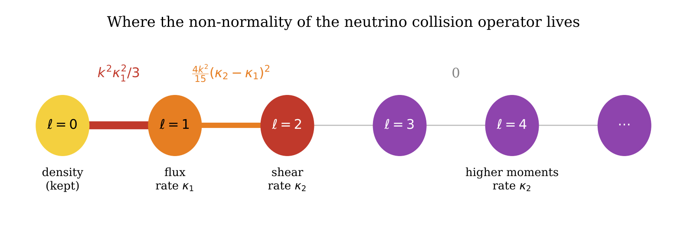
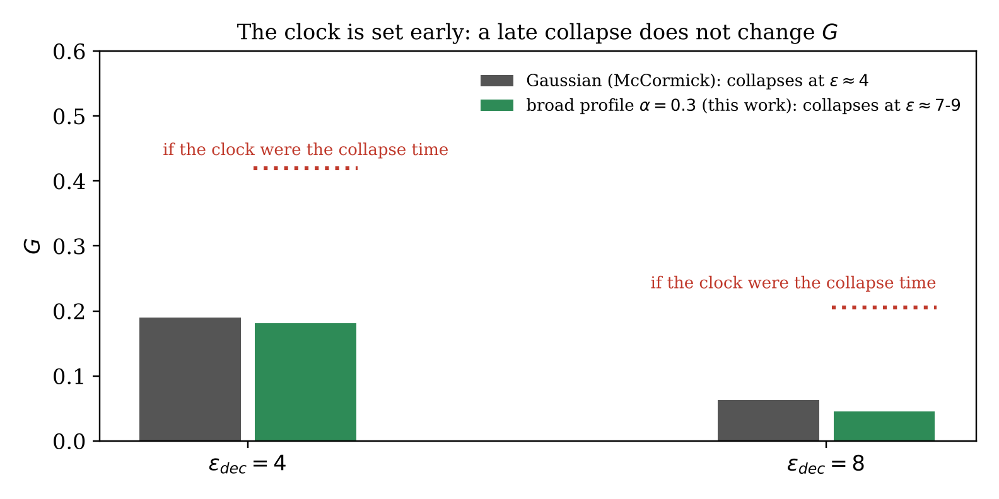
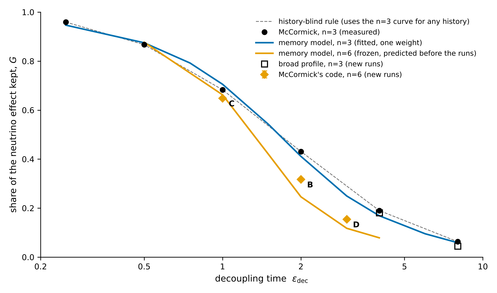
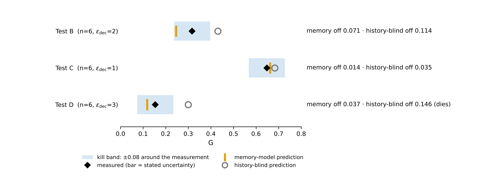
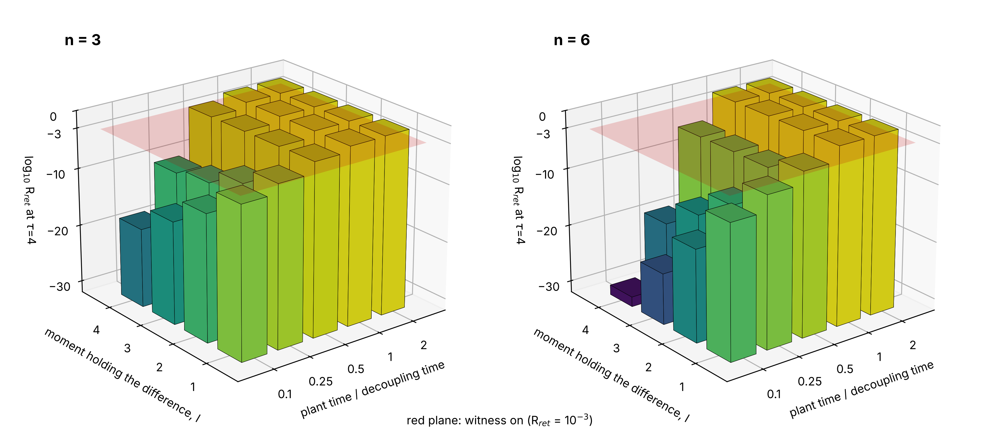
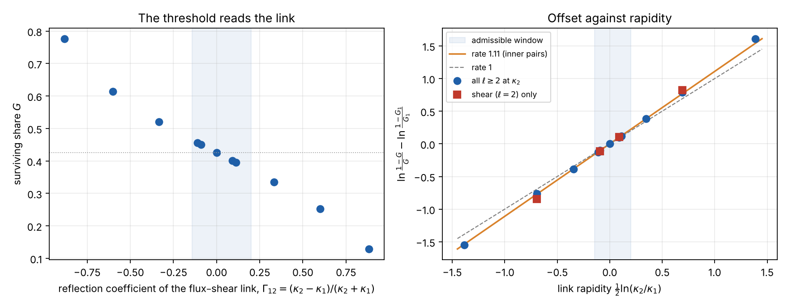

5 November 2026 (version 5.1)
McCormick has shown that neutrinos which stream freely out of a collapsing overdensity raise the threshold for primordial black hole formation, by about in the linear compaction, and that the effect fades when the neutrinos decouple gradually. This paper asks what sets that fading. First, the neutrino collision operator is read exactly as a cut between what is kept and what streams. All of its non-normality, , lies on the single link between density and flux. With separate rates for flux and shear it is , and the weight across the cut equals the sound speed, . Second, McCormick’s own code is run on cases outside his paper, with every prediction and kill line written down before the runs. A broad profile that collapses near – keeps the same share of the neutrino effect as a Gaussian that collapses near , or less, so the collapse time alone does not set the clock. A steeper decoupling history, , gives , and at , and , against , and about for the standard history: how the neutrinos leave matters, not only when. A kept-sector memory form, the population the density keeps under the decoupling operator, fitted once to McCormick’s curve and then frozen, predicted those three histories within its kill line of while a history-blind rule failed. Third, the memory has a location. Two neutrino states with the same density, flux and anisotropic stress, differing only in finer angular structure, give later density, flux and stress that differ by several per cent when the difference is set at or after decoupling; set deep in the coupled era it is erased, by the factor . An exact block elimination puts the whole effect in one hidden-source term, and the kept population obeys . No instantaneous closure on density, flux and stress alone can carry this memory. Fourth, the anisotropic stress sets the threshold. With the flux relaxing at and the shear and every higher moment at , eleven thresholds from to show that the surviving share is not set by the connection energy, which is stationary at , but by the direction of the flux–shear mismatch: runs from to , and its offset moves close to a straight line in the link rapidity , at a rate of inside the window where the split operator is a Markov generator. Damping the shear alone, with every higher moment left at the flux rate, gives a larger rate, –, where any rule built from link-weight ratios predicts less than : the threshold reads the shear itself. The frozen memory form misses this effect entirely, and so does the intrinsic displacement of the linear kept-sector state at readout, which the two collision models move by almost the same angle: the law lives in the operator’s link rapidity, and the difference between the models is written in the nonlinear collapse. Halving the neutrino fraction to leaves at , against at measured with the same code. The algebraic identities, the counterexample and every verdict’s arithmetic are machine-checked in Lean (Appendix C). Two further tests are stated for the e annihilation epoch and for the mean of the rates.
AI-assisted. The ideas and research direction are the author’s; AI tools (Claude, Anthropic) were used for literature search, computation, drafting and typesetting. The numbers come from the scripts, run logs and outputs printed in Appendix B. The simulations are runs of S. McCormick’s public code on a cloud computer, not experiments.
Primordial black holes heavier than about form while the neutrinos, which carry 41–49% of the radiation, stop scattering and stream freely. McCormick evolved these neutrinos with their angle-resolved transport equation inside spherical general relativity and found that free streaming makes collapse harder . The threshold on the linear compaction , which sets abundance, rises by , and the threshold on the compaction peak rises by . For Gaussian fluctuations a perfect-fluid collapse probability becomes about above .
He also ran gradual decoupling, with collision rate , where is the Hubble radius in units of the perturbation size. Write for the share of the instantaneous free-streaming shift that survives: His Table II gives 0.959, 0.867, 0.683, 0.431, 0.190 and 0.063 at 0.25, 0.5, 1, 2, 4 and 8. He notes that linear theory gives estimates of opposite sign and “does not determine which diagnostic, if any, predicts the nonlinear threshold” .
Two questions follow and are answered here. What in the neutrino transport operator carries the effect (Section 2)? And which clock, and which part of the decoupling history, sets (Sections 3–5)?
For one Fourier mode , the linearised neutrino intensity in McCormick’s relaxation model evolves under where is the cosine of the angle to the wave vector and projects onto the isotropic part. Free streaming is anti-Hermitian. Collisions are Hermitian, conserve the isotropic part (the neutrino energy in the plasma frame) and remove the flux, which goes to the plasma. In the normalised Legendre basis , streaming couples only neighbours, , so the operator lives on a chain (Figure 1).
For Hermitian and anti-Hermitian , , and for diagonal , . Hence This is the scalar case of the identity in : the self-commutator energy of a transport operator is the energy of its Hermitian field failing to be parallel along the links [derived; Appendix A.1]. With one rate, only the link has a jump, so $$\tfrac18\lVert[L,L^\ast]\rVert_F^2=\frac{\kappa^2k^2}{3}\qquad\text{\textsf{\small[derived; checked to $10^{-12}$, I1]}}.$$ All the non-normality of the single-rate model lies on the link between density and flux, the same channel as the momentum drag in McCormick’s plasma equation .
Let the flux relax at (momentum transfer) and shear and higher moments at . Then two links carry jumps: $$\tfrac18\lVert[L,L^\ast]\rVert_F^2=\frac{k^2\kappa_1^2}{3}+\frac{4k^2}{15}(\kappa_2-\kappa_1)^2\qquad\text{\textsf{\small[derived; checked, I2]}}.$$ The energy is stationary in at . If neutrino–neutrino scattering damps shear but not flux, with rates relative to e scattering of for and for , the shear link carries 64% and 97.5% of the non-normality [computed, under those assumed ratios].
With the weight between kept and streaming parts is , so , the radiation sound speed [derived; I3]. A rate bound built on therefore sees the root-mean-square streaming speed , not the light-speed front that empties the overdensity .
The isotropic part has the closed propagator $$\langle0|(s-L)^{-1}|0\rangle=\frac{g}{1-\kappa g},\qquad g=\frac1k\arctan\frac{k}{s+\kappa}\qquad\text{\textsf{\small[derived; checked, I4]}}.$$ The two-moment truncation, keeping , has eigenvalues , which merge at [derived; I5]. This exceptional point belongs to the truncation. With 200 moments the least-damped mode turns real only at , and in relaxation kinetic theory the hydrodynamic poles meet a branch cut instead [computed].

The code was run unchanged except for one copied file in which the decoupling exponent in is an input. Pure radiation, , cells, angle bins, , as in his Table II. A reproduction run at with , forms a black hole, inside his published bracket [measured; Appendix B.4]. For the steep history, was capped at , the stiffness his own runs reach at . At that cap deviations from isotropy are of relative order , the same estimate McCormick uses for his switch to transport .
For every test below each prediction and its kill condition were written before the runs (Appendix B.3). The threshold search runs two points per round; a run that neither collapses nor disperses by the end time, or that stops on an error, never moves the bracket, is retried once with a longer end time and is reported if still undecided. No point in any run below was undecided. These runs use McCormick’s own end-state rule, in which a numerical breakdown after counts as collapse; Section 7 tightens that rule to a detected horizon and audits every bracket edge under it.
The broad profile is decided near –, against for the Gaussian. Its thresholds are and . With :
| (broad) | (Gaussian, ) | ||
|---|---|---|---|
The broad profile keeps the same share of the neutrino effect as the Gaussian or less (29% less at ), although it collapses about twice as late (Figure 2) [measured]. A clock tied to the collapse time would have raised ; it fell. Because the test changes the profile shape together with the collapse time, it shows that the collapse time alone does not set the clock; it does not by itself separate the two, and it does not fix which earlier epoch does.
Gaussian profile, :
| () | (, ) | ||
|---|---|---|---|
| C: | |||
| B: | |||
| D: |
[measured]. The value at lies between McCormick’s and at 2 and 4. A neutrino population that decouples more abruptly, but by the same nominal time, keeps less of its effect, and the gap widens with . The history matters, not only its end point.
Test B was repeated with the rate cap raised tenfold, to , and on a finer grid, cells and angle bins. The thresholds are and , shifts of and against the pre-registered tolerance of [measured]. The cap acts only while the neutrinos are tightly coupled: the uncapped rate starts at and falls below the cap at , and for , 2 and 3. The cap control was run at only; at and 3 it is untested.

Each reading below was tested against numbers. Only the last two were tested against runs set up for them in advance; the first three were tested against McCormick’s published curve.
The first maximum of linear theory. The linear density contrast at its first maximum () reproduces the instantaneous shift (centre factor , as McCormick finds). Under gradual decoupling the share it keeps is 0.86, 0.59, 0.19, , and 0.00, a largest error of . Decoupling after is nearly invisible to it, yet still moves the nonlinear threshold [computed].
A sharp wall, and rate ratios. Treat the two-moment exceptional point, crossed at for , as a wall, or use the parameter-free escape fractions , and . Averaging each over two windows, with two weightings and two scales, gives 32 combinations. The wall variants miss by or more. With the window starting at horizon entry, every combination misses by or more. One combination, averaged from , comes within ; selected from 32, it is not counted. On Test B, which it never saw, it predicts against [computed; measured].
Diffusive escape. Diffusion with from the conformal rate , combined in series with streaming at the collapse time , gives . With it matches McCormick’s curve to , but it was built after seeing that curve, and a free fit of its exponent gives rather than . Test A with – predicted – and –, and Test B predicted . Both are excluded [measured].
History-blind. If only mattered, Tests B and D would give and about . They give and ; Test D misses by against a kill line of [measured].
The reading that survives treats the isotropic part as a kept sector and asks how much of it the decoupling operator keeps . Start a mode in at and evolve it under , with . Let be the population left in , averaged over the Gaussian profile with weights . Define the share of the kept sector’s loss that has happened by the readout time .
With no fitted number, read at the first compaction maximum , it gives 0.941, 0.860, 0.671, 0.344, 0.087 and 0.013 against McCormick’s . That is within for , with a largest error of , just outside the bar set for it in advance [computed]. McCormick’s own curve passes at , within 3% of the first maximum: the neutrinos must be decoupled by then for half the effect to survive.
The late shortfall says the collapse is still listening after the first maximum. Mixing the two epochs McCormick’s numbers single out, , with one weight fitted to his curve, , gives a largest error of [fit]. The form is not unique: with the scale fixed at the single-epoch reading misses by , and the best single readout epoch, , by . Its weight does not carry over between weightings: the same with the scale fixed at misses by , outside the bar declared for that check [computed]. The form is a fitted shape with a stated sensitivity, not a derived law.
The test is what that fitted form says about histories it never saw. All its values were computed in one file dated 13:47 on 30 October, before any run, and were not refitted afterwards:
| predicted | measured | miss | history-blind | miss | |
|---|---|---|---|---|---|
| C: | |||||
| B: | |||||
| D: |
Every miss of the memory form lies inside the kill line of set before its run; the history-blind rule fails at (Figures 3 and 4) [measured]. At and 3 the form falls below the measurement: it counts slightly too much of the early erasure. Test C was set where the two rules nearly agree, as a survival check; Test D was set where they separate. A readout window set by the neutrino flux and the enclosed mass between first maximum and apparent horizon, as McCormick suggests , is the natural next object. It is untested.


A fluid closure carries the density, the flux and the anisotropic stress, the moments . The memory form of Section 5 says the threshold depends on how the kept sector was emptied. The question here is whether that history can sit in moments a closure does not carry.
Split with and . In the relaxation model every hidden moment is damped at the same rate, so the collision term on the hidden block is times the identity and commutes with streaming. The hidden propagator is therefore exact in closed form, and eliminating gives one equation for the kept amplitude, [derived; Appendix A.5]. The kernel is the memory; the source is everything the hidden moments held at time .
Take two states with the same , differing only by in (or ), scaled by one constant to unit norm. Both are positive angular distributions (). Their kept amplitudes start equal, so their difference obeys the equation above driven only by of the hidden difference. Both are evolved under the same history, , with the planting time scanned across decoupling. The readout is the profile-weighted change in , relative to its size, ; the witness is on if . Every on/off call was written down before the run, from the survival factor of the hidden block, , and the leakage through damped rungs (Appendix B.14).
| , | , | , | , | |
|---|---|---|---|---|
| 0.1 | ||||
| 0.25 | ||||
| 0.5 | ||||
| 1 | ||||
| 2 |
at ; bold entries are on [computed]. Every call came out as predicted. The survival law is quantitative: for the ratio of the entries at and is against , and for at the law gives against at . Planted in the retained moments instead, deep in coupling the order is , each rung costing about ; after decoupling all four are of the same size. A hidden difference set at decoupling changes the later density, flux and stress as much as a visible one (Figure 5).
Doubling the number of moments, , and tightening the solver tolerances change every entry by at most of its value. Solving the elimination equation from the closed-form alone, with no solve of the full system, reproduces the full difference to –, falling fourfold with each halving of the step; leaving out the kernel misses by 19–234% [computed; Appendix B.14].
Collisions conserve and remove the rest, so never grows, and streaming links only to , with weight . Hence for [derived; Appendix A.6; Lean]. On every trajectory computed here the largest value of the ratio is [computed]. The bound limits how fast the kept sector can be emptied; it does not set the threshold.
A closure on density, flux and stress is exact only for structure set while the neutrinos are tightly coupled. Structure set at or after decoupling survives in the finer angular moments and streams back into the visible ones by several per cent. The memory McCormick’s runs record therefore has a place to live that no fluid closure contains. Whether realistic initial data carry such structure, and how far it moves the nonlinear threshold, are untested: the memory curves of Section 5 start with the hidden moments empty.

Section 2 put all the non-normality of a single-rate collision term on one link. A collision term with two rates has two links that carry it: density to flux, with jump , and flux to shear, with jump . The connection energy of the second link, , is stationary at , while the exact kept response is not (Appendix A.7). Which does the nonlinear threshold follow, and which moment carries what it follows? This section answers both with McCormick’s code, changed in one place, and then asks in which coordinate the answer is a law.
In a copy of ms_nuc.py the collision term
becomes
,
where
is the dipole part of the intensity, projected on the same angle bins
that define the flux (Appendix A.12). The dipole then relaxes at
and every moment
at
;
the neutrino energy is untouched, and the momentum handed to the plasma
is still
.
The stiff time-step cap uses the larger rate. Write
,
and keep
with
,
the Gaussian profile,
,
,
.
At
the changed code reproduces the unchanged one:
forms a black hole at
in both [measured].
On the angle bins the split collision operator is a Markov generator only for (all moments at ) and (shear alone at ); outside those windows it has a negative off-diagonal entry and can, in principle, drive a nonnegative intensity negative. The pairs , , and are inside the first window. The extreme pairs () are formal interventions on the solver: they are kept because they fix the sign and the size of the effect, and the minimum intensity was logged through every run of this section; it stayed positive in all of them except one run at , where it reached [measured].
Each threshold is found by trisection: two trial amplitudes per round, the bracket shrinking to its middle third. A run moves the bracket only if it ends in a detected horizon ( with ) or disperses. A run that stops on a numerical error, or that breaks down after without a detected horizon, is repeated once with the Courant numbers lowered from to ; if it fails again it is reported and never moves the bracket. Every decisive bracket edge of every threshold below was rerun under this rule: each upper edge is a detected horizon and each lower edge a dispersal [measured; Appendix B.15].
In the author’s coordinate a link between rates and is one reflecting step, with Smith coordinate and rapidity ; exchanging the ends negates (Appendix A.8), and a matched link carries no connection energy . For the flux–shear link, . The surviving share is itself a point on the disk, , with offset . The question becomes: how does move with the link’s rapidity?
(a) The frozen memory form of Section 5, with the collision diagonal , predicts almost no effect: at and at . (b) If the connection energy controlled the threshold, the two shifts would share a sign, since the energy is even about . (c) If the threshold read the link’s reflection coefficient, the shifts would be odd in : equal and opposite.
The reference thresholds are McCormick’s, and , and ; the point is measured here with the changed code:
[measured]. At and the shifts are and , so reading (a) fails by a factor of forty and with the wrong sign at , reading (b) fails on the sign, and reading (c) holds: the two shifts cancel to (Figure 6).
Read in the offset, the eleven points lie close to one line through (residual in ). Each pair splits into an odd part, , the rate at which the offset moves per unit of link rapidity, and an even part. The anchor cancels from the odd part; the two reference thresholds do not, because each enters through at two different (Appendix A.9). The ranges below are hard bounds from the four corners of each pair of brackets:
| odd rate | |||||
| bracket range | |||||
| even part |
[measured]. The rate is not one: a rule in which the offset of moves by exactly the link rapidity is excluded at every pair. Inside the admissible window it lies at –; it rises to at the outermost, formal pair, where a small even part appears.
The odd rate divides by , so at the innermost pairs a shift of in one threshold moves it by . Three systematics are larger than the bracket there. The fluid reference carries in McCormick’s archive, which moves every rate by about together. Angular and radial resolution have shifted thresholds by – in this code; the angular part, measured below, is common to each pair and cancels. And the two admissible pairs, at and , differ by , many bracket widths, which says the error per point is about . Within that error the inner rates are one number, . That is a measured number; no closed form is attached to it [measured].
Damp only the shear, , at , and keep the flux and every at : the collision term becomes , with the projection on the same angle bins (Appendix A.12). Now two links jump, flux to shear by and shear to the next rung by . A rule in which the offset moves by a sum of link-weight ratios times link rapidities then nearly cancels, since and differ by , and predicts ; a threshold that reads the shear damping itself predicts a rate near the one above. Both predictions and their kill lines were written before the runs, first at the extreme pair and then, after the admissibility window was found, inside it. At the changed code again reproduces the unchanged one.
| shear only | odd rate | all , same pair | ||
|---|---|---|---|---|
| , range | ||||
| , range | ||||
[measured]. The link-weight reading fails by an order of magnitude at both pairs; the shear reading holds at both. Damping the shear alone moves the threshold more than damping the shear and every higher moment together, by in the rate at either pair: the moments above the shear, relaxed with it, pull the other way.
Repeating the and pair with angle bins instead of , set before the run to pass if the odd rate moved by less than and each threshold by less than , gives and : both thresholds rise, by and , and the odd rate moves from to (range ). The resolution shift is common to and and cancels from the odd rate to below ; it moves itself by about [measured].
The reference point for is measured here with the changed code at tolerance : , at the lower edge of McCormick’s bracket , whose midpoint would shift every prediction that uses it by about . Only the runs shrink the stiff time step, by the factor ; rerunning with its step shrunk fourfold leaves unchanged to , so the slight asymmetry between the two sides is not numerical [measured].
The kept-sector operator contains no . With , , and McCormick’s instantaneous threshold at that fraction, , the threshold is , so . The memory form had predicted ; against measured here at the difference is [measured]. The share is nearly, not exactly, independent of how much of the radiation is neutrinos.
The rapidity is a coordinate on the parameters of the collision operator. In the author’s framework a parameter chart does not generate the geometry of a kept subspace; the intrinsic measure of how far the kept sector moved when changed is the distance of its state in the moment chain. That distance was computed for the same histories, as the principal angle at the first compaction maximum between the kept-sector trajectory at ratio and at (Section 5’s chain, profile-averaged), with the readings and kill lines written first: if the threshold read that distance, the all- and shear-only families would fall on one line in it, and the rise of the odd rate with would flatten. Neither happens: the two families’ slopes in the state angle differ by (they differ by in the rapidity), the odd rates spread by against , and the eleven offsets are far less linear in the angle (residual ) than in the rapidity (). The two collision models move the linear kept-sector state at readout by almost the same angle ( against at ) while their thresholds differ by . The eigenprojector of the least-damped mode is not available as an alternative: at the readout scale that mode is isolated only for , which carries about of the profile weight; for the other the hydrodynamic pole has met the branch cut of Section 2 and there is no isolated kept eigenvalue. So the law is a law in the operator’s own link rapidity, and not in the displacement of the linear kept state: the difference between the two collision models is written after the readout epoch, in the nonlinear collapse [measured; Appendix B.17].
The anisotropic stress carries the threshold. Damping the shear faster than the flux keeps the stress from building and makes the collapse more fluid-like; damping it slower lets the stress the free-streaming effect is made of survive. The threshold reads the direction of that mismatch, in the rapidity of the collision operator’s flux–shear link, and not how much energy sits on the link. That is the place Section 6 found the memory: in the angular structure a fluid closure drops. The kept-sector memory form, which counts only what the density keeps, cannot see it, and neither can the linear kept state at the first maximum [H].

An outside review of the companion paper reported two further thresholds on McCormick’s code: a step in which collisions stop for good at , at , and , , at . Here and bracket the first, and and the second, each dispersing below and forming a black hole above [measured].
The annihilation control. During e annihilation the plasma sound speed falls to at MeV, while the neutrinos’ root-mean-square speed stays . The contest between front and sound, , reaches at ( there). If the softer plasma enhanced the free-streaming effect, the shift would reach , outside McCormick’s envelope of –, so that reading already fails. If it reduces it, the shift stays at – [computed; reading]. At the two readings differ from the unmodified by and . The run McCormick lists as missing, the same transport at fixed with against the full equation of state at –, would confirm the sign.
Which mean of the rates. McCormick calibrates his single rate to an energy-group calculation. The arithmetic mean of the group rates reproduces his calibrated decoupling temperatures: MeV against (e only), MeV against – (with ), and a mass step of against –. The harmonic and geometric means fail; the mean of squares also passes, so the class of means is identified, not one mean [computed; reading].
The closest published analogue is bulk viscosity, which raises the threshold roughly in proportion to its strength in full numerical relativity . Free streaming is a second dissipative channel with the same sign. Papanikolaou fixes thresholds at horizon crossing for a time-dependent equation of state, with following . Escrivà ties them to the initial profile and the curvature of the compaction at its peak . Test A is consistent with both: the neutrino clock is set early.
The 2026 thermal-history mass functions through neutrino decoupling and e annihilation treat neutrinos as part of the fluid , so the step McCormick found is absent from them. For supermassive seeds, the -distortion bound leaves only heavy-tailed statistics , for which McCormick finds that the raised threshold costs a factor – in abundance in his examples .
The nearest analogue to the result of Section 7 is viscous damping. Bulk viscosity enters the collapse through the isotropic pressure ; the shear relaxation rate of a free-streaming component enters through the anisotropic stress, and no published threshold study varies it. In relaxation-time kinetic theory the kept sector’s response is a continued fraction whose hydrodynamic pole meets a branch cut as the collision rate falls ; Section 7 finds that at the readout scale the kept sector has no isolated eigenvalue for most of the profile, which is why the threshold is a law in the operator’s link rapidity and not in the displacement of a kept state.
A search of the literature to October 2026 found no other work on thresholds with free-streaming components, on gradual kinetic decoupling in numerical relativity, on how the threshold depends on when a collision rate switches off, or on how it depends on the ratio of the shear and flux relaxation rates. The runs of Sections 3 and 7 are, as far as that search shows, the first such runs.
The neutrino collision operator is a cut whose whole non-normality sits on one link, density to flux, with weight equal to the sound speed. McCormick’s code, run on cases outside his paper, shows that the collapse time alone does not set the neutrino clock, and that the decoupling history changes the threshold, not only its end point. The kept-sector memory, read mostly at the first compaction maximum and fitted once, predicted three histories it had not seen to within , and , while a history-blind rule failed. The steep-history thresholds do not move with the rate cap or the grid. The memory sits in the angular structure a fluid closure drops: set at or after decoupling, it returns into density, flux and stress; set before, it is erased. And the anisotropic stress carries the threshold: with the shear relaxing at times the flux rate, the offset of the surviving share moves close to a straight line in the link rapidity , at a rate of inside the admissible window, and at – when the shear alone is damped. The direction of the flux–shear mismatch, not its connection energy, is what the collapse reads; the law lives in the collision operator’s own link rapidity, not in the displacement of the linear kept state; and the rate is a measured number with no closed form attached.
99 S. McCormick, Free-streaming neutrinos raise the threshold for primordial black hole formation, preprint (2026). Simulation code, threshold data and scripts: Zenodo, doi:10.5281/zenodo.23808375. S. McCormick, PBH_neutrino_simulation (code and threshold data), github.com/quasilocal/PBH_neutrino_simulation (2026); archived as doi:10.5281/zenodo.23808375. J. Beasley, Non-Normality Is Connection Energy (2026), Zenodo, doi:10.5281/zenodo.22804072. J. Beasley, The Weight Between: What the present must keep, and what it costs to move it, v1.1 (2026). J. Beasley, The Offset Speed Limit: Rate is weight, v1.1 (2026). J. Beasley, Colour Selects the Leader, v1.1 (2026). J. Beasley, Beyond the Event Horizon: What Survives at a Rigidity Wall, edition 10.1 (2026). P. Romatschke, Retarded correlators in kinetic theory: branch cuts, poles and hydrodynamic onset transitions, Eur. Phys. J. C (2016), arXiv:1512.02641. J. Hu, Relaxation time approximation revisited and non-analytical structure in retarded correlators, arXiv:2409.05131. Yuwen, Joana, Wang and Cai, PBH formation with bulk viscosity, arXiv:2606.26532 (2026). T. Papanikolaou, Toward the primordial black hole formation threshold in a time-dependent equation-of-state background, arXiv:2205.07748. A. Escrivà, arXiv:2504.05814. Gonin, Froustey, Escrivà, Magaraggia, Kühnel and Hasinger, Primordial asymmetries, primordial equation of state and primordial black holes, arXiv:2608.22240 (2026). Dave, Yan, Ilyas and Cai, Evading the CMB -distortion bound on supermassive PBH seeds with non-Gaussian tails, arXiv:2607.03138 (2026). C.-P. Ma and E. Bertschinger, Astrophys. J. 455, 7 (1995). J. Beasley, Intrinsic Quantum Geometric Tensor on the Grassmannian and Spectral Lower Bounds on Dissipation, v7.2, Zenodo, doi:10.5281/zenodo.23351266 (2026).
Let with and . Then , and For diagonal , . So Streaming couples only and , with . Each link appears twice in the ordered sum, which gives . With , and , this is . With it is .
with has the single entry , so . The variance of in the isotropic state is , the same number.
Write , so . Projecting onto with gives , so .
On , , with characteristic polynomial . Its discriminant vanishes at , where the matrix is not diagonalisable.
Write with , and split along and . Then and . On the hidden block commutes with , so the generators at different times commute and the propagator is the product , with , . Variation of constants gives ; substituting into gives For two states with equal the difference obeys the same equation with source and ; if it vanishes identically. The time-independent case is checked in Lean (Appendix C).
With , , so for a unit initial state. Since and , , and With and , . The core inequality and the corollary under are checked in Lean (Appendix C).
Keep three moments, , with streaming weights , , and with , so that (the damping enters with a minus sign, as in Section 2). The kept response is the continued fraction $$R_{00}=\cfrac{1}{s+\cfrac{k^2c_0^2}{s+\kappa_1+\cfrac{k^2c_1^2}{s+\kappa_2}}} .$$ At this is , so and . The energy has there. Checked by direct inversion of the matrix; checked in Lean (Appendix C).
For , , and . Hence , since with .
Write and let . The odd part of the pair is : the anchor cancels identically. With , , so which vanish only if . The reference thresholds therefore enter the odd rate, with coefficients and per unit for the inner pairs, which is the common-mode term of Section 7.
gives , , , so and : the adjacent weights differ by from the second link on, which is why a rule additive in link-weight ratios nearly cancels when two adjacent links jump by opposite rapidities (Section 7). Checked in Lean.
Let , the odds , so , and let . The odd rate is , and for and a rational bound , with every threshold written as an integer on a common scale. decreases in , so over a pair of brackets is smallest at the upper corner of the bracket with the lower corner of the bracket, and largest at the opposite pair of corners; checking both corners bounds the rate over the whole bracket pair. Each such inequality is decided exactly by Lean’s kernel (Appendix C).
On the midpoint bins with weight , write , , and . Then by the symmetry of the bins, because , and by symmetry. So and are the orthogonal projections of the intensity onto the discrete and directions, orthogonal to each other and to the isotropic part. The collision terms of Section 7, and , therefore conserve the bin-summed energy exactly, leave the dipole relaxing at in both, and relax the part at in both (together with every in the first, alone in the second); differs from the continuum by at . Checked numerically to (Appendix B.15).
# SCRIPT: PBH-NU-IDENTITIES checks of every derived identity used in the paper
# Kill conditions (written first): each identity must hold to 1e-10 relative, else the statement is withdrawn.
import numpy as np
from scipy.integrate import quad
LM=80
c=lambda l:(l+1)/np.sqrt((2*l+1)*(2*l+3)) # <l+1|mu|l> in the normalised Legendre basis
Mu=np.zeros((LM+1,LM+1))
for l in range(LM): Mu[l,l+1]=Mu[l+1,l]=c(l)
def L_op(k,k1,k2):
D=np.diag([0.0,-k1]+[-k2]*(LM-1)); A=-1j*k*Mu; return A,D,A+D
fro2=lambda X:np.sum(np.abs(X)**2)
print('I1 single rate: (1/8)|[L,L*]|^2 = kappa^2 k^2/3')
for k,kap in [(1.0,0.3),(2.0,1.5),(0.7,4.0)]:
A,D,L=L_op(k,kap,kap); lhs=fro2(L@L.conj().T-L.conj().T@L)/8
print(' k=%.1f kappa=%.1f lhs=%.12f rhs=%.12f'%(k,kap,lhs,kap**2*k**2/3))
print('I2 split rates: (1/8)|[L,L*]|^2 = k^2 k1^2/3 + (4k^2/15)(k2-k1)^2')
for k,k1,k2 in [(1.0,0.3,2.0),(2.0,1.5,0.4),(0.7,4.0,9.0)]:
A,D,L=L_op(k,k1,k2); lhs=fro2(L@L.conj().T-L.conj().T@L)/8
print(' k=%.1f k1=%.1f k2=%.1f lhs=%.12f rhs=%.12f'%(k,k1,k2,lhs,k**2*k1**2/3+4*k**2/15*(k2-k1)**2))
print('I3 weight across the cut: |P (k mu) (1-P)|^2 = k^2/3, so sqrt(E_B) = k/sqrt3 = c_s k')
P=np.zeros((LM+1,LM+1)); P[0,0]=1; Q=np.eye(LM+1)-P
for k in [1.0,2.5]: print(' k=%.1f E_B=%.12f k^2/3=%.12f'%(k,fro2(P@(k*Mu)@Q),k**2/3))
print('I4 monopole propagator <0|(s+i k mu+kappa(1-P))^-1|0> = g/(1-kappa g), g=arctan(k/(s+kappa))/k')
for k,kap,s in [(1.0,0.5,0.3),(3.0,2.0,0.1),(0.5,0.2,1.0)]:
Lfull=s*np.eye(LM+1)+1j*k*Mu+kap*Q; num=np.linalg.solve(Lfull,np.eye(LM+1)[:,0])[0]
g=np.arctan(k/(s+kap))/k; print(' k=%.1f kappa=%.1f s=%.1f matrix=%.12f closed=%.12f'%(k,kap,s,num.real,(g/(1-kap*g))))
print('I5 two-moment truncation: eigenvalues of [[0,-ik/sqrt3],[-ik/sqrt3,-kappa]] merge at kappa=2k/sqrt3')
k=1.0; kap=2*k/np.sqrt(3); ev=np.linalg.eigvals(np.array([[0,-1j*k/np.sqrt(3)],[-1j*k/np.sqrt(3),-kap]])); print(' eigenvalues',np.round(ev,10))I1 single rate: (1/8)|[L,L*]|^2 = kappa^2 k^2/3
k=1.0 kappa=0.3 lhs=0.030000000000 rhs=0.030000000000
k=2.0 kappa=1.5 lhs=3.000000000000 rhs=3.000000000000
k=0.7 kappa=4.0 lhs=2.613333333333 rhs=2.613333333333
I2 split rates: (1/8)|[L,L*]|^2 = k^2 k1^2/3 + (4k^2/15)(k2-k1)^2
k=1.0 k1=0.3 k2=2.0 lhs=0.800666666667 rhs=0.800666666667
k=2.0 k1=1.5 k2=0.4 lhs=4.290666666667 rhs=4.290666666667
k=0.7 k1=4.0 k2=9.0 lhs=5.880000000000 rhs=5.880000000000
I3 weight across the cut: |P (k mu) (1-P)|^2 = k^2/3, so sqrt(E_B) = k/sqrt3 = c_s k
k=1.0 E_B=0.333333333333 k^2/3=0.333333333333
k=2.5 E_B=2.083333333333 k^2/3=2.083333333333
I4 monopole propagator <0|(s+i k mu+kappa(1-P))^-1|0> = g/(1-kappa g), g=arctan(k/(s+kappa))/k
k=1.0 kappa=0.5 s=0.3 matrix=1.623370180076 closed=1.623370180076
k=3.0 kappa=2.0 s=0.1 matrix=0.889069885739 closed=0.889069885739
k=0.5 kappa=0.2 s=1.0 matrix=0.937653083725 closed=0.937653083725
I5 two-moment truncation: eigenvalues of [[0,-ik/sqrt3],[-ik/sqrt3,-kappa]] merge at kappa=2k/sqrt3
eigenvalues [-0.57735027+9.2e-09j -0.57735027-9.2e-09j]In a copy of run_nuc.py, the collision rate line
became
kap = (1/(2*t))*min((eps_dec/(2*np.sqrt(t*t0)))**nexp, kapcap)
with nexp (default 3) and kapcap
as inputs. Nothing else was changed.
# SCRIPT: BEYOND-STEVE-BISECT threshold bisection with gradual decoupling, profile alpha and rate exponent as inputs
import sys, json, time, os
sys.path.insert(0, os.environ['SIMDIR']); sys.path.insert(0, os.path.dirname(os.path.abspath(__file__)))
from run_nuc_n import run
tag=sys.argv[1]; qshape=float(sys.argv[2]); epsd=float(sys.argv[3]); nexp=float(sys.argv[4])
lo,hi,tol=float(sys.argv[5]),float(sys.argv[6]),float(sys.argv[7]); emax=float(sys.argv[8])
log=[]; t0=time.time()
while hi-lo>tol:
mid=0.5*(lo+hi); t1=time.time()
out=run(mid,fnu=0.409,N=400,K=32,eps0=0.1,eps_dec=epsd,eps_max=emax,qshape=qshape,nexp=nexp)
print(f'{tag} delta={mid:.5f}: {out["status"]} eps={out["eps"]:.2f} ({time.time()-t1:.0f}s)',flush=True)
log.append((mid,out['status'],float(out['eps'])))
if out['status']=='BH': hi=mid
elif out['status']=='dispersed': lo=mid
else: break
print(f'RESULT {tag}: delta_c = {0.5*(lo+hi):.5f} +- {0.5*(hi-lo):.5f} ({(time.time()-t0)/60:.1f} min)',flush=True)
json.dump(dict(tag=tag,qshape=qshape,eps_dec=epsd,nexp=nexp,dc=0.5*(lo+hi),w=hi-lo,log=log),open(f'res_{tag}.json','w'))# SCRIPT: BEYOND-STEVE-TRISECT two trial amplitudes per round in parallel (thirds of the bracket)
import sys, json, time, os
from multiprocessing import Pool
sys.path.insert(0, os.environ['SIMDIR']); sys.path.insert(0, os.path.dirname(os.path.abspath(__file__)))
from run_nuc_n import run
def one(a):
d,q,ed,n,em=a; o=run(d,fnu=0.409,N=400,K=32,eps0=0.1,eps_dec=ed,eps_max=em,qshape=q,nexp=n); return d,o['status'],float(o['eps'])
if __name__=='__main__':
tag=sys.argv[1]; q=float(sys.argv[2]); ed=float(sys.argv[3]); n=float(sys.argv[4]); lo,hi,tol=float(sys.argv[5]),float(sys.argv[6]),float(sys.argv[7]); em=float(sys.argv[8])
log=[]; t0=time.time()
with Pool(2) as p:
while hi-lo>tol:
a=lo+(hi-lo)/3; b=lo+2*(hi-lo)/3
res=p.map(one,[(a,q,ed,n,em),(b,q,ed,n,em)])
for d,s,e in res: print(f'{tag} delta={d:.5f}: {s} eps={e:.2f}',flush=True); log.append((d,s,e))
(da,sa,_),(db,sb,_)=res
if 'BH' not in (sa,sb) and 'dispersed' not in (sa,sb): break
if sa=='BH': hi=da
elif sb=='BH': lo,hi=da,db
else: lo=db
print(f'RESULT {tag}: delta_c = {0.5*(lo+hi):.5f} +- {0.5*(hi-lo):.5f} ({(time.time()-t0)/60:.1f} min)',flush=True)
json.dump(dict(tag=tag,dc=0.5*(lo+hi),w=hi-lo,log=log),open(f'res_{tag}.json','w'))BEYOND-STEVE pre-registration, written 2026-10-30 before any of these runs.
G = (delta_c - delta_c_fluid) / (delta_c_instant - delta_c_fluid), same profile.
Gaussian (alpha=1): fluid 0.49773, instant 0.52832 (Steve Table II).
alpha=0.3: fluid 0.44805, instant 0.47747 (Steve res_fl_q03 / res_nu409_q03).
TEST A broad profile alpha=0.3, rate kappa=H(eps_dec/eps)^3, eps_dec = 4 and 8.
Diffusive-escape law G=1/(1+sqrt15 (eps_dec/eps*)^1.5), eps* = 7-9 (alpha=0.3 decided late):
G(4) = 0.38-0.46 ; G(8) = 0.17-0.24
Null (curve does not move with eps*): G(4)=0.19, G(8)=0.063
Kill: the law dies if G(4) < 0.30 or G(8) < 0.13. Null dies if G(4) > 0.28.
TEST B Gaussian, steeper rate kappa=H(eps_dec/eps)^6, eps_dec = 2.
Diffusive-escape law with n=6: G = 1/(1+sqrt24 (eps_dec/eps*)^3), eps*=4 -> G = 0.62
Memory model (Weight Between agent): G = 0.25
History-blind model: G = 0.43
Kill: each model dies if measured G is more than 0.08 from its number.Reproduction check, 2026-10-30 ~14:25 CT, printed by the session (not logged to file at the time):
repro check n=3 eps_dec=2 at 0.5109 (Steve threshold 0.51092): BH 6.6146961105642985 90
(status BH, apparent horizon at eps 6.61, 90 s run time)
McCormick logG.txt bracket for the same case: 0.51109 BH, 0.51074 dispersed.A_q03_ed4 delta=0.46300: BH eps=4.70 (116s)
A_q03_ed4 delta=0.45500: BH eps=6.24 (133s)
A_q03_ed4 delta=0.45100: dispersed eps=7.01 (145s)
A_q03_ed4 delta=0.45300: dispersed eps=7.97 (154s)
A_q03_ed4 delta=0.45400: BH eps=6.89 (141s)
A_q03_ed4 delta=0.45350: BH eps=7.63 (153s)
A_q03_ed4 delta=0.45325: dispersed eps=9.51 (176s)
RESULT A_q03_ed4: delta_c = 0.45337 +- 0.00013 (17.0 min)A_q03_ed8 delta=0.46300: BH eps=4.41 (539s)
A_q03_ed8 delta=0.45500: BH eps=5.30 (545s)A_q03_ed8 delta=0.45100: BH eps=6.43 (561s)
A_q03_ed8 delta=0.44900: dispersed eps=7.81 (576s)
A_q03_ed8 delta=0.45000: BH eps=7.23 (564s)
A_q03_ed8 delta=0.44950: BH eps=9.08 (598s)
A_q03_ed8 delta=0.44925: dispersed eps=8.15 (577s)
RESULT A_q03_ed8: delta_c = 0.44938 +- 0.00012 (47.9 min)B_n6_ed2 delta=0.51350: BH eps=4.54 (1433s)
B_n6_ed2 delta=0.50525: dispersed eps=5.51 (1441s)
B_n6_ed2 delta=0.50938: BH eps=5.28 (1434s)
B_n6_ed2 delta=0.50731: dispersed eps=6.58 (1464s)B_n6_ed2_fin delta=0.50800: BH eps=5.99
B_n6_ed2_fin delta=0.50869: BH eps=5.54
B_n6_ed2_fin delta=0.50754: BH eps=6.96
B_n6_ed2_fin delta=0.50777: BH eps=6.27
RESULT B_n6_ed2_fin: delta_c = 0.50743 +- 0.00011 (48.5 min)# SCRIPT: PBH-NU-MEMORY-CURVE kept-sector survival (memory form) curves for the figures; same object as WB-STEVE-07
import numpy as np, json
from scipy.integrate import solve_ivp
from scipy.special import roots_legendre
kn,kw=roots_legendre(36); kmin,kmax=0.25,9.0; ks=0.5*(kmax-kmin)*(kn+1)+kmin; wk=0.5*(kmax-kmin)*kw
wE=wk*ks**2*np.exp(-ks**2/2); wE/=wE.sum()
LM=60; M=np.zeros((LM+1,LM+1))
for l in range(1,LM+1): M[l,l-1]=M[l-1,l]=l/np.sqrt(4.0*l*l-1)
tau0=0.02; eg=np.linspace(tau0,6.0,1200); n=LM+1; P=np.zeros(n); P[0]=1
def surv(k,ed,p):
def rhs(t,v):
K=0.0 if ed is None else ed**p/t**(p+1)
x,y=v[:n],v[n:]
return np.concatenate([-K*(1-P)*x+k*(M@y),-K*(1-P)*y-k*(M@x)])
v0=np.zeros(2*n); v0[0]=1
s=solve_ivp(rhs,(tau0,eg[-1]),v0,method='BDF',t_eval=eg,rtol=1e-9,atol=1e-12)
return s.y[0]**2+s.y[n]**2
f=lambda ed,p: sum(w_*surv(kk,ed,p) for kk,w_ in zip(ks,wE))
i17,i40=np.searchsorted(eg,1.7),np.searchsorted(eg,4.0); w=0.890; Ai=f(None,3)
out={}
for p,eds in [(3,[0.25,0.5,0.75,1,1.5,2,3,4,6,8]),(6,[0.5,1,1.5,2,3,4])]:
for ed in eds:
g=(1-f(ed,p))/(1-Ai); out['%d_%g'%(p,ed)]=dict(first_max=float(g[i17]),two_epoch=float(w*g[i17]+(1-w)*g[i40]))
print(p,ed,round(g[i17],3),round(w*g[i17]+(1-w)*g[i40],3),flush=True)
json.dump(out,open('memory_curve.json','w'))3 0.25 0.941 0.947
3 0.5 0.86 0.875
3 0.75 0.768 0.792
3 1 0.671 0.705
3 1.5 0.489 0.542
3 2 0.344 0.411
3 3 0.168 0.249
3 4 0.087 0.169
3 6 0.03 0.095
3 8 0.013 0.059
6 0.5 0.862 0.877
6 1 0.623 0.662
6 1.5 0.352 0.42
6 2 0.159 0.246
6 3 0.026 0.118
6 4 0.005 0.079# SCRIPT: WB-STEVE-03-PAPER-OBJECTS
# D2 (memory survival of the kept sector under the time-dependent relaxing operator) and D3 (energy that has crossed into the
# hidden sector) as predictors of Steve's G(eps_dec). Kill conditions are those stated in WB-STEVE-02-LINEAR (D2, D3, H1 and
# opposite runs); restated:
# D2 g = (1-A)/(1-A_inst), A = population of the kept sector l=0 at readout epoch eps* in {1.7, 4.0} (the two epochs Steve's
# own numbers give), no fitted parameter. Dies if max_eps |g - G| >= 0.10 at BOTH epochs.
# D3 g = X/X_inst, X = sum_{l>=2} |F_l|^2/(2l+1) summed over the Gaussian perturbation (weights k^2 zeta^2), same epochs, same kill.
# Opposite runs: kept sector = l in {0,1} (flux kept), and k r_m fixed at 2 instead of the profile average.
# Fitted-epoch scan is diagnostic only (a fitted epoch is not a pass).
import numpy as np
from scipy.integrate import solve_ivp
from scipy.special import roots_legendre
import wb_lin
Gs = {0.25: 0.960, 0.5: 0.868, 1.0: 0.684, 2.0: 0.431, 4.0: 0.190, 8.0: 0.063}
kn, kw = roots_legendre(36); kmin, kmax = 0.25, 9.0; ks = 0.5*(kmax-kmin)*(kn+1)+kmin; wk = 0.5*(kmax-kmin)*kw
wE = wk*ks**2*np.exp(-ks**2/2) # energy weights k^2 zeta(k)^2 of the Gaussian perturbation
wE /= wE.sum()
LM = 60; a = lambda l: l/np.sqrt(4.0*l*l-1)
M = np.zeros((LM+1, LM+1))
for l in range(1, LM+1): M[l, l-1] = M[l-1, l] = a(l)
tau0 = 0.02; eg = np.linspace(tau0, 6.0, 1200)
def survival(k, ed, keep):
"""population of kept sector (keep=1: l=0; keep=2: l=0,1) vs tau, under dv/dtau = -(i k M + Kc (1-P)) v, v(tau0)=|0>."""
n = LM+1; P = np.zeros(n); P[:keep] = 1
def rhs(t, v):
K = 0.0 if ed is None else ed**3/t**4
x, y = v[:n], v[n:]
return np.concatenate([-K*(1-P)*x+k*(M @ y), -K*(1-P)*y-k*(M @ x)])
v0 = np.zeros(2*n); v0[0] = 1
sol = solve_ivp(rhs, (tau0, eg[-1]), v0, method='BDF', t_eval=eg, rtol=1e-9, atol=1e-12)
pop = sol.y[:keep]**2+sol.y[n:n+keep]**2
return np.sum(pop, axis=0)
def avg_surv(ed, keep, single=None):
if single is not None: return survival(single, ed, keep)
out = np.zeros_like(eg)
for kk, w_ in zip(ks, wE): out += w_*survival(kk, ed, keep)
return out
res = {}
for keep, tag in [(1, 'kept=l0'), (2, 'kept=l0,1')]:
for single, stag in [(None, 'profile-averaged'), (2.0, 'k r_m=2')]:
Ai = avg_surv(None, keep, single); curves = {}
for ed in Gs:
A = avg_surv(ed, keep, single); curves[ed] = (1-A)/(1-Ai)
res[(tag, stag)] = curves
for es in [1.7, 4.0]:
i = np.searchsorted(eg, es); err = {ed: curves[ed][i]-Gs[ed] for ed in Gs}
print('D2 %-10s %-17s eps*=%.1f : g = %s max|err| = %.3f' % (tag, stag, es, np.round([curves[ed][i] for ed in Gs], 3), max(abs(v) for v in err.values())))
# fitted-epoch scan (diagnostic only)
best = min(((max(abs(curves[ed][i]-Gs[ed]) for ed in Gs), eg[i]) for i in range(40, len(eg), 5)))
print(' fitted-epoch scan (diagnostic only): best eps* = %.2f with max|err| = %.3f' % (best[1], best[0]))
print('Steve G :', [Gs[e] for e in Gs])
# D3 from the full linear solver
def hidden_energy(ed, Rn=0.409):
X = np.zeros_like(eg)
for kk, w_ in zip(ks, wE):
_, Y = wb_lin.run_mode(kk, tau0, eg, Rn, ed)
F = Y[4:]; ls = np.arange(2, 2+F.shape[0])
X += w_*np.sum(F**2/(2*ls[:, None]+1), axis=0)
return X
Xi = hidden_energy(None); D3 = {}
for ed in Gs:
D3[ed] = hidden_energy(ed)/Xi
for es in [1.7, 4.0]:
i = np.searchsorted(eg, es); print('D3 eps*=%.1f : g = %s max|err| = %.3f' % (es, np.round([D3[ed][i] for ed in Gs], 3), max(abs(D3[ed][i]-Gs[ed]) for ed in Gs)))
best = min(((max(abs(D3[ed][i]-Gs[ed]) for ed in Gs), eg[i]) for i in range(40, len(eg), 5)))
print('D3 fitted-epoch scan (diagnostic only): best eps* = %.2f with max|err| = %.3f' % (best[1], best[0]))D2 kept=l0 profile-averaged eps*=1.7 : g = [0.941 0.86 0.671 0.344 0.087 0.013] max|err| = 0.103
D2 kept=l0 profile-averaged eps*=4.0 : g = [0.997 0.994 0.987 0.959 0.83 0.429] max|err| = 0.640
fitted-epoch scan (diagnostic only): best eps* = 1.87 with max|err| = 0.065
/tmp/claude-0/-home-claude/502f5ad8-acd9-59a2-b5cf-d48e7967cc3a/scratchpad/a_wb/wb_steve_03_paper_objects.py:46: RuntimeWarning: invalid value encountered in divide
A = avg_surv(ed, keep, single); curves[ed] = (1-A)/(1-Ai)
D2 kept=l0 k r_m=2 eps*=1.7 : g = [1. 0.955 0.772 0.393 0.097 0.014] max|err| = 0.093
D2 kept=l0 k r_m=2 eps*=4.0 : g = [1.001 1.007 1.016 1.006 1.008 0.587] max|err| = 0.818
fitted-epoch scan (diagnostic only): best eps* = 1.69 with max|err| = 0.095
D2 kept=l0,1 profile-averaged eps*=1.7 : g = [0.981 0.922 0.735 0.373 0.09 0.013] max|err| = 0.100
D2 kept=l0,1 profile-averaged eps*=4.0 : g = [0.995 0.983 0.941 0.817 0.544 0.217] max|err| = 0.386
fitted-epoch scan (diagnostic only): best eps* = 1.84 with max|err| = 0.082
D2 kept=l0,1 k r_m=2 eps*=1.7 : g = [0.986 0.933 0.752 0.385 0.094 0.014] max|err| = 0.096
D2 kept=l0,1 k r_m=2 eps*=4.0 : g = [0.998 0.993 0.979 0.882 0.584 0.261] max|err| = 0.451
fitted-epoch scan (diagnostic only): best eps* = 1.77 with max|err| = 0.089
Steve G : [0.96, 0.868, 0.684, 0.431, 0.19, 0.063]
/tmp/claude-0/-home-claude/502f5ad8-acd9-59a2-b5cf-d48e7967cc3a/scratchpad/a_wb/wb_steve_03_paper_objects.py:66: RuntimeWarning: invalid value encountered in divide
D3[ed] = hidden_energy(ed)/Xi
D3 eps*=1.7 : g = [1.006e+00 9.420e-01 6.770e-01 2.620e-01 3.200e-02 1.000e-03] max|err| = 0.169
D3 eps*=4.0 : g = [1.024 1.071 1.154 1.168 0.872 0.198] max|err| = 0.737
D3 fitted-epoch scan (diagnostic only): best eps* = 1.92 with max|err| = 0.112# SCRIPT: WB-STEVE-07-HISTORY
# Discriminating prediction for the next step. Table II interpolation cannot predict a DIFFERENT collision history, the
# two-epoch memory-survival form can. kappa = H (eps_dec/eps)^n with n = 2 and 6 (Steve used n = 3), eps_dec = 1 and 2.
# KILL CONDITION (before the run): the test is only worth asking Steve for if the predicted G for n = 2 or n = 6 differs from the
# n = 3 value by at least 0.10 at some eps_dec; otherwise the memory form is insensitive to history and the step is dropped.
import numpy as np
from scipy.integrate import solve_ivp
from scipy.special import roots_legendre
kn, kw = roots_legendre(36); kmin, kmax = 0.25, 9.0; ks = 0.5*(kmax-kmin)*(kn+1)+kmin; wk = 0.5*(kmax-kmin)*kw
wE = wk*ks**2*np.exp(-ks**2/2); wE /= wE.sum()
LM = 60; M = np.zeros((LM+1, LM+1))
for l in range(1, LM+1): M[l, l-1] = M[l-1, l] = l/np.sqrt(4.0*l*l-1)
tau0 = 0.02; eg = np.linspace(tau0, 6.0, 1200); n = LM+1; P = np.zeros(n); P[0] = 1
def surv(k, ed, p):
def rhs(t, v):
K = 0.0 if ed is None else ed**p/t**(p+1) # a*kappa = (1/tau)(eps_dec/tau)^p
x, y = v[:n], v[n:]
return np.concatenate([-K*(1-P)*x+k*(M @ y), -K*(1-P)*y-k*(M @ x)])
v0 = np.zeros(2*n); v0[0] = 1
sol = solve_ivp(rhs, (tau0, eg[-1]), v0, method='BDF', t_eval=eg, rtol=1e-9, atol=1e-12)
return sol.y[0]**2+sol.y[n]**2
f = lambda ed, p: sum(w_*surv(kk, ed, p) for kk, w_ in zip(ks, wE))
i17, i40 = np.searchsorted(eg, 1.7), np.searchsorted(eg, 4.0); w = 0.890
Ai = f(None, 3)
res = {}
for p in [2, 3, 6]:
for ed in [1.0, 2.0]:
g = (1-f(ed, p))/(1-Ai); res[(p, ed)] = w*g[i17]+(1-w)*g[i40]
print('n = %d, eps_dec = %.0f : G_pred(two-epoch, w = 0.89) = %.3f (n=3 Table II value %.3f)' % (p, ed, res[(p, ed)], {1.0: 0.684, 2.0: 0.431}[ed]))
dmax = max(abs(res[(p, ed)]-res[(3, ed)]) for p in [2, 6] for ed in [1.0, 2.0])
print('largest change from n=3: %.3f -> %s' % (dmax, 'discriminating' if dmax >= 0.10 else 'DROPPED (insensitive)'))n = 2, eps_dec = 1 : G_pred(two-epoch, w = 0.89) = 0.730 (n=3 Table II value 0.684)
n = 2, eps_dec = 2 : G_pred(two-epoch, w = 0.89) = 0.511 (n=3 Table II value 0.431)
n = 3, eps_dec = 1 : G_pred(two-epoch, w = 0.89) = 0.705 (n=3 Table II value 0.684)
n = 3, eps_dec = 2 : G_pred(two-epoch, w = 0.89) = 0.411 (n=3 Table II value 0.431)
n = 6, eps_dec = 1 : G_pred(two-epoch, w = 0.89) = 0.662 (n=3 Table II value 0.684)
n = 6, eps_dec = 2 : G_pred(two-epoch, w = 0.89) = 0.246 (n=3 Table II value 0.431)
largest change from n=3: 0.165 -> discriminatingoriginal wb_steve_07_out.txt written 2026-10-30 13:47:53.348475647 -0500; Test B launched about 14:30 CT the same day# SCRIPT: WB-STEVE-01-ALGEBRA
# Tests T0-T4 mapping "The Weight Between" v1.1 onto McCormick's free-streaming PBH preprint (algebraic part).
# KILL CONDITIONS (written before any run):
# T0 Steve-internal consistency (so the targets are trustworthy). Table II: recompute Delta C_l,c/C_l,c from the delta_c
# columns through Eq.(15) delta = C - 3C^2/8; dies (flag only) if any row differs from the printed value by > 0.3 pt.
# Also recompute G = shift/shift_inst for the gradual rows (flag if any differs from the brief's G by > 0.005).
# T1 Prop 5 / Def 4 on Steve's operator L = -i k mu - kappa (I-P), P = projector on l=0 (orthonormal Legendre basis).
# H = k mu, E_B = ||P H (1-P)||_F^2 must equal k^2/3 = (1/2)||[H,P]||_F^2 = Var_{|0>}(H) to 1e-12 relative. Dies otherwise.
# Connection-energy identity (scalar form, H' = -L = D + iK, D=diag(kappa_l), K = k mu):
# (1/4)||[H',H'^dag]||^2 = ||[D,K]||^2 = S_2. Dies if off by > 1e-10 relative.
# T2 Hidden-walk (Schur) formula of the paper: G_B(z) = [z - E - W (z-F)^{-1} W^dag]^{-1} with E=0, W the l=0->l>=1 block,
# F the hidden block of L, must equal the closed form G(z) = g(s)/(1 - kappa g(s)), g(s)=arctan(k/s)/k, s=z+kappa,
# to 1e-8 relative at 50 random complex z (Re s>0). Dies otherwise.
# Two-level EP: eigenvalues of [[0,-i k/sqrt3],[-i k/sqrt3,-kappa]] coalesce at kappa = 2 k/sqrt3 = 2 sqrt(E_B). Dies otherwise.
# T3 Ladder on Steve's single-rate model: all gaps equal kappa, so S_0^2 = S_-2 S_2 and S_-1^2 = S_-2 S_0 must be EQUALITIES
# (1e-12). Dies otherwise. For the energy-dependent (multigroup) rates the same inequalities must be strict.
# T4 Which rung is the effective single rate of a spread of rates? Pre-registered claim (to be killed if wrong): the paper's
# ladder says the effective rate is a power mean of the group rates, M_p, p in {-2,-1,0,+1,+2}. PASS only if ONE rung p
# reproduces BOTH of Steve's calibrated decoupling temperatures, e+- only: 1.6 MeV and with nu-nu: 0.93-1.0 MeV,
# each within 15 percent, using only the rate numbers printed in his Appendix C. Opposite run: every other p tried.
import numpy as np
from scipy.special import erfc
from scipy.optimize import brentq
rng = np.random.default_rng(3010)
fro2 = lambda X: float(np.real(np.vdot(X, X)))
print('=== T0 Steve-internal consistency ===')
dc_f = 0.49773
rows = [('inst eps0=0.1 Rnu=.409', 0.52832, 9.6), ('dec 0.25', 0.52709, 9.2), ('dec 0.5', 0.52428, 8.3), ('dec 1', 0.51865, 6.5),
('dec 2', 0.51092, 4.0), ('dec 4', 0.50354, 1.8), ('dec 8', 0.49967, 0.6),
('Rnu=.10', 0.50547, 2.3), ('Rnu=.20', 0.51297, 4.7), ('Rnu=.30', 0.52027, 7.0), ('Rnu=.488', 0.53379, 11.5),
('alpha .3', 0.47747, 9.3), ('alpha .5', 0.49682, 9.4), ('alpha 2', 0.56342, 9.9), ('alpha 4', 0.59734, 10.0)]
Cl = lambda d: (4/3)*(1-np.sqrt(1-1.5*d))
fl = {'alpha .3': 0.44805, 'alpha .5': 0.46687, 'alpha 2': 0.53274, 'alpha 4': 0.56819}
for nm, dn, printed in rows:
df = fl.get(nm, dc_f); s = 100*(Cl(dn)/Cl(df)-1)
print('%-24s Delta C_l,c = %5.2f %% printed %5.1f diff %+5.2f %s' % (nm, s, printed, s-printed, 'FLAG' if abs(s-printed) > 0.3 else ''))
sh = {0.25: 5.90, 0.5: 5.33, 1: 4.20, 2: 2.65, 4: 1.17, 8: 0.39}; inst = 6.15
Gbr = {0.25: .959, .5: .867, 1: .683, 2: .431, 4: .190, 8: .063}
G = {e: (v)/inst for e, v in sh.items()}
# use the delta_c columns directly (more digits than the percent column)
dcs = {0.25: 0.52709, .5: 0.52428, 1: 0.51865, 2: 0.51092, 4: 0.50354, 8: 0.49967}
G = {e: (dcs[e]-dc_f)/(0.52832-dc_f) for e in dcs}
for e in G: print('eps_dec %5.2f G(from delta_c) = %.3f brief %.3f diff %+.3f %s' % (e, G[e], Gbr[e], G[e]-Gbr[e], 'FLAG' if abs(G[e]-Gbr[e]) > .005 else ''))
Rv = np.array([.1, .2, .3, .409, .488]); dC = np.array([2.3, 4.7, 7.0, 9.6, 11.5]); dd = np.array([1.56, 3.06, 4.53, 6.15, 7.24])
print('shift/R_nu C_l: ', np.round(dC/Rv, 2), ' spread %.1f %%' % (100*np.std(dC/Rv)/np.mean(dC/Rv)))
print('shift/R_nu delta_c: ', np.round(dd/Rv, 2), ' spread %.1f %%' % (100*np.std(dd/Rv)/np.mean(dd/Rv)))
# Table III slopes and ratios
x = np.array([1e-1, 3e-2, 1e-2, 3e-3, 1e-3, 3e-4, 1e-4]); pf = np.array([.679, .497, .390, .288, .215, .151, .105]); fs = np.array([.799, .590, .470, .343, .255, .178, .123])
print('Table III ratios', np.round(fs/pf, 3), ' slopes', np.polyfit(np.log(x), np.log(pf), 1)[0].round(3), np.polyfit(np.log(x), np.log(fs), 1)[0].round(3))
# beta^1.18 rule: Gaussian C_l, erfc(C/(sqrt2 sigma))
for b in [1e-9, 1e-12, 1e-15]:
sig = 0.662/np.sqrt(2)/brentq(lambda y: np.log(erfc(y))-np.log(b), 0.5, 10)
bn = erfc(0.726/(np.sqrt(2)*sig)); print('beta_pf %.0e -> beta_nu/beta_pf = %.4f (Steve: 0.021/0.0052/0.0013), exponent %.3f' % (b, bn/b, np.log(bn)/np.log(b)))
print('coincidence list for the 1.19 mass ratio: (1-Rnu)^(-1/3) = %.4f ; (delta_c ratio)^3 = %.4f ; (C_l ratio)^2 = %.4f ; Table III 1.17-1.20' %
((1-.409)**(-1/3), (0.52832/0.49773)**3, (Cl(0.52832)/Cl(0.49773))**2))
print('Rnu-dependence of a power law (1-Rnu)^-x needed for the C_l shift: x = %.3f at .409, %.3f at .488, %.3f at .1 (not constant -> rejected)' %
tuple(np.log(Cl(d)/Cl(dc_f))/(-np.log(1-r)) for d, r in [(0.52832, .409), (0.53379, .488), (0.50547, .1)]))
print('\n=== T1 Prop 5 / connection energy on Steve operator ===')
lmax = 80; a = lambda l: l/np.sqrt(4.0*l*l-1)
M = np.zeros((lmax+1, lmax+1))
for l in range(1, lmax+1): M[l, l-1] = M[l-1, l] = a(l)
k, kap = 1.7, 0.9
P = np.zeros_like(M); P[0, 0] = 1; I = np.eye(lmax+1)
H = k*M
EB = fro2(P @ H @ (I-P)); comm = 0.5*fro2(H @ P - P @ H); var = (H @ H)[0, 0]-(H)[0, 0]**2
print('E_B = %.15f k^2/3 = %.15f (1/2)||[H,P]||^2 = %.15f Var_0(H) = %.15f' % (EB, k*k/3, comm, var))
assert abs(EB/(k*k/3)-1) < 1e-12 and abs(comm/EB-1) < 1e-12 and abs(var/EB-1) < 1e-12
Dg = np.diag([0.0]+[kap]*lmax); Hp = Dg+1j*H
lhs = 0.25*fro2(Hp @ Hp.conj().T-Hp.conj().T @ Hp); rhs = fro2(Dg @ H-H @ Dg)
print('(1/4)||[H,H^dag]||^2 = %.12f ||[D,K]||^2 = %.12f kappa^2 k^2 * 2/3 = %.12f' % (lhs, rhs, kap**2*k*k*2/3))
assert abs(lhs/rhs-1) < 1e-10
print('T1 PASS: sqrt(E_B)/k = %.6f = c_s = 1/sqrt3 (= <mu^2>^(1/2), the radiation sound speed)' % (np.sqrt(EB)/k))
print('\n=== T2 hidden-walk (Schur) formula vs arctan closed form ===')
lm = 600; Mb = np.zeros((lm+1, lm+1))
for l in range(1, lm+1): Mb[l, l-1] = Mb[l-1, l] = a(l)
Lm = -1j*k*Mb-kap*(np.eye(lm+1)-np.diag([1.0]+[0]*lm))
W = Lm[0:1, 1:]; F = Lm[1:, 1:]; Wd = Lm[1:, 0:1]
worst = 0
for _ in range(50):
z = complex(rng.uniform(0.2, 2), rng.uniform(-3, 3))
GB = 1/(z-0-(W @ np.linalg.solve(z*np.eye(lm)-F, Wd))[0, 0]) # paper formula with E=0
s = z+kap; g = np.arctan(k/s)/k; Gc = g/(1-kap*g)
full = np.linalg.inv(z*np.eye(lm+1)-Lm)[0, 0]
worst = max(worst, abs(GB-Gc)/abs(Gc), abs(full-Gc)/abs(Gc))
print('worst relative difference (Schur vs closed form vs full inverse): %.2e' % worst); assert worst < 1e-8
for kp in [0.5, 2*k/np.sqrt(3)-1e-3, 2*k/np.sqrt(3), 2*k/np.sqrt(3)+1e-3, 3.0]:
ev = np.linalg.eigvals(np.array([[0, -1j*k/np.sqrt(3)], [-1j*k/np.sqrt(3), -kp]]))
print(' kappa = %.4f two-level eigenvalue separation %.2e' % (kp, abs(ev[0]-ev[1])))
print('T2 PASS. EP at kappa = 2 sqrt(E_B) = %.4f' % (2*np.sqrt(EB)))
print('\n=== T3 ladder on the single-rate model ===')
Kc = k*M; gaps = np.zeros((lmax+1, lmax+1)); gaps[0, 1:] = kap; gaps[1:, 0] = kap # only the cut edge has a gap kappa; hidden-hidden gaps are 0
def Sk(kk, gp):
m = (np.abs(Kc) > 0) & (gp > 0); return float(np.sum(np.abs(Kc[m])**2*gp[m]**kk))
S = {kk: Sk(kk, gaps) for kk in [-2, -1, 0, 1, 2]}
print('S_k:', {kk: round(v, 6) for kk, v in S.items()})
print('equality checks: S0^2/(S-2 S2) = %.12f ; S-1^2/(S-2 S0) = %.12f' % (S[0]**2/(S[-2]*S[2]), S[-1]**2/(S[-2]*S[0])))
assert abs(S[0]**2/(S[-2]*S[2])-1) < 1e-12 and abs(S[-1]**2/(S[-2]*S[0])-1) < 1e-12
print('rung +1 for this model: S_1 = E_B*2*kappa (counting both orderings) = %.6f' % S[1])
print('\n=== T4 which rung is the effective rate? (Steve Appendix C numbers only) ===')
# Gamma = c G_F^2 T^4 E. Calibrate with the unblocked E=T coefficients: 0.506 -> 1.9 MeV (nu_e), 0.108 -> 3.1 MeV (nu_mu,tau) : T_dec = 1.9 (0.506/C)^(1/3)
def Tdec(C): return 1.9*(0.506/C)**(1/3)
print('sanity: C=0.108 -> %.2f MeV (Steve 3.1)' % Tdec(0.108))
# energy groups: six groups x=0.4..20, edges uniform in ln x (Steve App. C), energy weight x^4/(e^x+1) dlnx, c(x) interpolated linearly in ln x between his endpoints
edges = np.linspace(np.log(0.4), np.log(20), 7); xs = np.exp(0.5*(edges[1:]+edges[:-1]))
w = xs**4/(np.exp(xs)+1)*np.diff(edges); w /= w.sum()
def cfun(x, c0, c1): return c0+(c1-c0)*np.log(x/0.5)/np.log(20/0.5)
flav = {'nu_e': dict(wt=1/3, ee=(0.34, 0.47)), 'nu_mutau': dict(wt=2/3, ee=(0.073, 0.101))}
cnn = (0.49, 0.68)
def rates(fl, withnn):
r = xs*cfun(xs, *flav[fl]['ee']);
if withnn: r = r+xs*cfun(xs, *cnn) # anisotropy (l>=2) damped by e+- plus nu-nu
return r
def pmean(r, wt, p):
if p == 0: return np.exp(np.sum(wt*np.log(r)))
return np.sum(wt*r**p)**(1/p)
print('group energy weights', np.round(w, 3))
print('model check: single-group at x=3.15 (e+- only) T_dec: nu_e %.2f MeV (Steve 1.3), nu_mutau %.2f MeV (Steve 2.3)' %
(Tdec(3.15*cfun(3.15, *flav['nu_e']['ee'])), Tdec(3.15*cfun(3.15, *flav['nu_mutau']['ee']))))
res = {}
for withnn in [False, True]:
for p in [-2, -1, 0, 1, 2]:
# level 1: power mean over energy groups within a flavour; level 2: same-p mean over flavours (flavour weights 1/3, 2/3)
Cf = [pmean(rates(f, withnn), w, p) for f in flav]; wf = np.array([flav[f]['wt'] for f in flav])
Ceff = pmean(np.array(Cf), wf, p); res[(withnn, p)] = Tdec(Ceff)
for p in [-2, -1, 0, 1, 2]:
t1, t2 = res[(False, p)], res[(True, p)]
ok = abs(t1/1.6-1) < .15 and (0.93*0.85 <= t2 <= 1.0*1.15)
print('rung p=%+d : T_dec(e+- only) = %.2f MeV (target 1.6) T_dec(with nu-nu) = %.2f MeV (target 0.93-1.0) both within 15%%: %s' % (p, t1, t2, ok))
print('ratio of masses (T^-2) e+- only -> with nu-nu, rung +1: %.2f, rung -1: %.2f (Steve: 2.5-3)' % ((res[(False, 1)]/res[(True, 1)])**2, (res[(False, -1)]/res[(True, -1)])**2))=== T0 Steve-internal consistency ===
inst eps0=0.1 Rnu=.409 Delta C_l,c = 9.64 % printed 9.6 diff +0.04
dec 0.25 Delta C_l,c = 9.23 % printed 9.2 diff +0.03
dec 0.5 Delta C_l,c = 8.31 % printed 8.3 diff +0.01
dec 1 Delta C_l,c = 6.48 % printed 6.5 diff -0.02
dec 2 Delta C_l,c = 4.04 % printed 4.0 diff +0.04
dec 4 Delta C_l,c = 1.76 % printed 1.8 diff -0.04
dec 8 Delta C_l,c = 0.58 % printed 0.6 diff -0.02
Rnu=.10 Delta C_l,c = 2.35 % printed 2.3 diff +0.05
Rnu=.20 Delta C_l,c = 4.68 % printed 4.7 diff -0.02
Rnu=.30 Delta C_l,c = 7.00 % printed 7.0 diff +0.00
Rnu=.488 Delta C_l,c = 11.47 % printed 11.5 diff -0.03
alpha .3 Delta C_l,c = 9.34 % printed 9.3 diff +0.04
alpha .5 Delta C_l,c = 9.43 % printed 9.4 diff +0.03
alpha 2 Delta C_l,c = 9.91 % printed 9.9 diff +0.01
alpha 4 Delta C_l,c = 10.05 % printed 10.0 diff +0.05
eps_dec 0.25 G(from delta_c) = 0.960 brief 0.959 diff +0.001
eps_dec 0.50 G(from delta_c) = 0.868 brief 0.867 diff +0.001
eps_dec 1.00 G(from delta_c) = 0.684 brief 0.683 diff +0.001
eps_dec 2.00 G(from delta_c) = 0.431 brief 0.431 diff +0.000
eps_dec 4.00 G(from delta_c) = 0.190 brief 0.190 diff -0.000
eps_dec 8.00 G(from delta_c) = 0.063 brief 0.063 diff +0.000
shift/R_nu C_l: [23. 23.5 23.33 23.47 23.57] spread 0.9 %
shift/R_nu delta_c: [15.6 15.3 15.1 15.04 14.84] spread 1.7 %
Table III ratios [1.177 1.187 1.205 1.191 1.186 1.179 1.171] slopes 0.266 0.267
beta_pf 1e-09 -> beta_nu/beta_pf = 0.0208 (Steve: 0.021/0.0052/0.0013), exponent 1.187
beta_pf 1e-12 -> beta_nu/beta_pf = 0.0053 (Steve: 0.021/0.0052/0.0013), exponent 1.190
beta_pf 1e-15 -> beta_nu/beta_pf = 0.0013 (Steve: 0.021/0.0052/0.0013), exponent 1.192
coincidence list for the 1.19 mass ratio: (1-Rnu)^(-1/3) = 1.1916 ; (delta_c ratio)^3 = 1.1959 ; (C_l ratio)^2 = 1.2020 ; Table III 1.17-1.20
Rnu-dependence of a power law (1-Rnu)^-x needed for the C_l shift: x = 0.175 at .409, 0.162 at .488, 0.220 at .1 (not constant -> rejected)
=== T1 Prop 5 / connection energy on Steve operator ===
E_B = 0.963333333333333 k^2/3 = 0.963333333333333 (1/2)||[H,P]||^2 = 0.963333333333333 Var_0(H) = 0.963333333333333
(1/4)||[H,H^dag]||^2 = 1.560600000000 ||[D,K]||^2 = 1.560600000000 kappa^2 k^2 * 2/3 = 1.560600000000
T1 PASS: sqrt(E_B)/k = 0.577350 = c_s = 1/sqrt3 (= <mu^2>^(1/2), the radiation sound speed)
=== T2 hidden-walk (Schur) formula vs arctan closed form ===
worst relative difference (Schur vs closed form vs full inverse): 5.29e-16
kappa = 0.5000 two-level eigenvalue separation 1.90e+00
kappa = 1.9620 two-level eigenvalue separation 6.26e-02
kappa = 1.9630 two-level eigenvalue separation 4.18e-08
kappa = 1.9640 two-level eigenvalue separation 6.27e-02
kappa = 3.0000 two-level eigenvalue separation 2.27e+00
T2 PASS. EP at kappa = 2 sqrt(E_B) = 1.9630
=== T3 ladder on the single-rate model ===
S_k: {-2: 2.378601, -1: 2.140741, 0: 1.926667, 1: 1.734, 2: 1.5606}
equality checks: S0^2/(S-2 S2) = 1.000000000000 ; S-1^2/(S-2 S0) = 1.000000000000
rung +1 for this model: S_1 = E_B*2*kappa (counting both orderings) = 1.734000
=== T4 which rung is the effective rate? (Steve Appendix C numbers only) ===
sanity: C=0.108 -> 3.18 MeV (Steve 3.1)
group energy weights [0.004 0.038 0.229 0.528 0.199 0.003]
model check: single-group at x=3.15 (e+- only) T_dec: nu_e 1.40 MeV (Steve 1.3), nu_mutau 2.33 MeV (Steve 2.3)
rung p=-2 : T_dec(e+- only) = 2.35 MeV (target 1.6) T_dec(with nu-nu) = 1.22 MeV (target 0.93-1.0) both within 15%: False
rung p=-1 : T_dec(e+- only) = 2.12 MeV (target 1.6) T_dec(with nu-nu) = 1.14 MeV (target 0.93-1.0) both within 15%: False
rung p=+0 : T_dec(e+- only) = 1.86 MeV (target 1.6) T_dec(with nu-nu) = 1.07 MeV (target 0.93-1.0) both within 15%: False
rung p=+1 : T_dec(e+- only) = 1.62 MeV (target 1.6) T_dec(with nu-nu) = 1.02 MeV (target 0.93-1.0) both within 15%: True
rung p=+2 : T_dec(e+- only) = 1.44 MeV (target 1.6) T_dec(with nu-nu) = 0.97 MeV (target 0.93-1.0) both within 15%: True
ratio of masses (T^-2) e+- only -> with nu-nu, rung +1: 2.53, rung -1: 3.44 (Steve: 2.5-3)# SCRIPT: WB-STEVE-04-CHANNELS
# (i) Non-normality channels of a collision operator with different rates per multipole (Steve open item (c)), via the paper's
# connection-energy identity. (ii) Item (e): neutrinos as a self-interacting fluid that exchanges NO momentum with the plasma.
# KILL CONDITIONS (written before the run):
# C1 For L = -i k mu - diag(kappa_l), S_2 = ||[D,K]||^2 = (1/4)||[H',H'^dag]||^2 splits over Legendre edges l<->l+1 as
# sum_l 2 k^2 a_{l+1}^2 (kappa_l - kappa_{l+1})^2, a_l^2 = l^2/(4l^2-1). Dies if off by > 1e-10 relative.
# Consequence (derived): the relaxation-time model (all kappa_l equal for l>=1) puts ALL non-normality on edge 0-1; any
# model with kappa_1 != kappa_2 puts weight on edge 1-2.
# E1 Two perfect fluids with equal sound speed and no momentum exchange are one fluid: in pure radiation (p = e/3) the shift of
# the first maximum must vanish as the neutrino self-interaction rate K0 = kappa/H -> infinity. Prediction from the paper's
# rung -1 (viscosity weight of the 1-2 edge, S_-1 = (4/15) k^2/kappa): the shift times K0 tends to a constant.
# Dies if (a) shift does not decrease monotonically with K0, or (b) shift*K0 differs by more than 15 percent between
# K0 = 100 and K0 = 1000. Opposite run: the same operator with the drag rate on (flux relaxed to the plasma) instead.
import numpy as np
from scipy.integrate import solve_ivp
from scipy.special import roots_legendre
fro2 = lambda X: float(np.real(np.vdot(X, X)))
lmax = 60; a2 = lambda l: l*l/(4.0*l*l-1)
M = np.zeros((lmax+1, lmax+1))
for l in range(1, lmax+1): M[l, l-1] = M[l-1, l] = np.sqrt(a2(l))
print('=== C1 non-normality channels ===')
k = 1.3
for name, kap in [('relaxation time (all l>=1 equal) kappa_e=1', [0]+[1.0]*lmax),
('nu_e: flux damped by e+- (1), stress by e+- + nu-nu (1+1.5)', [0, 1.0]+[2.5]*(lmax-1)),
('nu_mu,tau: flux (1), stress (1+7)', [0, 1.0]+[8.0]*(lmax-1))]:
D = np.diag(kap); Hp = D+1j*k*M
S2 = fro2(D @ (k*M)-(k*M) @ D); chk = 0.25*fro2(Hp @ Hp.conj().T-Hp.conj().T @ Hp)
edges = [2*k*k*a2(l+1)*(kap[l]-kap[l+1])**2 for l in range(0, 6)]
tot = sum(2*k*k*a2(l+1)*(kap[l]-kap[l+1])**2 for l in range(0, lmax))
print('%-62s S_2 = %.6f (commutator form %.6f, edge sum %.6f)' % (name, S2, chk, tot))
assert abs(S2/chk-1) < 1e-10 and abs(S2/tot-1) < 1e-10
print(' edge energies 0-1, 1-2, 2-3, 3-4: %s ; share on edge 1-2: %.1f %%' % (np.round(edges[:4], 4), 100*edges[1]/tot))
wt = np.array([1/3, 2/3]); e12 = np.array([2.25*(4/15), 49*(4/15)]); e01 = np.array([1/3, 1/3])
print('flavour-weighted ratio (stress edge)/(flux edge) in units of kappa_e^2 k^2 : %.2f' % (np.sum(wt*e12)/np.sum(wt*e01)))
print('E_B for the cut P0 (plasma-coupled monopole): k^2/3 ; for the cut P01 (flux kept, i.e. nu as own fluid): 4 k^2/15 ; ratio %.4f' % ((4/15)/(1/3)))
E_B01 = fro2(np.diag([1, 1]+[0]*(lmax-1)) @ (k*M) @ np.diag([0, 0]+[1]*(lmax-1)))
print('numerical E_B(P01) = %.10f ; 4k^2/15 = %.10f' % (E_B01, 4*k*k/15))
print('\n=== E1 self-interacting neutrinos with no momentum exchange, pure radiation (first-max shift of Delta) ===')
LM = 40
def run(k, Rn, K0, drag, tau0=0.02, tg=None):
n = 4+(LM-1); LS = np.arange(3, LM+1)
def rhs(t, y):
dg, tg_, dn, tn = y[:4]; F = np.zeros(LM+2); F[2:LM+1] = y[4:]; F[LM+1] = (2*LM+1)/(k*t)*F[LM]-F[LM-1]
th = (1-Rn)*tg_+Rn*tn; de = (1-Rn)*dg+Rn*dn; sg = F[2]/2; Dl = de+4*th/(k*k*t)
phi = -1.5*Dl/(k*t)**2; psi = phi-6*Rn*sg/(k*t)**2; dphi = -psi/t+2*th/(k*k*t*t)
K = K0/t; dy = np.empty_like(y) # a*kappa = K0 * (a H) = K0 / tau
Kd = K if drag else 0.0
dy[0] = -4/3*tg_+4*dphi
dy[1] = k*k*dg/4+k*k*psi-Kd*(Rn/(1-Rn))*(tg_-tn)
dy[2] = -4/3*tn+4*dphi
dy[3] = k*k*(dn/4-sg)+k*k*psi+Kd*(tg_-tn)
dy[4] = 8/15*tn-0.6*k*F[3]-K*F[2]
dy[5:] = k/(2*LS+1)*(LS*F[2:LM]-(LS+1)*F[4:LM+2])-K*F[3:LM+1]
return dy
psi0 = 2/3; d0 = -2*psi0-(2/3)*(k*tau0)**2*psi0; t0 = 0.5*k*k*tau0*psi0
y0 = np.zeros(n); y0[:4] = [d0, t0, d0, t0]
sol = solve_ivp(rhs, (tau0, tg[-1]), y0, method='BDF', t_eval=tg, rtol=1e-10, atol=1e-13)
Y = sol.y; th = (1-Rn)*Y[1]+Rn*Y[3]; de = (1-Rn)*Y[0]+Rn*Y[2]
return de+4*th/(k*k*tg)
def fmax(x, y):
s = -y
for i in range(1, len(s)-1):
if s[i] > s[i-1] and s[i] >= s[i+1]:
A, B, C = s[i-1], s[i], s[i+1]; off = 0.5*(A-C)/(A-2*B+C); return B-0.25*(A-C)*off
tg = np.linspace(0.02, 8.0, 3000); kk = 1.0
m_pf = fmax(tg, run(kk, 0.0, 0.0, False, tg=tg))
for drag, tag in [(False, 'self-interaction only (no momentum exchange with plasma)'), (True, 'drag on the plasma included (Steve relaxation model)')]:
print(tag)
prev = None; vals = {}
for K0 in [3, 10, 30, 100, 300, 1000, 3000]:
r = fmax(tg, run(kk, 0.409, K0, drag, tg=tg))/m_pf; vals[K0] = 1/r-1
print(' K0 = %5d : first-max ratio %.5f ; implied threshold rise %.4f %% ; rise*K0 = %.3f' % (K0, r, 100*vals[K0], 100*vals[K0]*K0))
if not drag:
mono = all(vals[a] > vals[b] for a, b in zip([3, 10, 30, 100, 300, 1000], [10, 30, 100, 300, 1000, 3000]))
const = abs(vals[1000]*1000/(vals[100]*100)-1)
print(' E1 (a) monotone decrease: %s ; (b) rise*K0 changes by %.1f %% between K0=100 and 1000 -> %s' % (mono, 100*const, 'PASS' if mono and const < .15 else 'DIES'))=== C1 non-normality channels ===
relaxation time (all l>=1 equal) kappa_e=1 S_2 = 1.126667 (commutator form 1.126667, edge sum 1.126667)
edge energies 0-1, 1-2, 2-3, 3-4: [1.1267 0. 0. 0. ] ; share on edge 1-2: 0.0 %
nu_e: flux damped by e+- (1), stress by e+- + nu-nu (1+1.5) S_2 = 3.154667 (commutator form 3.154667, edge sum 3.154667)
edge energies 0-1, 1-2, 2-3, 3-4: [1.1267 2.028 0. 0. ] ; share on edge 1-2: 64.3 %
nu_mu,tau: flux (1), stress (1+7) S_2 = 45.292000 (commutator form 45.292000, edge sum 45.292000)
edge energies 0-1, 1-2, 2-3, 3-4: [ 1.1267 44.1653 0. 0. ] ; share on edge 1-2: 97.5 %
flavour-weighted ratio (stress edge)/(flux edge) in units of kappa_e^2 k^2 : 26.73
E_B for the cut P0 (plasma-coupled monopole): k^2/3 ; for the cut P01 (flux kept, i.e. nu as own fluid): 4 k^2/15 ; ratio 0.8000
numerical E_B(P01) = 0.4506666667 ; 4k^2/15 = 0.4506666667
=== E1 self-interacting neutrinos with no momentum exchange, pure radiation (first-max shift of Delta) ===
self-interaction only (no momentum exchange with plasma)
K0 = 3 : first-max ratio 0.96022 ; implied threshold rise 4.1424 % ; rise*K0 = 12.427
K0 = 10 : first-max ratio 0.98310 ; implied threshold rise 1.7192 % ; rise*K0 = 17.192
K0 = 30 : first-max ratio 0.99370 ; implied threshold rise 0.6345 % ; rise*K0 = 19.035
K0 = 100 : first-max ratio 0.99804 ; implied threshold rise 0.1969 % ; rise*K0 = 19.688
K0 = 300 : first-max ratio 0.99934 ; implied threshold rise 0.0662 % ; rise*K0 = 19.849
K0 = 1000 : first-max ratio 0.99980 ; implied threshold rise 0.0199 % ; rise*K0 = 19.918
K0 = 3000 : first-max ratio 0.99993 ; implied threshold rise 0.0067 % ; rise*K0 = 20.088
E1 (a) monotone decrease: True ; (b) rise*K0 changes by 1.2 % between K0=100 and 1000 -> PASS
drag on the plasma included (Steve relaxation model)
K0 = 3 : first-max ratio 0.95931 ; implied threshold rise 4.2421 % ; rise*K0 = 12.726
K0 = 10 : first-max ratio 0.98281 ; implied threshold rise 1.7488 % ; rise*K0 = 17.488
K0 = 30 : first-max ratio 0.99364 ; implied threshold rise 0.6396 % ; rise*K0 = 19.187
K0 = 100 : first-max ratio 0.99803 ; implied threshold rise 0.1974 % ; rise*K0 = 19.743
K0 = 300 : first-max ratio 0.99934 ; implied threshold rise 0.0664 % ; rise*K0 = 19.910
K0 = 1000 : first-max ratio 0.99980 ; implied threshold rise 0.0200 % ; rise*K0 = 20.042
K0 = 3000 : first-max ratio 0.99993 ; implied threshold rise 0.0067 % ; rise*K0 = 20.210# SCRIPT: OSL-STEVE-B-EP-FULL-OPERATOR
# Question: Steve's neutrino operator L = -i k mu - kappa (I - P0) (momentum given to plasma, so l=1 is damped too).
# Paper-derived claim to test: the two-moment truncation has its exceptional point at kappa_EP = 2 sqrt(E_B) = 2k/sqrt3
# (critical damping of a pair coupled with weight E_B = k^2/3). Does that EP survive when all l are kept?
# KILL CONDITIONS (written before the run):
# KB1 (truncation control) N=2 EP must come out at 2/sqrt3 = 1.1547 (k=1) to 1e-6, else the code is wrong.
# KB2 the claim 'kappa_EP = 2 sqrt(E_B)' survives in the full operator iff the N=200 value is within 10% of 1.1547.
# KB3 (opposite / inverse reading) the statement 'above kappa_EP the neutrinos are overdamped (no oscillating mode)' survives
# iff for N=200 every eigenvalue with Re > -kappa/2... is real for kappa > 1.5*kappa_EP; we report the least-damped eigenvalue's Im.
import numpy as np
def L(N, kap, k=1.0):
n = np.arange(1, N); a = n / np.sqrt(4.0 * n**2 - 1.0) # mu P_n = a_{n+1} P_{n+1} + a_n P_{n-1}, orthonormal Legendre
J = np.diag(a, 1) + np.diag(a, -1)
D = np.eye(N); D[0, 0] = 0.0
return -1j * k * J - kap * D
def slowest(N, kap):
ev = np.linalg.eigvals(L(N, kap)); i = np.argmax(ev.real); return ev[i], ev
def ep(N, lo=0.01, hi=6.0):
# smallest kappa such that the least-damped eigenvalue is real (|Im| < 1e-9) and stays real above it
ks = np.linspace(lo, hi, 5901); flag = np.array([abs(slowest(N, x)[0].imag) < 1e-7 for x in ks])
# last kappa at which a non-real least-damped eigenvalue occurs
bad = np.where(~flag)[0]
return ks[bad.max() + 1] if len(bad) and bad.max() + 1 < len(ks) else (ks[0] if len(bad) == 0 else np.nan)
print('2/sqrt3 = %.6f' % (2 / 3**0.5))
res = {}
for N in [2, 3, 5, 10, 40, 200]:
res[N] = ep(N); print('N = %3d : least-damped eigenvalue becomes real (and stays real) for kappa >= %.4f' % (N, res[N]))
print('KB1: |EP(N=2) - 2/sqrt3| = %.2e' % abs(res[2] - 2 / 3**0.5))
print('KB2: EP(N=200)/(2/sqrt3) = %.3f' % (res[200] / (2 / 3**0.5)))
for kap in [0.5, 1.0, 1.5, 2.0, 3.0, 6.0]:
for N in [2, 200]:
lam, ev = slowest(N, kap); print('kappa=%.1f N=%3d least-damped lambda = %+.4f %+.4fi ; diffusion estimate -k^2/(3 kappa) = %+.4f' % (kap, N, lam.real, lam.imag, -1 / (3 * kap)))2/sqrt3 = 1.154701
N = 2 : least-damped eigenvalue becomes real (and stays real) for kappa >= 1.1552
N = 3 : least-damped eigenvalue becomes real (and stays real) for kappa >= 0.0100
N = 5 : least-damped eigenvalue becomes real (and stays real) for kappa >= 0.0100
N = 10 : least-damped eigenvalue becomes real (and stays real) for kappa >= 0.7552
N = 40 : least-damped eigenvalue becomes real (and stays real) for kappa >= 0.6719
N = 200 : least-damped eigenvalue becomes real (and stays real) for kappa >= 0.6455
KB1: |EP(N=2) - 2/sqrt3| = 5.06e-04
KB2: EP(N=200)/(2/sqrt3) = 0.559
kappa=0.5 N= 2 least-damped lambda = -0.2500 -0.5204i ; diffusion estimate -k^2/(3 kappa) = -0.6667
kappa=0.5 N=200 least-damped lambda = -0.4947 -0.0078i ; diffusion estimate -k^2/(3 kappa) = -0.6667
kappa=1.0 N= 2 least-damped lambda = -0.5000 +0.2887i ; diffusion estimate -k^2/(3 kappa) = -0.3333
kappa=1.0 N=200 least-damped lambda = -0.3579 +0.0000i ; diffusion estimate -k^2/(3 kappa) = -0.3333
kappa=1.5 N= 2 least-damped lambda = -0.2713 +0.0000i ; diffusion estimate -k^2/(3 kappa) = -0.2222
kappa=1.5 N=200 least-damped lambda = -0.2291 +0.0000i ; diffusion estimate -k^2/(3 kappa) = -0.2222
kappa=2.0 N= 2 least-damped lambda = -0.1835 +0.0000i ; diffusion estimate -k^2/(3 kappa) = -0.1667
kappa=2.0 N=200 least-damped lambda = -0.1695 +0.0000i ; diffusion estimate -k^2/(3 kappa) = -0.1667
kappa=3.0 N= 2 least-damped lambda = -0.1156 +0.0000i ; diffusion estimate -k^2/(3 kappa) = -0.1111
kappa=3.0 N=200 least-damped lambda = -0.1119 -0.0000i ; diffusion estimate -k^2/(3 kappa) = -0.1111
kappa=6.0 N= 2 least-damped lambda = -0.0561 +0.0000i ; diffusion estimate -k^2/(3 kappa) = -0.0556
kappa=6.0 N=200 least-damped lambda = -0.0557 +0.0000i ; diffusion estimate -k^2/(3 kappa) = -0.0556
[exited with code 0]# SCRIPT: OSL-STEVE-C-SPEED-CONTEST-EOS
# Mapping under test (from the paper + Check A): the neutrino rms streaming speed is sqrt(E_B)/k = sqrt(<mu^2>) = 1/sqrt3 (exact) and the
# plasma sound speed is c_s = sqrt(dp/de). In pure radiation they coincide; during e+- annihilation c_s falls below 1/sqrt3, so a
# 'speed contest' reading predicts the free-streaming advantage GROWS there. Pre-registered quantitative form (no fit):
# shift_pred(T_H) = 0.15 * R_nu(T_H) * G(eps_dec = T_H/T_dec) * f, f = (1 - c_s(T_H)) / (1 - 1/sqrt3) (front speed 1 against sound)
# baseline = 0.15 * R_nu(T_H) * G(...) (no contrast factor)
# Steve's published envelope: relative shift of delta_c is 5.3% to 6.2% at ALL sample masses 3e5 .. 7e7 Msun (Sec. IV D).
# VALIDATION (must pass first): my plasma p/e minimum must be 0.274 +- 0.003 near T = 0.16 MeV; R_nu = 0.488 (T>>m_e) and 0.405 (T<<m_e).
# KILL CONDITIONS (written before the run):
# KC0 validation fails -> stop, code not trusted.
# KC1 'contrast enhancement' mapping dies if shift_pred (with f) exceeds 6.5% at any sample mass between 3e6 and 7e7 Msun (G ~ 1 there).
# KC2 opposite reading (the contrast SHRINKS the effect: f' = 1/f) dies if shift_pred(f') is below 5.3% at any sample mass 3e5..7e7.
import numpy as np
from scipy.integrate import quad
me = 0.511
def fd(T, n): # fermi-dirac integrals for g=4 (e+-), zero chem. potential
pass
def eP(T):
f = lambda p, w: p**2 * w(p) / (np.exp(np.sqrt(p**2 + me**2) / T) + 1)
e = quad(lambda p: p**2 * np.sqrt(p**2 + me**2) / (np.exp(np.sqrt(p**2 + me**2) / T) + 1), 0, 60 * T + 10)[0] * 4 / (2 * np.pi**2)
P = quad(lambda p: p**4 / np.sqrt(p**2 + me**2) / (np.exp(np.sqrt(p**2 + me**2) / T) + 1), 0, 60 * T + 10)[0] * 4 / (6 * np.pi**2)
return e + np.pi**2 / 15 * T**4, P + np.pi**2 / 45 * T**4
def sdens(T): e, P = eP(T); return (e + P) / T
s_hi_coef = 2 * np.pi**2 / 45 * 5.5
def Tnu(T): return (sdens(T) / s_hi_coef)**(1 / 3)
def Rnu(T): enu = 6 * 7 / 8 * np.pi**2 / 30 * Tnu(T)**4; e, P = eP(T); return enu / (enu + e)
def cs2(T): h = 1e-4 * T; (e1, P1), (e2, P2) = eP(T - h), eP(T + h); return (P2 - P1) / (e2 - e1)
Ts = np.geomspace(0.03, 20, 160); pe = np.array([eP(T)[1] / eP(T)[0] for T in Ts]); i = np.argmin(pe)
print('KC0 validation: min p/e = %.4f at T = %.3f MeV (Steve: 0.274 at ~0.16)' % (pe[i], Ts[i]))
print(' R_nu(T=20) = %.4f (Steve 0.488) ; R_nu(T=0.03) = %.4f (Steve 0.405 for Neff=3)' % (Rnu(20.0), Rnu(0.03)))
c2 = np.array([cs2(T) for T in Ts]); j = np.argmin(c2); print(' min c_s^2 = dp/de = %.4f (c_s = %.4f) at T = %.3f MeV ; 1/3 = 0.3333' % (c2[j], c2[j]**0.5, Ts[j]))
ok0 = abs(pe[i] - 0.274) < 0.003 and abs(Rnu(20.0) - 0.488) < 0.002 and abs(Rnu(0.03) - 0.405) < 0.002
print('KC0 PASS' if ok0 else 'KC0 FAIL')
# horizon temperature from mass: M_H = 1.5e5 (T/MeV)^-2 (g*/10.75)^-1/2 ; g* defined by rho = (pi^2/30) g* T^4 (plasma + nu)
def gstar(T):
e, P = eP(T); enu = 6 * 7 / 8 * np.pi**2 / 30 * Tnu(T)**4; return (e + enu) / (np.pi**2 / 30 * T**4)
def TH_of(M):
from scipy.optimize import brentq
return brentq(lambda T: 1.5e5 * T**-2 * (gstar(T) / 10.75)**-0.5 - M, 0.02, 30)
Gtab = {0.25: 0.959, 0.5: 0.867, 1: 0.683, 2: 0.431, 4: 0.190, 8: 0.063}
def G(ed):
x = np.log(list(Gtab.keys())); y = list(Gtab.values()); return float(np.interp(np.log(ed), x, y, left=1.0, right=0.063 * (8 / ed)**2))
print('\n M_H[Msun] T_H[MeV] R_nu c_s f 0.15 R G with f with 1/f')
rows = []
for M in [3e5, 1e6, 3e6, 7e6, 1.6e7, 3e7, 7e7]:
T = TH_of(M); R = Rnu(T); c = cs2(T)**0.5; f = (1 - c) / (1 - 3**-0.5); g_ = G(T / 1.0)
base = 0.15 * R * g_ * 100; rows.append((M, T, base, base * f, base / f))
print(' %8.1e %8.3f %.3f %.4f %.3f %6.2f%% %6.2f%% %6.2f%%' % (M, T, R, c, f, base, base * f, base / f))
heavy = [r for r in rows if r[0] >= 3e6]
print('KC1: max shift_pred(with f) for M >= 3e6 = %.2f%% (kill if > 6.5%%) -> %s' % (max(r[3] for r in heavy), 'FAIL' if max(r[3] for r in heavy) > 6.5 else 'PASS'))
print('KC2: min shift_pred(with 1/f) over all = %.2f%% (kill if < 5.3%%) -> %s' % (min(r[4] for r in rows), 'FAIL' if min(r[4] for r in rows) < 5.3 else 'PASS'))
print('baseline (no f): range %.2f%% - %.2f%% ; envelope 5.3 - 6.2' % (min(r[2] for r in rows), max(r[2] for r in rows)))KC0 validation: min p/e = 0.2736 at T = 0.167 MeV (Steve: 0.274 at ~0.16)
R_nu(T=20) = 0.4884 (Steve 0.488) ; R_nu(T=0.03) = 0.4052 (Steve 0.405 for Neff=3)
min c_s^2 = dp/de = 0.2697 (c_s = 0.5193) at T = 0.131 MeV ; 1/3 = 0.3333
KC0 PASS
M_H[Msun] T_H[MeV] R_nu c_s f 0.15 R G with f with 1/f
3.0e+05 0.713 0.483 0.5709 1.015 5.60% 5.68% 5.52%
1.0e+06 0.398 0.474 0.5591 1.043 6.38% 6.65% 6.11%
3.0e+06 0.240 0.457 0.5391 1.091 6.85% 7.47% 6.28%
7.0e+06 0.166 0.439 0.5235 1.128 6.58% 7.42% 5.83%
1.6e+07 0.118 0.421 0.5205 1.135 6.31% 7.16% 5.56%
3.0e+07 0.090 0.411 0.5337 1.103 6.17% 6.81% 5.59%
7.0e+07 0.061 0.406 0.5642 1.031 6.09% 6.28% 5.90%
KC1: max shift_pred(with f) for M >= 3e6 = 7.47% (kill if > 6.5%) -> FAIL
KC2: min shift_pred(with 1/f) over all = 5.52% (kill if < 5.3%) -> PASS
baseline (no f): range 5.60% - 6.85% ; envelope 5.3 - 6.2# SCRIPT: LIN-FS-01 linear free-streaming + relaxation collisions, radiation era, Newtonian gauge (Ma-Bertschinger)
import numpy as np
from scipy.integrate import solve_ivp
LMAX=36
def build(k,Rnu,eps_dec,r_m=1.0):
n=4+(LMAX-1) # dg,tg,dn,tn,F2..FLMAX
iF=lambda l:4+(l-2)
def A(t):
M=np.zeros((n,n))
kt2=(k*t)**2
# phi, thetaT, deltaT, sigma as linear functionals
dT=np.zeros(n); dT[0]=1-Rnu; dT[2]=Rnu
thT=np.zeros(n); thT[1]=1-Rnu; thT[3]=Rnu
sig=np.zeros(n); sig[iF(2)]=0.5
phi=-1.5/kt2*(dT+4*thT/(k*k*t))
psi=phi-6*Rnu*sig/kt2
phid=-psi/t+2*thT/(t*t*k*k)
aK=0.0 if eps_dec is None else (1.0/t)*((eps_dec*r_m/t)**3)
M[0]=4*phid; M[0,1]+=-4/3.
M[1]=k*k*psi; M[1,0]+=k*k/4
if Rnu>0:
c=aK*Rnu/(1-Rnu); M[1,3]+=c; M[1,1]+=-c
M[2]=4*phid; M[2,3]+=-4/3.
M[3]=k*k*psi; M[3,2]+=k*k/4; M[3]-=k*k*sig; M[3,3]+=-aK; M[3,1]+=aK
# F2
M[iF(2),3]+=8/15.; M[iF(2),iF(3)]+=-0.6*k; M[iF(2),iF(2)]+=-aK
for l in range(3,LMAX+1):
r=iF(l)
M[r,iF(l-1)]+=k*l/(2*l+1.)
if l<LMAX: M[r,iF(l+1)]+=-k*(l+1)/(2*l+1.)
else:
# closure F_{L+1}=(2L+1)/(k t) F_L - F_{L-1}
M[r,iF(l)]+=-k*(l+1)/(2*l+1.)*((2*l+1)/(k*t)); M[r,iF(l-1)]+=k*(l+1)/(2*l+1.)
M[r,r]+=-aK
return M,dT,thT,phi
return n,A
def run(k,Rnu,eps_dec,t0,tmax,r_m=1.0,npts=400):
n,A=build(k,Rnu,eps_dec,r_m)
zeta=1.0; psi0=2/3.*zeta
th0=0.5*k*k*t0*psi0
d0=-2*psi0-(2/3.)*(k*t0)**2*psi0
y0=np.zeros(n); y0[0]=d0; y0[1]=th0; y0[2]=d0; y0[3]=th0
f=lambda t,y:A(t)[0]@y
J=lambda t,y:A(t)[0]
ts=np.linspace(t0,tmax,npts)
s=solve_ivp(f,(t0,tmax),y0,method='Radau',jac=J,t_eval=ts,rtol=1e-8,atol=1e-11)
Y=s.y; out={}
dT=(1-Rnu)*Y[0]+Rnu*Y[2]; thT=(1-Rnu)*Y[1]+Rnu*Y[3]
out['t']=s.t
out['Delta']=dT+4*thT/(k*k*s.t) # zero-momentum slices
out['dpl']=dT+4*Y[1]/(k*k*s.t) # plasma-orthogonal slices
return out
def firstmax(t,y):
i=np.where((y[1:-1]>y[:-2])&(y[1:-1]>=y[2:]))[0]
if len(i)==0: return None
j=i[0]+1
# parabolic refinement
a,b,c=y[j-1],y[j],y[j+1]
d=0.5*(a-c)/(a-2*b+c); return t[j]+d*(t[1]-t[0]), b-0.25*(a-c)*d
if __name__=="__main__":
# validation: single mode, nu decoupled from start (instant) vs perfect fluid
for k in [1.0]:
for Rnu in [0.409,0.488]:
pf=run(k,0.0,None,0.01/k,12/k)
fs=run(k,Rnu,None,0.01/k,12/k)
for key in ['Delta','dpl']:
m1=firstmax(pf['t'],pf[key]); m2=firstmax(fs['t'],fs[key])
print(k,Rnu,key,m1,m2,'ratio',m2[1]/m1[1])# SCRIPT: LIN-FS-03 central first-max factor vs gradual decoupling kappa=H(eps_dec/eps)^3 (linear theory, Gaussian profile)
import numpy as np, time, sys
from multiprocessing import Pool
from lin import run, firstmax
xk,wk=np.polynomial.legendre.leggauss(28)
kmax=8.0
ks=0.5*kmax*(xk+1); ws=0.5*kmax*wk
T=np.linspace(0.1,4.0,586)
def job(a):
Rnu,ed,k=a
r=run(k,Rnu,ed,0.1,4.0,npts=len(T))
return (-r['Delta'],-r['dpl'])
def centre(Rnu,ed,pool):
out=pool.map(job,[(Rnu,ed,k) for k in ks])
D=sum(w*k*k*np.exp(-k*k/4.)*o[0] for o,k,w in zip(out,ks,ws))/(2*np.pi**2)
P=sum(w*k*k*np.exp(-k*k/4.)*o[1] for o,k,w in zip(out,ks,ws))/(2*np.pi**2)
return D,P
if __name__=="__main__":
t0=time.time()
with Pool(4) as pool:
pf=centre(0.0,None,pool); mp=[firstmax(T,x)[1] for x in pf]
res=[]
for ed in [None,0.25,0.5,1,2,4,8]:
fs=centre(0.409,ed,pool)
mf=[firstmax(T,x) for x in fs]
sh=[100*(mp[i]/mf[i][1]-1) for i in range(2)]
print("edec",ed,"Delta shift %.3f dpl shift %.3f tmax %.3f %.3f t=%.0f"%(sh[0],sh[1],mf[0][0],mf[1][0],time.time()-t0),flush=True)edec None Delta shift 5.962 dpl shift 6.663 tmax 1.711 1.744 t=119
edec 0.25 Delta shift 5.124 dpl shift 5.878 tmax 1.711 1.743 t=182
edec 0.5 Delta shift 3.498 dpl shift 4.233 tmax 1.714 1.740 t=233
edec 1 Delta shift 1.109 dpl shift 1.423 tmax 1.730 1.746 t=280
edec 2 Delta shift -0.285 dpl shift -0.474 tmax 1.748 1.757 t=327
edec 4 Delta shift -0.145 dpl shift -0.197 tmax 1.737 1.739 t=369
edec 8 Delta shift -0.022 dpl shift -0.023 tmax 1.731 1.731 t=411# SCRIPT: CONN-ENERGY-STEVE-04 corrected scaling k/(aH) = k r_m * eps
import numpy as np
from scipy.optimize import brentq
G=np.array([5.90,5.33,4.20,2.65,1.17,0.39])/6.15; ed=np.array([.25,.5,1,2,4,8])
print('EP crossing (k r_m=2): kappa/H=(edec/eps)^3 equals (2/sqrt3)*2*eps')
print([round(brentq(lambda e:(x/e)**3-(4/np.sqrt(3))*e,1e-3,100),3) for x in ed], ' vs 0.811*edec^0.75 =',np.round(0.811*ed**0.75,3))
forms={'wall sqrt(1-3kap^2/4k^2)':lambda kap,k:np.sqrt(np.clip(1-0.75*kap**2/k**2,0,1)),
'A k/(k+kappa)':lambda kap,k:k/(k+kap),'B exp(-kappa/k)':lambda kap,k:np.exp(-kap/k),'C 1-exp(-k/kappa)':lambda kap,k:1-np.exp(-k/kap)}
for lo in [1.0,0.1]:
eps=np.linspace(lo,4,6001)
for kr in [1.0,2.0]:
for name,f in forms.items():
for wname,wt in [('uniform',np.ones_like(eps)),('log',1/eps)]:
pred=np.array([np.sum(f((e/eps)**3,kr*eps)*wt)/np.sum(wt) for e in ed]); err=np.max(np.abs(pred-G))
print('win %.1f-4 k r_m=%.0f %-26s %-8s %s maxerr %.3f %s'%(lo,kr,name,wname,np.round(pred,3),err,'PASS' if err<=0.10 else ''))EP crossing (k r_m=2): kappa/H=(edec/eps)^3 equals (2/sqrt3)*2*eps
[0.287, 0.482, 0.811, 1.364, 2.294, 3.859] vs 0.811*edec^0.75 = [0.287 0.482 0.811 1.364 2.294 3.858]
win 1.0-4 k r_m=1 wall sqrt(1-3kap^2/4k^2) uniform [1. 1. 0.98 0.746 0.35 0. ] maxerr 0.315
win 1.0-4 k r_m=1 wall sqrt(1-3kap^2/4k^2) log [1. 0.999 0.962 0.596 0.223 0. ] maxerr 0.279
win 1.0-4 k r_m=1 A k/(k+kappa) uniform [0.998 0.987 0.92 0.717 0.386 0.105] maxerr 0.286
win 1.0-4 k r_m=1 A k/(k+kappa) log [0.997 0.979 0.876 0.609 0.287 0.073] maxerr 0.193
win 1.0-4 k r_m=1 B exp(-kappa/k) uniform [0.998 0.987 0.91 0.66 0.283 0.015] maxerr 0.229
win 1.0-4 k r_m=1 B exp(-kappa/k) log [0.997 0.978 0.857 0.526 0.188 0.009] maxerr 0.174
win 1.0-4 k r_m=1 C 1-exp(-k/kappa) uniform [1. 1. 0.979 0.817 0.479 0.117] maxerr 0.386
win 1.0-4 k r_m=1 C 1-exp(-k/kappa) log [1. 1. 0.96 0.707 0.352 0.08 ] maxerr 0.277
win 1.0-4 k r_m=2 wall sqrt(1-3kap^2/4k^2) uniform [1. 1. 0.995 0.839 0.504 0.016] maxerr 0.408
win 1.0-4 k r_m=2 wall sqrt(1-3kap^2/4k^2) log [1. 1. 0.991 0.72 0.346 0.009] maxerr 0.308
win 1.0-4 k r_m=2 A k/(k+kappa) uniform [0.999 0.993 0.954 0.802 0.503 0.177] maxerr 0.371
win 1.0-4 k r_m=2 A k/(k+kappa) log [0.999 0.989 0.927 0.712 0.391 0.124] maxerr 0.282
win 1.0-4 k r_m=2 B exp(-kappa/k) uniform [0.999 0.993 0.951 0.762 0.416 0.066] maxerr 0.331
win 1.0-4 k r_m=2 B exp(-kappa/k) log [0.999 0.989 0.92 0.648 0.293 0.04 ] maxerr 0.237
win 1.0-4 k r_m=2 C 1-exp(-k/kappa) uniform [1. 1. 0.996 0.89 0.613 0.207] maxerr 0.460
win 1.0-4 k r_m=2 C 1-exp(-k/kappa) log [1. 1. 0.991 0.812 0.473 0.143] maxerr 0.381
win 0.1-4 k r_m=1 wall sqrt(1-3kap^2/4k^2) uniform [0.931 0.866 0.757 0.574 0.269 0. ] maxerr 0.143
win 0.1-4 k r_m=1 wall sqrt(1-3kap^2/4k^2) log [0.646 0.505 0.364 0.224 0.084 0. ] maxerr 0.361
win 0.1-4 k r_m=1 A k/(k+kappa) uniform [0.925 0.856 0.742 0.557 0.298 0.081] maxerr 0.126
win 0.1-4 k r_m=1 A k/(k+kappa) log [0.657 0.516 0.376 0.237 0.109 0.027] maxerr 0.350
win 0.1-4 k r_m=1 B exp(-kappa/k) uniform [0.915 0.839 0.713 0.508 0.218 0.012] maxerr 0.077 PASS
win 0.1-4 k r_m=1 B exp(-kappa/k) log [0.618 0.477 0.337 0.198 0.071 0.003] maxerr 0.389
win 0.1-4 k r_m=1 C 1-exp(-k/kappa) uniform [0.943 0.887 0.793 0.635 0.369 0.09 ] maxerr 0.204
win 0.1-4 k r_m=1 C 1-exp(-k/kappa) log [0.696 0.555 0.415 0.274 0.133 0.03 ] maxerr 0.311
win 0.1-4 k r_m=2 wall sqrt(1-3kap^2/4k^2) uniform [0.946 0.891 0.8 0.646 0.387 0.013] maxerr 0.215
win 0.1-4 k r_m=2 wall sqrt(1-3kap^2/4k^2) log [0.693 0.552 0.411 0.271 0.13 0.003] maxerr 0.314
win 0.1-4 k r_m=2 A k/(k+kappa) uniform [0.941 0.883 0.787 0.628 0.389 0.136] maxerr 0.199
win 0.1-4 k r_m=2 A k/(k+kappa) log [0.703 0.563 0.423 0.283 0.149 0.047] maxerr 0.304
win 0.1-4 k r_m=2 B exp(-kappa/k) uniform [0.932 0.869 0.762 0.587 0.32 0.051] maxerr 0.156
win 0.1-4 k r_m=2 B exp(-kappa/k) log [0.665 0.524 0.383 0.244 0.11 0.015] maxerr 0.343
win 0.1-4 k r_m=2 C 1-exp(-k/kappa) uniform [0.956 0.909 0.83 0.697 0.473 0.159] maxerr 0.283
win 0.1-4 k r_m=2 C 1-exp(-k/kappa) log [0.742 0.602 0.461 0.321 0.18 0.054] maxerr 0.264 # SCRIPT: PBH-NU-LONE-PASS the one rate-ratio form that passed (1 of 32) tested on Test B, which it never saw
# Kill condition (written first): dies if |G_pred - 0.317| > 0.08 at n=6, eps_dec=2.
import numpy as np
eps=np.linspace(0.1,4,6001); kr=1.0
f=lambda kap,k:np.exp(-kap/k)
for n,ed,meas in [(3,2.0,0.431),(6,2.0,0.317)]:
pred=np.mean(f((ed/eps)**n,kr*eps)); print('n=%d eps_dec=%.0f pred %.3f measured %.3f diff %.3f %s'%(n,ed,pred,meas,pred-meas,'dies' if abs(pred-meas)>0.08 else 'survives'))n=3 eps_dec=2 pred 0.508 measured 0.431 diff 0.077 survives
n=6 eps_dec=2 pred 0.513 measured 0.317 diff 0.196 dies# SCRIPT: K6-DIFFUSIVE-LEADER-G-CURVE
# STATUS DISCLOSURE: this model was written AFTER the Table II G column had been read (the log-log slope of G/(1-G) ~ -1.6 suggested the
# exponent); the derivation below is independent of the data except for the choice of decision time eps* and of the interpolation rule.
# Derivation (all from Steve's Eq.7,10 and the paper's gap-clock reading, Sec.6/8): units r_m = 1, comoving, conformal time tau = eps.
# kappa = H (e_dec/e)^3 -> scattering rate a*kappa = sigma(tau) = e_dec^3 / tau^4 [Steve Eq.10 + gradual-decoupling law]
# neutrinos (speed 1) diffuse with D = 1/(3 sigma) while sigma*L >> 1, so the NEUTRINO channel's decay rate (its principal Metzler
# eigenvalue, K1-H2 above) is gamma ~ D (pi/L)^2 and its displacement by tau is l_diff^2 = c * Int D dtau = c * tau^5/(15 e_dec^3).
# Free-streaming (instantaneous decoupling) displaces by l_ball = tau. Series (resistance) interpolation 1/l = 1/l_diff + 1/l_ball and
# G := l/l_ball = 1/(1 + l_ball/l_diff) = 1/(1 + sqrt(15/c) (e_dec/e*)^(3/2)). [c = 1: l^2 = Int D dtau ; c = 2: 1-D rms ; c = 6: 3-D rms]
# PRE-STATED PASS (this script): max|G_pred - G_pub| <= 0.10 with eps* = 4.0 (Steve's PF apparent-horizon time) and c = 1. Because c is a convention
# the other c are reported and the one-parameter best fit is reported so that the size of the freedom is visible.
# KILL for the exponent claim: a free-exponent fit must give n = 3/2 within its own 2-sigma bootstrap/fit uncertainty, else the diffusion scaling is dead.
# OPPOSITE: ballistic-limited regime reading G = 1 - l_diff/l_ball clipped, and G = exp(-l_ball/l_diff).
import numpy as np
from scipy.optimize import least_squares
ed=np.array([.25,.5,1,2,4,8]); G=np.array([.959,.867,.683,.431,.190,.063])
def V1(e,es=4.0,c=1.0): return 1/(1+np.sqrt(15/c)*(e/es)**1.5)
print('published ',G)
for es in (3.5,4.0,4.5):
for c in (1.0,2.0,6.0):
g=V1(ed,es,c); print('V1 e*=%.1f c=%.0f'%(es,c),np.round(g,3),'max|err| %.3f'%np.max(np.abs(g-G)))
# one-parameter fits
r=least_squares(lambda p:1/(1+p[0]*(ed/4.0)**1.5)-G,[3.0]); A=r.x[0]; print('1-param (exponent 3/2, e*=4): A_fit=%.3f (c-equivalent %.2f) max|err| %.3f'%(A,15/A**2,np.max(np.abs(r.fun))))
r=least_squares(lambda p:1/(1+np.sqrt(15)*(ed/p[0])**1.5)-G,[4.0]); print('1-param (c=1): e*_fit=%.3f max|err| %.3f'%(r.x[0],np.max(np.abs(r.fun))))
# free exponent with covariance
def res(p): return 1/(1+p[0]*(ed/4.0)**p[1])-G
r=least_squares(res,[3.0,1.5]); J=r.jac; s2=np.sum(r.fun**2)/(len(ed)-2); cov=np.linalg.inv(J.T@J)*s2
print('free exponent fit: A=%.3f+-%.3f n=%.3f+-%.3f max|err| %.3f'%(r.x[0],np.sqrt(cov[0,0]),r.x[1],np.sqrt(cov[1,1]),np.max(np.abs(r.fun))))
print('KILL (exponent): n=1.5 is %.1f sd from fitted n'%(abs(r.x[1]-1.5)/np.sqrt(cov[1,1])))
# opposites
l=np.sqrt(1/15)*(ed/4.0)**-1.5*0+ (4.0**2.5)/np.sqrt(15*ed**3) # l_diff with c=1, eps*=4
lb=4.0
print('OPP1 G=1-l_diff/l_ball clipped ',np.round(np.clip(1-l/lb,0,1),3),'max|err| %.3f'%np.max(np.abs(np.clip(1-l/lb,0,1)-G)))
print('OPP2 G=exp(-l_ball/l_diff) ',np.round(np.exp(-lb/l),3),'max|err| %.3f'%np.max(np.abs(np.exp(-lb/l)-G)))
print('OPP3 quadrature G=(1+15 x^3)^-1/2',np.round((1+15*(ed/4.0)**3)**-.5,3),'max|err| %.3f'%np.max(np.abs((1+15*(ed/4.0)**3)**-.5-G)))
# predictions (new, untested)
for es,tag in ((4.0,'Gaussian'),(8.0,'alpha=0.3 (decided at eps~7-9, Steve Sec.III B)')):
print('PREDICT %-48s'%tag,{e:round(float(V1(e,es,1.0)),3) for e in (0.1,1,2,4,8,16)})
# Rnu check: odds linear in R? G is defined as ratio so the model predicts the R_nu-independence of G
print('R_nu enters only through the overall (rate) scale -> G(e_dec) curve independent of R_nu (UNTESTED; Steve ran gradual decoupling only at R=0.409)')published [0.959 0.867 0.683 0.431 0.19 0.063]
V1 e*=3.5 c=1 [0.931 0.827 0.628 0.374 0.174 0.07 ] max|err| 0.057
V1 e*=3.5 c=2 [0.95 0.871 0.705 0.458 0.23 0.096] max|err| 0.040
V1 e*=3.5 c=6 [0.971 0.921 0.805 0.594 0.341 0.155] max|err| 0.163
V1 e*=4.0 c=1 [0.943 0.854 0.674 0.422 0.205 0.084] max|err| 0.021
V1 e*=4.0 c=2 [0.959 0.892 0.745 0.508 0.267 0.114] max|err| 0.077
V1 e*=4.0 c=6 [0.976 0.935 0.835 0.641 0.387 0.183] max|err| 0.210
V1 e*=4.5 c=1 [0.952 0.875 0.711 0.466 0.236 0.098] max|err| 0.046
V1 e*=4.5 c=2 [0.965 0.908 0.777 0.552 0.303 0.133] max|err| 0.121
V1 e*=4.5 c=6 [0.98 0.945 0.858 0.681 0.43 0.211] max|err| 0.250
1-param (exponent 3/2, e*=4): A_fit=3.811 (c-equivalent 1.03) max|err| 0.022
1-param (c=1): e*_fit=4.043 max|err| 0.022
free exponent fit: A=4.204+-0.151 n=1.610+-0.032 max|err| 0.010
KILL (exponent): n=1.5 is 3.4 sd from fitted n
OPP1 G=1-l_diff/l_ball clipped [0. 0. 0. 0.27 0.742 0.909] max|err| 0.959
OPP2 G=exp(-l_ball/l_diff) [0.941 0.843 0.616 0.254 0.021 0. ] max|err| 0.177
OPP3 quadrature G=(1+15 x^3)^-1/2 [0.998 0.986 0.9 0.59 0.25 0.091] max|err| 0.217
PREDICT Gaussian {0.1: 0.985, 1: 0.674, 2: 0.422, 4: 0.205, 8: 0.084, 16: 0.031}
PREDICT alpha=0.3 (decided at eps~7-9, Steve Sec.III B) {0.1: 0.995, 1: 0.854, 2: 0.674, 4: 0.422, 8: 0.205, 16: 0.084}
R_nu enters only through the overall (rate) scale -> G(e_dec) curve independent of R_nu (UNTESTED; Steve ran gradual decoupling only at R=0.409)# SCRIPT: PREREGISTERED_NEXT (written 2026-10-31T17:09:37Z, before any run below)
Follow-up to "When the Neutrinos Leave" v2. Frozen predictor: kept-sector memory model, two-epoch weight w=0.890 (fitted on n=3 only),
values taken unchanged from paper/code/main/memory_curve.json (file written 2026-10-30 13:47 CDT, never refitted).
TEST C (fresh history, out of sample): Gaussian profile (alpha=1), rate kappa/H=(eps_dec/eps)^6, eps_dec=1.
Memory model predicts G = 0.6625. History-blind rule (Steve's n=3 measured G at the same eps_dec, Table II) = 0.683.
Kill: memory model dies if |G_measured - 0.6625| > 0.08. History-blind dies if |G - 0.683| > 0.08.
(The two are only 0.02 apart here, so this test checks the model's survival, not discrimination.)
TEST D (fresh history, discriminating): Gaussian, n=6, eps_dec=3.
Memory model predicts G = 0.1176. History-blind (Steve n=3, eps_dec interpolated at 3: between 0.431 (2) and 0.190 (4)) ~ 0.30.
Kill: memory model dies if |G - 0.1176| > 0.08. History-blind dies if |G - 0.30| > 0.08.
CONTROLS on Test B (n=6, eps_dec=2, measured G=0.317+-0.004 at N=400, K=32, kapcap=5e5):
B-res: N=600, K=48. B-cap: kapcap=5e6. Pass if each shifts delta_c by less than 0.0005 (i.e. G by < 0.017).
If a control fails, Test B's G is reported as resolution/cap dependent and the 0.071 pass is suspended until resolved.# SCRIPT: TRISECT3 three-valued two-point bracket search for delta_c (collapse / disperse / undecided-or-error)
# Usage: trisect3.py TAG qshape eps_dec nexp lo hi tol eps_max kapcap N K
# Outcome of one run: 'C' (collapse = status BH), 'D' (disperse = status dispersed), 'U' (anything else: undecided at eps_max, crash).
# An 'U' point NEVER moves the bracket. It is retried once with eps_max*1.5; if still 'U' it is recorded in 'undecided' and reported.
import sys, json, time, os
from multiprocessing import Pool
sys.path.insert(0, os.environ['SIMDIR']); sys.path.insert(0, os.path.dirname(os.path.abspath(__file__)))
def classify(status):
return 'C' if status == 'BH' else ('D' if status == 'dispersed' else 'U')
def one(a):
from run_nuc_n3 import run
d, q, ed, n, em, kc, N, K = a
t1 = time.time()
try:
o = run(d, fnu=0.409, N=N, K=K, eps0=0.1, eps_dec=ed, eps_max=em, qshape=q, nexp=n, kapcap=kc)
info = dict(d=d, status=o['status'], eps=float(o['eps']), eps_max=em, rawmax=float(o['rawmax']), kapcap=kc,
capsteps=int(o['capsteps']), steps=int(o['steps']), eps_cap_last=float(o['eps_cap_last']), sec=time.time()-t1)
except Exception as ex:
info = dict(d=d, status='error:' + type(ex).__name__ + ':' + str(ex)[:80], eps=float('nan'), eps_max=em, rawmax=float('nan'),
kapcap=kc, capsteps=-1, steps=-1, eps_cap_last=float('nan'), sec=time.time()-t1)
info['out'] = classify(info['status'])
return info
def fmt(tag, i):
return (f"{tag} delta={i['d']:.5f}: {i['out']} [{i['status']}] eps={i['eps']:.2f} eps_max={i['eps_max']} "
f"rawmax(kappa/H)={i['rawmax']:.3e} cap={i['kapcap']:.1e} capped_steps={i['capsteps']}/{i['steps']} "
f"cap_released_at_eps~{i['eps_cap_last']:.3f} ({i['sec']:.0f}s)")
def search(tag, q, ed, n, lo, hi, tol, em, kc, N, K, mapper, log_path=None, retry_factor=1.5):
log = []; undecided = []; nonmono = False; t0 = time.time()
while hi - lo > tol:
a = lo + (hi - lo) / 3; b = lo + 2 * (hi - lo) / 3
res = mapper(one, [(a, q, ed, n, em, kc, N, K), (b, q, ed, n, em, kc, N, K)])
for i in res: print(fmt(tag, i), flush=True); log.append(i)
# retry each undecided/error point ONCE with raised eps_max (the other core is used for the second one)
bad = [k for k, i in enumerate(res) if i['out'] == 'U']
if bad:
rr = mapper(one, [(res[k]['d'], q, ed, n, em * retry_factor, kc, N, K) for k in bad])
for k, i in zip(bad, rr):
i['retry'] = True; print('RETRY ' + fmt(tag, i), flush=True); log.append(i)
if i['out'] == 'U':
undecided.append((i['d'], i['status'], i['eps']))
res[k] = i
ia, ib = res
oa, ob = ia['out'], ib['out']
if oa == 'U' and ob == 'U':
print(f'{tag} STOP: both points undecided/error after retry; bracket [{lo:.5f},{hi:.5f}] unchanged', flush=True); break
if oa == 'D' and ob == 'C': # ordinary case, delta_c between a and b
lo, hi = a, b
elif oa == 'C' and ob == 'D':
print(f'{tag} STOP: non-monotonic outcomes (collapse at a, disperse at b); bracket unchanged', flush=True); nonmono = True; break
elif oa == 'C': # a collapses (b is C or U): threshold below a
hi = a
elif ob == 'D': # b disperses (a is D or U): threshold above b
lo = b
elif oa == 'D': # a disperses, b undecided: threshold above a
lo = a
elif ob == 'C': # b collapses, a undecided: threshold below b
hi = b
if log_path:
json.dump(dict(tag=tag, lo=lo, hi=hi, log=log, undecided=undecided), open(log_path, 'w'))
print(f'{tag} bracket now [{lo:.5f},{hi:.5f}]', flush=True)
res = dict(tag=tag, qshape=q, eps_dec=ed, nexp=n, kapcap=kc, N=N, K=K, lo=lo, hi=hi, dc=0.5 * (lo + hi), w=0.5 * (hi - lo),
minutes=(time.time() - t0) / 60, undecided=undecided, nonmonotonic=nonmono, log=log)
print(f'RESULT {tag}: delta_c = {0.5*(lo+hi):.5f} +- {0.5*(hi-lo):.5f} bracket [{lo:.5f},{hi:.5f}] ({res["minutes"]:.1f} min) undecided_points={undecided}', flush=True)
return res
if __name__ == '__main__':
tag = sys.argv[1]; q = float(sys.argv[2]); ed = float(sys.argv[3]); n = float(sys.argv[4])
lo, hi, tol = float(sys.argv[5]), float(sys.argv[6]), float(sys.argv[7]); em = float(sys.argv[8])
kc = float(sys.argv[9]); N = int(sys.argv[10]); K = int(sys.argv[11])
with Pool(2) as p:
res = search(tag, q, ed, n, lo, hi, tol, em, kc, N, K, lambda f, args: p.map(f, args), log_path=f'state_{tag}.json')
json.dump(res, open(f'res_{tag}.json', 'w'))Bcap delta=0.50707: D [dispersed] eps=6.25 eps_max=14.0 rawmax(kappa/H)=6.400e+07 cap=5.0e+06 capped_steps=4250337/5968022 cap_released_at_eps~0.153 (4450s)
Bcap delta=0.50773: C [BH] eps=6.33 eps_max=14.0 rawmax(kappa/H)=6.400e+07 cap=5.0e+06 capped_steps=4250338/5968766 cap_released_at_eps~0.153 (4465s)
Bcap bracket now [0.50707,0.50773]Bcap2 delta=0.50729: D [dispersed] eps=6.54 eps_max=14.0 rawmax(kappa/H)=6.400e+07 cap=5.0e+06 capped_steps=4250337/5970579 cap_released_at_eps~0.153 (4206s)
Bcap2 delta=0.50751: C [BH] eps=7.29 eps_max=14.0 rawmax(kappa/H)=6.400e+07 cap=5.0e+06 capped_steps=4250338/5977391 cap_released_at_eps~0.153 (4297s)
Bcap2 bracket now [0.50729,0.50751]
RESULT Bcap2: delta_c = 0.50740 +- 0.00011 bracket [0.50729,0.50751] (71.6 min) undecided_points=[]Bres delta=0.50723: D [dispersed] eps=6.37 eps_max=14.0 rawmax(kappa/H)=6.400e+07 cap=5.0e+05 capped_steps=809052/1092016 cap_released_at_eps~0.224 (1680s)
Bres delta=0.50757: C [BH] eps=7.32 eps_max=14.0 rawmax(kappa/H)=6.400e+07 cap=5.0e+05 capped_steps=809053/1111131 cap_released_at_eps~0.224 (1708s)
Bres bracket now [0.50723,0.50757]
RESULT Bres: delta_c = 0.50740 +- 0.00017 bracket [0.50723,0.50757] (28.5 min) undecided_points=[]Bres2 delta=0.50734: D [dispersed] eps=6.53 eps_max=14.0 rawmax(kappa/H)=6.400e+07 cap=5.0e+05 capped_steps=809052/1095261 cap_released_at_eps~0.224 (1711s)
Bres2 delta=0.50746: D [dispersed] eps=6.81 eps_max=14.0 rawmax(kappa/H)=6.400e+07 cap=5.0e+05 capped_steps=809053/1100808 cap_released_at_eps~0.224 (1712s)
Bres2 bracket now [0.50746,0.50757]
RESULT Bres2: delta_c = 0.50751 +- 0.00006 bracket [0.50746,0.50757] (28.5 min) undecided_points=[]C delta=0.50793: D [dispersed] eps=4.77 eps_max=14.0 rawmax(kappa/H)=1.000e+06 cap=5.0e+05 capped_steps=115550/321640 cap_released_at_eps~0.112 (231s)
C delta=0.51812: C [BH] eps=5.91 eps_max=14.0 rawmax(kappa/H)=1.000e+06 cap=5.0e+05 capped_steps=115550/331789 cap_released_at_eps~0.112 (240s)
C bracket now [0.50793,0.51812]
C delta=0.51133: D [dispersed] eps=5.00 eps_max=14.0 rawmax(kappa/H)=1.000e+06 cap=5.0e+05 capped_steps=115550/323700 cap_released_at_eps~0.112 (240s)
C delta=0.51472: D [dispersed] eps=5.42 eps_max=14.0 rawmax(kappa/H)=1.000e+06 cap=5.0e+05 capped_steps=115550/327372 cap_released_at_eps~0.112 (246s)
C bracket now [0.51472,0.51812]
C delta=0.51586: D [dispersed] eps=5.68 eps_max=14.0 rawmax(kappa/H)=1.000e+06 cap=5.0e+05 capped_steps=115550/329712 cap_released_at_eps~0.112 (235s)
C delta=0.51699: D [dispersed] eps=6.23 eps_max=14.0 rawmax(kappa/H)=1.000e+06 cap=5.0e+05 capped_steps=115550/334620 cap_released_at_eps~0.112 (239s)
C bracket now [0.51699,0.51812]
C delta=0.51737: D [dispersed] eps=6.81 eps_max=14.0 rawmax(kappa/H)=1.000e+06 cap=5.0e+05 capped_steps=115550/339823 cap_released_at_eps~0.112 (243s)
C delta=0.51775: C [BH] eps=6.32 eps_max=14.0 rawmax(kappa/H)=1.000e+06 cap=5.0e+05 capped_steps=115550/335493 cap_released_at_eps~0.112 (242s)
C bracket now [0.51737,0.51775]
RESULT C: delta_c = 0.51756 +- 0.00019 bracket [0.51737,0.51775] (16.1 min) undecided_points=[]D delta=0.50793: C [BH] eps=4.60 eps_max=14.0 rawmax(kappa/H)=7.290e+08 cap=5.0e+05 capped_steps=1215105/1415099 cap_released_at_eps~0.337 (1047s)
D delta=0.51812: C [BH] eps=3.86 eps_max=14.0 rawmax(kappa/H)=7.290e+08 cap=5.0e+05 capped_steps=1215124/1408481 cap_released_at_eps~0.337 (1039s)
D bracket now [0.49773,0.50793]
D delta=0.50113: D [dispersed] eps=5.74 eps_max=14.0 rawmax(kappa/H)=7.290e+08 cap=5.0e+05 capped_steps=1215092/1425242 cap_released_at_eps~0.337 (1049s)
D delta=0.50453: C [BH] eps=5.23 eps_max=14.0 rawmax(kappa/H)=7.290e+08 cap=5.0e+05 capped_steps=1215098/1420654 cap_released_at_eps~0.337 (1054s)
D bracket now [0.50113,0.50453]
D delta=0.50226: D [dispersed] eps=6.42 eps_max=14.0 rawmax(kappa/H)=7.290e+08 cap=5.0e+05 capped_steps=1215094/1431257 cap_released_at_eps~0.337 (1062s)
D delta=0.50339: C [BH] eps=5.70 eps_max=14.0 rawmax(kappa/H)=7.290e+08 cap=5.0e+05 capped_steps=1215096/1424836 cap_released_at_eps~0.337 (1069s)
D bracket now [0.50226,0.50339]
D delta=0.50264: C [BH] eps=6.65 eps_max=14.0 rawmax(kappa/H)=7.290e+08 cap=5.0e+05 capped_steps=1215095/1433339 cap_released_at_eps~0.337 (1064s)
D delta=0.50302: C [BH] eps=5.99 eps_max=14.0 rawmax(kappa/H)=7.290e+08 cap=5.0e+05 capped_steps=1215095/1427441 cap_released_at_eps~0.337 (1068s)
D bracket now [0.50226,0.50264]
RESULT D: delta_c = 0.50245 +- 0.00019 bracket [0.50226,0.50264] (70.6 min) undecided_points=[]# SCRIPT: PREREGISTERED_WITNESS (preregistration text, not code)
Written: 2026-10-31T17:12:31Z (UTC, before any production run; no witness numbers computed yet)
MODEL (identical to paper/code/main/memory_curve.py)
dv/dtau = -(i k M + sigma(tau)(I-P0)) v, orthonormal Legendre moments v_l, l=0..LM,
M_{l,l-1}=M_{l-1,l}=l/sqrt(4l^2-1), sigma = eps^n / tau^(n+1), n in {3,6}.
k-weights: 36-node Gauss-Legendre on [0.25,9], weight k^2 exp(-k^2/2), normalised.
eps_dec fixed at 0.5 (inside the paper's scanned range) so all plants sit before tau=1.7.
PAIR
base b at tau_s: v0=1, v1=0.2, v2=0.1, rest 0. Pair: b +/- delta e_L, delta=0.05,
hidden plant L=3 (main) and L=4; opposite check L=1, L=2 (retained plant, hidden matched).
Both members scaled by the SAME constant to unit norm (keeps the match; needed for the bound).
Positivity: f(mu)=sum v_l sqrt((2l+1)/2) P_l(mu) >= 0 on a 2001-point mu grid, both members.
tau_s / eps in {0.1, 0.25, 0.5, 1, 2} -> tau_s in {0.05, 0.125, 0.25, 0.5, 1.0}.
Readout epochs tau = 1.7, 4.0, late 6.0.
READOUTS (difference = member+ minus member-, exact by linearity = 2 delta U(t,s) e_L)
R_ret = sqrt(sum_k w ||Dv_{0,1,2}||^2) / sqrt(sum_k w ||b_{0,1,2}||^2) (PRIMARY)
R_A = |A_w+ - A_w-| / mean(A_w+,A_w-), A_w = sum_k w |v0|^2 (k-weighted monopole)
R_F = same with |v1|^2 (k-weighted flux)
WITNESS ON at an epoch <=> R_ret > 1e-3 at that epoch.
DERIVED BEFORE RUNNING (block elimination, a=v0, h=(v1,...)):
In the hidden block the collision term is sigma*I (scalar), so EXACTLY
U_Q(t,r) = exp(-(Sig(t)-Sig(r))) exp(-i k (t-r) M_QQ), Sig(t) = -eps^n/(n t^n).
a' = S(t) - k^2 int_s^t K(t,r) a(r) dr, K = M01^2 [U_Q(t,r)]_{11},
S(t) = -i k M01 [U_Q(t,s) h0]_1. The pair has Da(s)=0, Dh0 = 2 delta e_L, so the
difference obeys the same Volterra equation driven ONLY by S[Dh0]: no source, no witness.
PREDICTION (stated before running)
Two channels carry a hidden difference into the retained moments:
(i) remnant: the hidden plant survives decoupling with factor exp(-(eps/tau_s)^n / n)
(int_s^inf sigma converges because collisions die off) and then free-streams: O(delta*remnant);
(ii) leakage during coupling through L damped rungs: ~ delta*(k/sigma(tau_s))^L.
Expected witness strength ~ delta*max(remnant, leakage), so with delta=0.05:
tau_s/eps=0.1 : OFF for n=3 and n=6 (remnant e^-333 / e^-1e6, leakage <1e-11)
tau_s/eps=0.25: OFF both (n=3 remnant 7e-10, leakage ~2e-7)
tau_s/eps=0.5 : n=3 ON (remnant e^-2.67=0.07), n=6 OFF or marginal (remnant 2e-5)
tau_s/eps=1,2 : ON both, O(delta)
n=6 suppresses more than n=3 at the same tau_s/eps for tau_s<eps, less (closer to 1) for tau_s>=eps.
Opposite check: deep in coupling L=1 > L=2 > L=3 > L=4 (one factor k/sigma per rung);
after decoupling all four O(delta) and comparable.
KILL / SUCCESS CONDITIONS
K1 (witness dead): R_ret <= 1e-3 at both tau=1.7 and 4.0 for every plant with tau_s >= eps
-> the retained (density/flux/stress) closure suffices; witness killed in this model.
K2 (not converged): for any ON case, LM 60->120 or rtol 1e-9->1e-11 (atol 1e-12->1e-14)
changes R_ret, R_A or R_F by >= 1% -> that entry is not reported as a pass.
K3 (invalid pair): positivity fails for either member -> pair discarded.
K4 (prediction killed): any tau_s/eps<=0.25 entry ON, or any tau_s/eps>=1 entry OFF.
K5 (elimination claim killed): Da computed from the Volterra equation driven by the
independently computed source S (closed-form U_Q, no full-system solve) differs from the
full-system Da by > 1% of max|Da|, or fails to converge with grid refinement.
K6 (speed bound violated): max over all trajectories/times of (A')^2/(4 (k^2/3) A(1-A)) > 1+1e-6.
SUCCESS: K1-K6 all not triggered.# SCRIPT: PBH-NU-WITNESS-RUN matched retained-state witness in the kept-sector model (same object as memory_curve.py)
import os, sys, json, time
os.environ['OMP_NUM_THREADS']='1'
import numpy as np, scipy.sparse as sp
from scipy.integrate import solve_ivp
from scipy.special import roots_legendre, eval_legendre
kn,kw=roots_legendre(36); kmin,kmax=0.25,9.0; ks=0.5*(kmax-kmin)*(kn+1)+kmin; wk=0.5*(kmax-kmin)*kw
wE=wk*ks**2*np.exp(-ks**2/2); wE/=wE.sum()
EPS=0.5; DELTA=0.05; TEP=[1.7,4.0,6.0]
def Mmat(LM):
d=np.array([l/np.sqrt(4.0*l*l-1) for l in range(1,LM+1)])
return sp.diags([d,d],[-1,1],format='csr')
def evolve(k,n,ts,LM,rtol,atol,cols):
N=LM+1; M=Mmat(LM); Q=sp.diags(np.r_[0.0,np.ones(LM)],format='csr'); I=sp.identity(len(cols),format='csr')
def A(t): return (-1j*k*M - (EPS**n/t**(n+1))*Q)
def rhs(t,y): return (A(t)@y.reshape(len(cols),N).T).T.ravel()
def jac(t,y): return sp.kron(I,A(t),format='csc')
Y0=np.zeros((len(cols),N),complex)
for j,c in enumerate(cols): Y0[j,:len(c)]=c
tg=np.unique(np.r_[np.geomspace(ts,6.0,500),TEP])
s=solve_ivp(rhs,(ts,6.0),Y0.ravel(),method='BDF',t_eval=tg,jac=jac,rtol=rtol,atol=atol)
assert s.success, s.message
return s.t, s.y.reshape(len(cols),N,-1) # [col, l, t]
def positivity(v):
mu=np.linspace(-1,1,2001)
return float(min(sum(v[l]*np.sqrt((2*l+1)/2)*eval_legendre(l,mu) for l in range(len(v)))))
def run(n,ratio,L,LM=60,rtol=1e-9,atol=1e-12):
ts=ratio*EPS; b=np.array([1.0,0.2,0.1,0,0]); e=np.zeros(5); e[L]=1
c=1/np.sqrt(b@b+DELTA**2)
pos=(positivity(c*(b+DELTA*e)),positivity(c*(b-DELTA*e)))
rows={tt:dict(dret=0.0,bret=0.0,Ap=0.0,Am=0.0,Fp=0.0,Fm=0.0) for tt in TEP}
worst=0.0; worstN=0.0
for k,w in zip(ks,wE):
t,Y=evolve(k,n,ts,LM,rtol,atol,[c*b,c*DELTA*e])
U_b,U_d=Y[0],Y[1]
for sgn in (1,-1):
v=U_b+sgn*U_d; A=np.abs(v[0])**2; Ap=2*np.real(np.conj(v[0])*(-1j*k*(1/np.sqrt(3))*v[1]))
Nrm=np.sum(np.abs(v)**2,axis=0)
den=4*(k*k/3)*A*(1-A); ok=den>1e-300
worst=max(worst,float(np.max(Ap[ok]**2/den[ok])))
denN=4*(k*k/3)*A*(Nrm-A); ok=denN>1e-300
worstN=max(worstN,float(np.max(Ap[ok]**2/denN[ok])))
for tt in TEP:
i=np.argmin(abs(t-tt)); r=rows[tt]
r['dret']+=w*np.sum(np.abs(2*U_d[:3,i])**2); r['bret']+=w*np.sum(np.abs(U_b[:3,i])**2)
vp=U_b[:,i]+U_d[:,i]; vm=U_b[:,i]-U_d[:,i]
r['Ap']+=w*abs(vp[0])**2; r['Am']+=w*abs(vm[0])**2; r['Fp']+=w*abs(vp[1])**2; r['Fm']+=w*abs(vm[1])**2
res={}
for tt in TEP:
r=rows[tt]
res[str(tt)]=dict(R_ret=float(np.sqrt(r['dret']/r['bret'])),
R_A=float(abs(r['Ap']-r['Am'])/(0.5*(r['Ap']+r['Am']))),
R_F=float(abs(r['Fp']-r['Fm'])/(0.5*(r['Fp']+r['Fm']))))
return dict(n=n,ratio=ratio,tau_s=ts,L=L,LM=LM,rtol=rtol,pos_min=pos,bound_worst=worst,bound_worst_N=worstN,res=res)
if __name__=='__main__':
mode=sys.argv[1]; out=[]
if mode=='prod':
jobs=[(n,r,L) for n in (3,6) for r in (0.1,0.25,0.5,1,2) for L in (3,4,1,2)]
kw_={}
else:
jobs=[(n,r,L) for n in (3,6) for r in (0.5,1,2) for L in (3,4)]
kw_=dict(LM=120) if mode=='convLM' else dict(rtol=1e-11,atol=1e-14)
for j in jobs:
t0=time.time(); d=run(*j,**kw_); out.append(d)
print(j,'%.1fs'%(time.time()-t0),' '.join('%s:%.3e/%.3e/%.3e'%(tt,v['R_ret'],v['R_A'],v['R_F']) for tt,v in d['res'].items()),
'pos %.3f %.3f bound %.6f %.6f'%(*d['pos_min'],d['bound_worst'],d['bound_worst_N']),flush=True)
json.dump(out,open('witness_%s.json'%mode,'w'),indent=1)# SCRIPT: PBH-NU-WITNESS-KERNEL exact block elimination: hidden source S = -ik B U_Q(t,s) Dh0 drives the whole retained difference
import os; os.environ['OMP_NUM_THREADS']='1'
import numpy as np, json, scipy.sparse as sp
from scipy.integrate import solve_ivp
EPS=0.5; DELTA=0.05; LM=60; N=LM+1
M=np.zeros((N,N))
for l in range(1,N): M[l,l-1]=M[l-1,l]=l/np.sqrt(4.0*l*l-1)
MQQ=M[1:,1:]; lam,V=np.linalg.eigh(MQQ); M01=M[0,1]
Sig=lambda t,n: -EPS**n/(n*t**n) # Sig' = sigma
def full_Da(k,n,ts,L,tg,c):
Q=np.diag(np.r_[0.0,np.ones(LM)])
A=lambda t: -1j*k*M-(EPS**n/t**(n+1))*Q
y0=np.zeros(N,complex); y0[L]=2*DELTA*c
s=solve_ivp(lambda t,y:A(t)@y,(ts,tg[-1]),y0,method='BDF',jac=lambda t,y:A(t),t_eval=tg,rtol=1e-12,atol=1e-15)
return s.y[0]
def memory_Da(k,n,ts,L,tg,c):
# closed-form hidden propagator, no full-system solve
h=tg[1]-tg[0]; Nt=len(tg); Sg=Sig(tg,n)
Dh0=np.zeros(LM,complex); Dh0[L-1]=2*DELTA*c
coef=V.T@Dh0
S=-1j*k*M01*np.exp(-(Sg-Sg[0]))*((V[0,:]*coef)[None,:]*np.exp(-1j*k*np.outer(tg-ts,lam))).sum(1)
g=M01**2*((V[0,:]**2)[None,:]*np.exp(-1j*k*np.outer(np.arange(Nt)*h,lam))).sum(1) # g(t-r)
a=np.zeros(Nt,complex); F=np.zeros(Nt,complex); F[0]=S[0]
for i in range(Nt-1):
j=np.arange(i+2); Kr=np.exp(-(Sg[i+1]-Sg[j]))*g[i+1-j]
w=np.full(i+2,h); w[0]=w[-1]=h/2
Jknown=np.sum((w*Kr*a[j])[:-1])
# a_{i+1} = a_i + h/2 (F_i + S_{i+1} - k^2 (Jknown + w_last K_ii a_{i+1}))
a[i+1]=(a[i]+h/2*(F[i]+S[i+1]-k*k*Jknown))/(1+h/2*k*k*w[-1]*Kr[-1])
F[i+1]=S[i+1]-k*k*(Jknown+w[-1]*Kr[-1]*a[i+1])
Sint=np.concatenate([[0],np.cumsum(h/2*(S[1:]+S[:-1]))])
return a,Sint
out=[]
b=np.array([1.0,0.2,0.1]); c=1/np.sqrt(b@b+DELTA**2)
for (n,ratio,L,k) in [(3,1,3,2.0),(3,0.5,3,1.5),(6,1,4,3.0),(6,2,3,1.0)]:
ts=ratio*EPS; row=dict(n=n,ratio=ratio,L=L,k=k)
for h in (4e-3,2e-3,1e-3):
tg=ts+np.arange(int(round((4.0-ts)/h))+1)*h
ref=full_Da(k,n,ts,L,tg,c); a,Sint=memory_Da(k,n,ts,L,tg,c)
err=np.max(abs(a-ref))/np.max(abs(ref))
row['h=%g'%h]=dict(rel_err=float(err),max_Da=float(np.max(abs(ref))),
src_only_rel=float(np.max(abs(Sint-ref))/np.max(abs(ref))))
print(n,ratio,L,k,h,'max|Da|=%.3e memory-vs-full rel err=%.2e (source integral alone, no kernel: %.2e)'%(np.max(abs(ref)),err,row['h=%g'%h]['src_only_rel']),flush=True)
out.append(row)
json.dump(out,open('witness_kernel.json','w'),indent=1)# SCRIPT: PBH-NU-WITNESS-CONV compare production vs LM=120 and tight-tolerance runs (K2)
import json
P={(d['n'],d['ratio'],d['L']):d for d in json.load(open('witness_prod.json'))}
worst=0
for mode in ('convLM','convTol'):
for d in json.load(open('witness_%s.json'%mode)):
p=P[(d['n'],d['ratio'],d['L'])]; ch=[]
for tt in ('1.7','4.0','6.0'):
for q in ('R_ret','R_A','R_F'):
ch.append(abs(d['res'][tt][q]-p['res'][tt][q])/abs(p['res'][tt][q]))
worst=max(worst,max(ch)); print(mode,d['n'],d['ratio'],d['L'],'max rel change %.2e'%max(ch),'bound %.6f'%d['bound_worst'])
print('WORST',worst)[
{
"n": 3,
"ratio": 1,
"L": 3,
"k": 2.0,
"h=0.004": {
"rel_err": 4.742985300596294e-06,
"max_Da": 0.04492003160306953,
"src_only_rel": 1.9909068121545908
},
"h=0.002": {
"rel_err": 1.1856044767257576e-06,
"max_Da": 0.04492007612793319,
"src_only_rel": 1.990905398421171
},
"h=0.001": {
"rel_err": 2.9625562593651493e-07,
"max_Da": 0.044920090604062296,
"src_only_rel": 1.9909048967372047
}
},
{
"n": 3,
"ratio": 0.5,
"L": 3,
"k": 1.5,
"h=0.004": {
"rel_err": 1.9702037965960922e-06,
"max_Da": 0.00434791177399913,
"src_only_rel": 1.2648986553695796
},
"h=0.002": {
"rel_err": 4.932862271426013e-07,
"max_Da": 0.00434791177399913,
"src_only_rel": 1.2630671055573819
},
"h=0.001": {
"rel_err": 1.2404572232928826e-07,
"max_Da": 0.00434791177399913,
"src_only_rel": 1.2630672812226218
}
},
{
"n": 6,
"ratio": 1,
"L": 4,
"k": 3.0,
"h=0.004": {
"rel_err": 1.1862372761170309e-05,
"max_Da": 0.049899459055607595,
"src_only_rel": 2.3445679331226095
},
"h=0.002": {
"rel_err": 2.965509149910457e-06,
"max_Da": 0.049899739333988655,
"src_only_rel": 2.3445545251342654
},
"h=0.001": {
"rel_err": 7.412824292084345e-07,
"max_Da": 0.049899739333988655,
"src_only_rel": 2.3445558282676617
}
},
{
"n": 6,
"ratio": 2,
"L": 3,
"k": 1.0,
"h=0.004": {
"rel_err": 7.922658929918443e-07,
"max_Da": 0.03911120365950552,
"src_only_rel": 0.1881606736764026
},
"h=0.002": {
"rel_err": 1.9809644902127958e-07,
"max_Da": 0.03911120365950552,
"src_only_rel": 0.18816047472879305
},
"h=0.001": {
"rel_err": 4.955392667016778e-08,
"max_Da": 0.03911120365950552,
"src_only_rel": 0.18816042499176522
}
}
](3, 0.1, 3) 18.4s 1.7:1.445e-14/0.000e+00/0.000e+00 4.0:7.318e-15/0.000e+00/0.000e+00 6.0:6.950e-15/0.000e+00/0.000e+00 pos 0.513 0.510 bound 0.788639 1.000001
(3, 0.1, 4) 20.3s 1.7:9.639e-19/0.000e+00/0.000e+00 4.0:4.764e-19/0.000e+00/0.000e+00 6.0:4.547e-19/0.000e+00/0.000e+00 pos 0.510 0.501 bound 0.788639 1.000001
(3, 0.1, 1) 18.2s 1.7:4.619e-06/4.227e-11/8.959e-11 4.0:3.230e-06/3.279e-11/3.619e-11 6.0:2.986e-06/3.647e-11/3.323e-11 pos 0.516 0.578 bound 0.788639 1.000001
(3, 0.1, 2) 17.8s 1.7:2.415e-10/1.898e-10/4.023e-10 4.0:1.349e-10/1.472e-10/1.625e-10 6.0:1.264e-10/1.638e-10/1.492e-10 pos 0.533 0.528 bound 0.788639 1.000001
(3, 0.25, 3) 16.1s 1.7:1.326e-09/2.388e-13/8.056e-13 4.0:6.311e-10/1.919e-13/2.070e-13 6.0:5.913e-10/2.028e-13/1.873e-13 pos 0.513 0.510 bound 0.788648 1.000000
(3, 0.25, 4) 15.3s 1.7:2.953e-11/8.962e-12/3.087e-11 4.0:6.182e-11/9.579e-11/6.599e-11 6.0:8.659e-11/1.151e-10/6.062e-11 pos 0.510 0.501 bound 0.788648 1.000000
(3, 0.25, 1) 16.6s 1.7:1.924e-04/7.336e-08/1.555e-07 4.0:1.345e-04/5.690e-08/6.280e-08 6.0:1.244e-04/6.329e-08/5.767e-08 pos 0.516 0.578 bound 0.788648 1.000000
(3, 0.25, 2) 16.3s 1.7:4.516e-07/3.551e-07/7.523e-07 4.0:2.522e-07/2.754e-07/3.039e-07 6.0:2.364e-07/3.062e-07/2.790e-07 pos 0.533 0.528 bound 0.788648 1.000000
(3, 0.5, 3) 15.7s 1.7:4.924e-03/1.185e-04/9.109e-05 4.0:8.557e-03/5.292e-05/2.266e-04 6.0:1.120e-02/3.412e-04/3.867e-04 pos 0.513 0.510 bound 0.794143 0.991388
(3, 0.5, 4) 16.6s 1.7:3.480e-03/6.867e-04/4.006e-03 4.0:7.905e-03/1.143e-02/7.323e-03 6.0:1.101e-02/1.203e-02/5.594e-03 pos 0.510 0.501 bound 0.794396 0.991416
(3, 0.5, 1) 15.1s 1.7:9.487e-03/5.249e-04/2.917e-04 4.0:1.096e-02/7.344e-04/4.928e-04 6.0:1.163e-02/8.143e-04/5.617e-04 pos 0.516 0.578 bound 0.794207 0.994604
(3, 0.5, 2) 16.0s 1.7:5.897e-03/7.879e-03/7.402e-03 4.0:8.996e-03/2.506e-03/8.059e-03 6.0:1.094e-02/1.278e-02/1.289e-02 pos 0.533 0.528 bound 0.796846 0.993249
(3, 1, 3) 12.1s 1.7:4.654e-02/7.218e-03/1.065e-03 4.0:8.123e-02/7.397e-03/1.277e-02 6.0:1.052e-01/1.536e-02/2.445e-02 pos 0.513 0.510 bound 0.828287 0.891815
(3, 1, 4) 11.4s 1.7:2.895e-02/3.765e-03/2.858e-02 4.0:7.420e-02/1.019e-01/5.072e-02 6.0:1.028e-01/7.643e-02/2.026e-02 pos 0.510 0.501 bound 0.828860 0.892318
(3, 1, 1) 10.9s 1.7:7.130e-02/2.942e-02/1.165e-02 4.0:8.961e-02/5.652e-02/3.277e-02 6.0:9.713e-02/5.837e-02/3.891e-02 pos 0.516 0.578 bound 0.836234 0.932473
(3, 1, 2) 9.7s 1.7:5.852e-02/5.858e-02/9.228e-02 4.0:8.650e-02/7.613e-02/1.029e-01 6.0:1.038e-01/1.652e-01/1.477e-01 pos 0.533 0.528 bound 0.854802 0.906232
(3, 2, 3) 8.5s 1.7:4.719e-02/1.900e-03/6.876e-03 4.0:9.529e-02/2.314e-02/1.613e-02 6.0:1.291e-01/1.467e-02/3.407e-02 pos 0.513 0.510 bound 0.834221 0.844598
(3, 2, 4) 7.9s 1.7:1.832e-02/1.597e-03/1.464e-02 4.0:8.500e-02/1.176e-01/5.982e-02 6.0:1.244e-01/9.771e-02/2.459e-02 pos 0.510 0.501 bound 0.834124 0.844526
(3, 2, 1) 8.3s 1.7:9.340e-02/1.884e-02/4.561e-02 4.0:1.096e-01/8.991e-02/4.796e-02 6.0:1.210e-01/9.091e-02/5.989e-02 pos 0.516 0.578 bound 0.848836 0.902645
(3, 2, 2) 7.7s 1.7:8.247e-02/3.742e-02/1.390e-01 4.0:1.039e-01/8.610e-02/1.267e-01 6.0:1.292e-01/2.062e-01/1.870e-01 pos 0.533 0.528 bound 0.868966 0.860951
(6, 0.1, 3) 17.4s 1.7:1.473e-23/0.000e+00/0.000e+00 4.0:7.797e-24/0.000e+00/0.000e+00 6.0:7.425e-24/0.000e+00/0.000e+00 pos 0.513 0.510 bound 0.795402 1.479631
(6, 0.1, 4) 18.4s 1.7:9.800e-31/0.000e+00/0.000e+00 4.0:5.108e-31/0.000e+00/0.000e+00 6.0:4.880e-31/0.000e+00/0.000e+00 pos 0.510 0.501 bound 0.795402 1.479636
(6, 0.1, 1) 17.5s 1.7:4.672e-09/0.000e+00/0.000e+00 4.0:3.300e-09/2.080e-16/0.000e+00 6.0:3.075e-09/0.000e+00/0.000e+00 pos 0.516 0.578 bound 0.795402 1.479637
(6, 0.1, 2) 18.3s 1.7:2.458e-16/0.000e+00/2.907e-16 4.0:1.414e-16/0.000e+00/1.377e-16 6.0:1.333e-16/1.393e-16/0.000e+00 pos 0.533 0.528 bound 0.795402 1.479631
(6, 0.25, 3) 17.0s 1.7:3.384e-15/0.000e+00/0.000e+00 4.0:1.791e-15/0.000e+00/0.000e+00 6.0:1.706e-15/0.000e+00/0.000e+00 pos 0.513 0.510 bound 0.795405 1.000002
(6, 0.25, 4) 16.4s 1.7:1.383e-19/0.000e+00/0.000e+00 4.0:7.210e-20/0.000e+00/0.000e+00 6.0:6.890e-20/0.000e+00/0.000e+00 pos 0.510 0.501 bound 0.795405 1.000002
(6, 0.25, 1) 17.2s 1.7:2.857e-06/1.570e-11/3.354e-11 4.0:2.018e-06/1.325e-11/1.429e-11 6.0:1.880e-06/1.457e-11/1.326e-11 pos 0.516 0.578 bound 0.795405 1.000002
(6, 0.25, 2) 17.6s 1.7:9.203e-11/7.033e-11/1.502e-10 4.0:5.293e-11/5.935e-11/6.400e-11 6.0:4.993e-11/6.526e-11/5.941e-11 pos 0.533 0.528 bound 0.795405 1.000002
(6, 0.5, 3) 15.0s 1.7:1.589e-06/6.042e-10/2.030e-09 4.0:2.816e-06/3.803e-09/2.994e-09 6.0:3.699e-06/4.842e-09/3.566e-09 pos 0.513 0.510 bound 0.795417 0.999989
(6, 0.5, 4) 15.4s 1.7:1.126e-06/2.047e-07/1.299e-06 4.0:2.609e-06/3.835e-06/2.372e-06 6.0:3.643e-06/3.727e-06/1.678e-06 pos 0.510 0.501 bound 0.795417 0.999989
(6, 0.5, 1) 15.2s 1.7:4.181e-04/3.412e-07/7.185e-07 4.0:2.961e-04/2.866e-07/3.083e-07 6.0:2.759e-04/3.142e-07/2.859e-07 pos 0.516 0.578 bound 0.795417 0.999992
(6, 0.5, 2) 14.2s 1.7:2.880e-06/4.291e-06/1.372e-06 4.0:2.592e-06/3.594e-07/1.237e-06 6.0:3.051e-06/2.823e-06/2.960e-06 pos 0.533 0.528 bound 0.795418 0.999992
(6, 1, 3) 11.7s 1.7:5.345e-02/9.702e-03/8.884e-04 4.0:9.377e-02/1.032e-02/1.629e-02 6.0:1.207e-01/1.853e-02/3.100e-02 pos 0.513 0.510 bound 0.835375 0.867593
(6, 1, 4) 11.3s 1.7:3.326e-02/3.456e-03/3.198e-02 4.0:8.570e-02/1.157e-01/5.204e-02 6.0:1.179e-01/7.385e-02/1.193e-02 pos 0.510 0.501 bound 0.835639 0.867877
(6, 1, 1) 11.0s 1.7:8.003e-02/3.822e-02/1.457e-02 4.0:1.010e-01/7.239e-02/4.155e-02 6.0:1.094e-01/7.339e-02/4.928e-02 pos 0.516 0.578 bound 0.846711 0.917310
(6, 1, 2) 11.3s 1.7:6.703e-02/6.418e-02/1.060e-01 4.0:9.957e-02/1.071e-01/1.271e-01 6.0:1.189e-01/2.012e-01/1.769e-01 pos 0.533 0.528 bound 0.866573 0.883317
(6, 2, 3) 8.6s 1.7:4.848e-02/1.999e-03/7.186e-03 4.0:9.826e-02/2.450e-02/1.702e-02 6.0:1.329e-01/1.523e-02/3.585e-02 pos 0.513 0.510 bound 0.836364 0.836927
(6, 2, 4) 8.6s 1.7:1.882e-02/1.634e-03/1.490e-02 4.0:8.768e-02/1.221e-01/6.027e-02 6.0:1.282e-01/9.738e-02/2.238e-02 pos 0.510 0.501 bound 0.836144 0.836710
(6, 2, 1) 8.5s 1.7:9.572e-02/1.969e-02/4.752e-02 4.0:1.123e-01/9.466e-02/5.035e-02 6.0:1.240e-01/9.520e-02/6.286e-02 pos 0.516 0.578 bound 0.852239 0.897805
(6, 2, 2) 8.2s 1.7:8.471e-02/3.832e-02/1.416e-01 4.0:1.070e-01/9.479e-02/1.327e-01 6.0:1.329e-01/2.159e-01/1.947e-01 pos 0.533 0.528 bound 0.872473 0.853435(3, 0.5, 3) 13.1s 1.7:4.924e-03/1.185e-04/9.109e-05 4.0:8.557e-03/5.292e-05/2.266e-04 6.0:1.120e-02/3.412e-04/3.867e-04 pos 0.513 0.510 bound 0.794143 0.991388
(3, 0.5, 4) 14.8s 1.7:3.480e-03/6.867e-04/4.006e-03 4.0:7.905e-03/1.143e-02/7.323e-03 6.0:1.101e-02/1.203e-02/5.594e-03 pos 0.510 0.501 bound 0.794396 0.991416
(3, 1, 3) 12.2s 1.7:4.654e-02/7.218e-03/1.065e-03 4.0:8.123e-02/7.397e-03/1.277e-02 6.0:1.052e-01/1.536e-02/2.445e-02 pos 0.513 0.510 bound 0.828287 0.891815
(3, 1, 4) 12.1s 1.7:2.895e-02/3.765e-03/2.858e-02 4.0:7.420e-02/1.019e-01/5.072e-02 6.0:1.028e-01/7.643e-02/2.026e-02 pos 0.510 0.501 bound 0.828860 0.892318
(3, 2, 3) 9.8s 1.7:4.719e-02/1.900e-03/6.876e-03 4.0:9.529e-02/2.314e-02/1.613e-02 6.0:1.291e-01/1.467e-02/3.407e-02 pos 0.513 0.510 bound 0.834221 0.844598
(3, 2, 4) 9.4s 1.7:1.832e-02/1.597e-03/1.464e-02 4.0:8.500e-02/1.176e-01/5.982e-02 6.0:1.244e-01/9.771e-02/2.459e-02 pos 0.510 0.501 bound 0.834124 0.844526
(6, 0.5, 3) 16.4s 1.7:1.589e-06/6.042e-10/2.030e-09 4.0:2.816e-06/3.803e-09/2.994e-09 6.0:3.699e-06/4.842e-09/3.566e-09 pos 0.513 0.510 bound 0.795417 0.999989
(6, 0.5, 4) 17.0s 1.7:1.126e-06/2.047e-07/1.299e-06 4.0:2.609e-06/3.835e-06/2.372e-06 6.0:3.643e-06/3.727e-06/1.678e-06 pos 0.510 0.501 bound 0.795417 0.999989
(6, 1, 3) 11.9s 1.7:5.345e-02/9.702e-03/8.884e-04 4.0:9.377e-02/1.032e-02/1.629e-02 6.0:1.207e-01/1.853e-02/3.100e-02 pos 0.513 0.510 bound 0.835375 0.867593
(6, 1, 4) 13.1s 1.7:3.326e-02/3.456e-03/3.198e-02 4.0:8.570e-02/1.157e-01/5.204e-02 6.0:1.179e-01/7.385e-02/1.193e-02 pos 0.510 0.501 bound 0.835639 0.867877
(6, 2, 3) 9.3s 1.7:4.848e-02/1.999e-03/7.186e-03 4.0:9.826e-02/2.450e-02/1.702e-02 6.0:1.329e-01/1.523e-02/3.585e-02 pos 0.513 0.510 bound 0.836364 0.836927
(6, 2, 4) 9.1s 1.7:1.882e-02/1.634e-03/1.490e-02 4.0:8.768e-02/1.221e-01/6.027e-02 6.0:1.282e-01/9.738e-02/2.238e-02 pos 0.510 0.501 bound 0.836144 0.836710(3, 0.5, 3) 30.5s 1.7:4.924e-03/1.185e-04/9.109e-05 4.0:8.557e-03/5.292e-05/2.266e-04 6.0:1.120e-02/3.412e-04/3.867e-04 pos 0.513 0.510 bound 0.794143 0.991388
(3, 0.5, 4) 31.6s 1.7:3.480e-03/6.867e-04/4.006e-03 4.0:7.905e-03/1.143e-02/7.323e-03 6.0:1.101e-02/1.203e-02/5.594e-03 pos 0.510 0.501 bound 0.794396 0.991416
(3, 1, 3) 19.7s 1.7:4.654e-02/7.218e-03/1.065e-03 4.0:8.123e-02/7.397e-03/1.277e-02 6.0:1.052e-01/1.536e-02/2.445e-02 pos 0.513 0.510 bound 0.828287 0.891815
(3, 1, 4) 19.6s 1.7:2.895e-02/3.765e-03/2.858e-02 4.0:7.420e-02/1.019e-01/5.072e-02 6.0:1.028e-01/7.643e-02/2.026e-02 pos 0.510 0.501 bound 0.828860 0.892318
(3, 2, 3) 17.9s 1.7:4.719e-02/1.900e-03/6.876e-03 4.0:9.529e-02/2.314e-02/1.613e-02 6.0:1.291e-01/1.467e-02/3.407e-02 pos 0.513 0.510 bound 0.834221 0.844598
(3, 2, 4) 18.8s 1.7:1.832e-02/1.597e-03/1.464e-02 4.0:8.500e-02/1.176e-01/5.982e-02 6.0:1.244e-01/9.771e-02/2.459e-02 pos 0.510 0.501 bound 0.834124 0.844526
(6, 0.5, 3) 29.7s 1.7:1.589e-06/6.042e-10/2.030e-09 4.0:2.816e-06/3.803e-09/2.994e-09 6.0:3.699e-06/4.842e-09/3.566e-09 pos 0.513 0.510 bound 0.795417 0.999989
(6, 0.5, 4) 28.4s 1.7:1.126e-06/2.047e-07/1.299e-06 4.0:2.609e-06/3.834e-06/2.372e-06 6.0:3.643e-06/3.727e-06/1.678e-06 pos 0.510 0.501 bound 0.795417 0.999989
(6, 1, 3) 19.3s 1.7:5.345e-02/9.702e-03/8.884e-04 4.0:9.377e-02/1.032e-02/1.629e-02 6.0:1.207e-01/1.853e-02/3.100e-02 pos 0.513 0.510 bound 0.835375 0.867593
(6, 1, 4) 21.4s 1.7:3.326e-02/3.456e-03/3.198e-02 4.0:8.570e-02/1.157e-01/5.204e-02 6.0:1.179e-01/7.385e-02/1.193e-02 pos 0.510 0.501 bound 0.835639 0.867877
(6, 2, 3) 17.5s 1.7:4.848e-02/1.999e-03/7.186e-03 4.0:9.826e-02/2.450e-02/1.702e-02 6.0:1.329e-01/1.523e-02/3.585e-02 pos 0.513 0.510 bound 0.836364 0.836927
(6, 2, 4) 18.5s 1.7:1.882e-02/1.634e-03/1.490e-02 4.0:8.768e-02/1.221e-01/6.027e-02 6.0:1.282e-01/9.738e-02/2.238e-02 pos 0.510 0.501 bound 0.836144 0.836710Every prediction and kill line of Section 7 was written
before the run it judges; the full pre-registration file, with each
result appended under its test and including the intermediate readings
that the final runs superseded, is
code/v4_runs/PREREGISTERED_V4.txt in the archive and on
GitHub. The final runs are the ones listed here. The changed solvers:
McCormick’s ms_nuc.py (MIT licence, copyright S. McCormick;
the licence file ships with the archive) with the collision term split,
and the shear-only variant; each differs from McCormick’s file in its
header line, the signature of rhs, the lines that compute
the discrete projection and
,
and the collision term. The runners label a breakdown after
separately from a detected horizon and log the minimum intensity; the
driver moves a bracket only on a detected horizon or a dispersal.
# SCRIPT: NU-V4-MS-NUC-SPLIT McCormick ms_nuc.py with ONE change: flux relaxes at kap, l>=2 at kap2 = rr*kap (dipole split off by discrete projection)
"""
Misner-Sharp perfect fluid (p = e/3) + massless free-streaming neutrinos (energy-integrated intensity
I(t, r, mu) in the fluid frame, finite volume in (r, mu), MUSCL/MC slopes, upwind). Fluid-comoving gauge.
Transport (non-conservative form for I, using dV/dt = A theta V with V = int R^2 B dr):
dI/dt = -A th I - [F_r(i+1)-F_r(i)]/V - [F_mu(k+1/2)-F_mu(k-1/2)]/(dmu V) - A (U/R + mu a + mu^2 S) I
F_r = A R^2 mu I (edges), F_mu = A (1-mu^2) [G1 - a V - mu S V] I, G1 = (R_{i+1}^2 - R_i^2)/2
"""
import numpy as np
from numba import njit
PI = np.pi
@njit(cache=True)
def rho_b(t):
return 3.0/(32.0*PI*t*t)
@njit(cache=True)
def mc(dm, dp):
if dm*dp <= 0.0:
return 0.0
s = 1.0 if dm > 0 else -1.0
return s*min(2*abs(dm), 2*abs(dp), 0.5*abs(dm+dp))
@njit(cache=True)
def state(t, R, U, Gam, e, I, mue, fnu, kap):
"""Derived quantities. I has shape (N, K)."""
N, K = I.shape
dmu = mue[1]-mue[0]
eps = np.zeros(N); q = np.zeros(N); Pr = np.zeros(N)
for i in range(N):
s0 = 0.0; s1 = 0.0; s2 = 0.0
for k in range(K):
m0 = mue[k]; m1 = mue[k+1]
s0 += I[i, k]
s1 += I[i, k]*0.5*(m0+m1)
s2 += I[i, k]*(m1**3-m0**3)/(3*dmu)
eps[i] = 2*PI*s0*dmu; q[i] = 2*PI*s1*dmu; Pr[i] = 2*PI*s2*dmu
M = np.zeros(N+1)
for i in range(N):
dV = (4.0*PI/3.0)*(R[i+1]**3 - R[i]**3)
Ubar = 0.5*(U[i]+U[i+1]); Gbar = 0.5*(Gam[i]+Gam[i+1])
M[i+1] = M[i] + dV*(e[i] + eps[i] + q[i]*Ubar/Gbar)
eb = (1.0-fnu)*rho_b(t)
Ac = np.empty(N); Ae = np.empty(N+1); p = np.empty(N)
for i in range(N):
p[i] = e[i]/3.0
# fluid acceleration a = (-Gam dp/dR + kap q)/(e+p) at edges (0 at the centre; outer edge: drag only)
ae = np.zeros(N+1)
for i in range(1, N):
Rc0 = 0.5*(R[i-1]+R[i]); Rc1 = 0.5*(R[i]+R[i+1])
dpdR = (p[i]-p[i-1])/(Rc1-Rc0)
ae[i] = (-Gam[i]*dpdR + kap*0.5*(q[i-1]+q[i]))/(0.5*(e[i-1]+p[i-1]+e[i]+p[i]))
ae[N] = kap*q[N-1]/(e[N-1]+p[N-1])
# lapse: A = (eb/e)^(1/4) at the outer cell, then d ln A = a * (proper distance) inward
Ac[N-1] = (eb/e[N-1])**0.25
for i in range(N-2, -1, -1):
Rc0 = 0.5*(R[i]+R[i+1]); Rc1 = 0.5*(R[i+1]+R[i+2])
Ac[i] = Ac[i+1]*np.exp(-ae[i+1]*(Rc1-Rc0)/Gam[i+1])
Ae[0] = Ac[0]; Ae[N] = Ac[N-1]
for i in range(1, N):
Ae[i] = np.sqrt(Ac[i-1]*Ac[i])
return eps, q, Pr, M, p, Ac, Ae, ae
@njit(cache=True)
def rhs(t, R, U, Gam, e, I, mue, fnu, Ib_out, kap, rr, dR, dUt, dG, de, dI):
N, K = I.shape
dmu = mue[1]-mue[0]
eps, q, Pr, M, p, Ac, Ae, ae = state(t, R, U, Gam, e, I, mue, fnu, kap)
# ---- fluid + metric ----
dR[0] = 0.0; dUt[0] = 0.0; dG[0] = 0.0
for i in range(1, N+1):
if i < N:
pe = 0.5*(p[i-1]+p[i]); Pre = 0.5*(Pr[i-1]+Pr[i]); qe = 0.5*(q[i-1]+q[i])
else:
pe = p[N-1]; Pre = Pr[N-1]; qe = q[N-1]
dR[i] = Ae[i]*U[i]
dUt[i] = Ae[i]*(-M[i]/R[i]**2 - 4.0*PI*R[i]*(pe+Pre) + Gam[i]*ae[i])
dG[i] = Ae[i]*(4.0*PI*R[i]*qe + ae[i]*U[i]) # D_t Gamma = 4 pi R q + a U (evolved: avoids U^2 - 2M/R cancellation)
th = np.empty(N); Gc = np.empty(N); V = np.empty(N); S = np.empty(N); ac = np.empty(N); UR = np.empty(N)
for i in range(N):
dR3 = R[i+1]**3 - R[i]**3
Rc = 0.5*(R[i]+R[i+1]); Gc[i] = 0.5*(Gam[i]+Gam[i+1])
th[i] = 3.0*(R[i+1]**2*U[i+1] - R[i]**2*U[i])/dR3 - 4.0*PI*Rc*q[i]/Gc[i]
de[i] = -Ac[i]*(e[i]+p[i])*th[i]
V[i] = dR3/(3.0*Gc[i])
UR[i] = (U[i+1]+U[i])/(R[i+1]+R[i])
S[i] = (U[i+1]-U[i])/(R[i+1]-R[i]) - 4.0*PI*Rc*q[i]/Gc[i] - UR[i]
ac[i] = 0.5*(ae[i]+ae[i+1])
# ---- neutrinos ----
# radial fluxes at edges
Fr = np.zeros((N+1, K))
for k in range(K):
mu = 0.5*(mue[k]+mue[k+1])
for i in range(1, N+1):
if mu > 0:
j = i-1
if j >= 1 and j <= N-2:
sl = mc(I[j, k]-I[j-1, k], I[j+1, k]-I[j, k])
else:
sl = 0.0
Iface = I[j, k] + 0.5*sl
else:
if i == N:
Iface = Ib_out
else:
j = i
if j >= 1 and j <= N-2:
sl = mc(I[j, k]-I[j-1, k], I[j+1, k]-I[j, k])
else:
sl = 0.0
Iface = I[j, k] - 0.5*sl
Fr[i, k] = Ae[i]*R[i]**2*mu*Iface
smu2 = 0.0
for k in range(K):
mk = 0.5*(mue[k]+mue[k+1]); smu2 += mk*mk*dmu
kap2 = rr*kap
for i in range(N):
G1 = 0.5*(R[i+1]**2 - R[i]**2)
# angular fluxes at interior bin edges
Fm = np.zeros(K+1)
for k in range(1, K):
m = mue[k]
c = Ac[i]*(1.0-m*m)*(G1 - ac[i]*V[i] - m*S[i]*V[i])
if c > 0:
sl = mc(I[i, k-1]-I[i, k-2], I[i, k]-I[i, k-1]) if k-1 >= 1 else 0.0
Iface = I[i, k-1] + 0.5*sl
else:
sl = mc(I[i, k]-I[i, k-1], I[i, k+1]-I[i, k]) if k+1 <= K-1 else 0.0
Iface = I[i, k] - 0.5*sl
Fm[k] = c*Iface
for k in range(K):
mu = 0.5*(mue[k]+mue[k+1]); mu2 = (mue[k+1]**3-mue[k]**3)/(3*dmu)
dI[i, k] = (-Ac[i]*th[i]*I[i, k] - (Fr[i+1, k]-Fr[i, k])/V[i] - (Fm[k+1]-Fm[k])/(dmu*V[i])
- Ac[i]*(UR[i] + mu*ac[i] + mu2*S[i])*I[i, k]
+ Ac[i]*(kap2*(eps[i]/(4*PI) - I[i, k]) + (kap2-kap)*q[i]*mu/(2*PI*smu2)))
return M, Ac, ac, S, V
@njit(cache=True)
def timestep(R, U, e, I, mue, Gam, Ac, ac, S, cfl_r, cfl_mu):
N, K = I.shape
dmu = mue[1]-mue[0]
dt = 1e30
for i in range(N):
dRc = R[i+1]-R[i]; Gc = 0.5*(Gam[i]+Gam[i+1])
dt = min(dt, cfl_r*dRc/(abs(Gc)*Ac[i]))
dR3 = R[i+1]**3 - R[i]**3
V = dR3/(3.0*Gc); G1 = 0.5*(R[i+1]**2 - R[i]**2)
cmax = Ac[i]*(abs(G1/V) + abs(ac[i]) + abs(S[i]))
dt = min(dt, cfl_mu*dmu/cmax)
return dt# SCRIPT: NU-V4-MS-NUC-SHEAR McCormick ms_nuc.py with ONE change: only the l = 2 (shear) part relaxes at kap2 = rr*kap; flux and l >= 3 at kap
"""
Misner-Sharp perfect fluid (p = e/3) + massless free-streaming neutrinos (energy-integrated intensity
I(t, r, mu) in the fluid frame, finite volume in (r, mu), MUSCL/MC slopes, upwind). Fluid-comoving gauge.
Transport (non-conservative form for I, using dV/dt = A theta V with V = int R^2 B dr):
dI/dt = -A th I - [F_r(i+1)-F_r(i)]/V - [F_mu(k+1/2)-F_mu(k-1/2)]/(dmu V) - A (U/R + mu a + mu^2 S) I
F_r = A R^2 mu I (edges), F_mu = A (1-mu^2) [G1 - a V - mu S V] I, G1 = (R_{i+1}^2 - R_i^2)/2
"""
import numpy as np
from numba import njit
PI = np.pi
@njit(cache=True)
def rho_b(t):
return 3.0/(32.0*PI*t*t)
@njit(cache=True)
def mc(dm, dp):
if dm*dp <= 0.0:
return 0.0
s = 1.0 if dm > 0 else -1.0
return s*min(2*abs(dm), 2*abs(dp), 0.5*abs(dm+dp))
@njit(cache=True)
def state(t, R, U, Gam, e, I, mue, fnu, kap):
"""Derived quantities. I has shape (N, K)."""
N, K = I.shape
dmu = mue[1]-mue[0]
eps = np.zeros(N); q = np.zeros(N); Pr = np.zeros(N)
for i in range(N):
s0 = 0.0; s1 = 0.0; s2 = 0.0
for k in range(K):
m0 = mue[k]; m1 = mue[k+1]
s0 += I[i, k]
s1 += I[i, k]*0.5*(m0+m1)
s2 += I[i, k]*(m1**3-m0**3)/(3*dmu)
eps[i] = 2*PI*s0*dmu; q[i] = 2*PI*s1*dmu; Pr[i] = 2*PI*s2*dmu
M = np.zeros(N+1)
for i in range(N):
dV = (4.0*PI/3.0)*(R[i+1]**3 - R[i]**3)
Ubar = 0.5*(U[i]+U[i+1]); Gbar = 0.5*(Gam[i]+Gam[i+1])
M[i+1] = M[i] + dV*(e[i] + eps[i] + q[i]*Ubar/Gbar)
eb = (1.0-fnu)*rho_b(t)
Ac = np.empty(N); Ae = np.empty(N+1); p = np.empty(N)
for i in range(N):
p[i] = e[i]/3.0
# fluid acceleration a = (-Gam dp/dR + kap q)/(e+p) at edges (0 at the centre; outer edge: drag only)
ae = np.zeros(N+1)
for i in range(1, N):
Rc0 = 0.5*(R[i-1]+R[i]); Rc1 = 0.5*(R[i]+R[i+1])
dpdR = (p[i]-p[i-1])/(Rc1-Rc0)
ae[i] = (-Gam[i]*dpdR + kap*0.5*(q[i-1]+q[i]))/(0.5*(e[i-1]+p[i-1]+e[i]+p[i]))
ae[N] = kap*q[N-1]/(e[N-1]+p[N-1])
# lapse: A = (eb/e)^(1/4) at the outer cell, then d ln A = a * (proper distance) inward
Ac[N-1] = (eb/e[N-1])**0.25
for i in range(N-2, -1, -1):
Rc0 = 0.5*(R[i]+R[i+1]); Rc1 = 0.5*(R[i+1]+R[i+2])
Ac[i] = Ac[i+1]*np.exp(-ae[i+1]*(Rc1-Rc0)/Gam[i+1])
Ae[0] = Ac[0]; Ae[N] = Ac[N-1]
for i in range(1, N):
Ae[i] = np.sqrt(Ac[i-1]*Ac[i])
return eps, q, Pr, M, p, Ac, Ae, ae
@njit(cache=True)
def rhs(t, R, U, Gam, e, I, mue, fnu, Ib_out, kap, rr, dR, dUt, dG, de, dI):
N, K = I.shape
dmu = mue[1]-mue[0]
eps, q, Pr, M, p, Ac, Ae, ae = state(t, R, U, Gam, e, I, mue, fnu, kap)
# ---- fluid + metric ----
dR[0] = 0.0; dUt[0] = 0.0; dG[0] = 0.0
for i in range(1, N+1):
if i < N:
pe = 0.5*(p[i-1]+p[i]); Pre = 0.5*(Pr[i-1]+Pr[i]); qe = 0.5*(q[i-1]+q[i])
else:
pe = p[N-1]; Pre = Pr[N-1]; qe = q[N-1]
dR[i] = Ae[i]*U[i]
dUt[i] = Ae[i]*(-M[i]/R[i]**2 - 4.0*PI*R[i]*(pe+Pre) + Gam[i]*ae[i])
dG[i] = Ae[i]*(4.0*PI*R[i]*qe + ae[i]*U[i]) # D_t Gamma = 4 pi R q + a U (evolved: avoids U^2 - 2M/R cancellation)
th = np.empty(N); Gc = np.empty(N); V = np.empty(N); S = np.empty(N); ac = np.empty(N); UR = np.empty(N)
for i in range(N):
dR3 = R[i+1]**3 - R[i]**3
Rc = 0.5*(R[i]+R[i+1]); Gc[i] = 0.5*(Gam[i]+Gam[i+1])
th[i] = 3.0*(R[i+1]**2*U[i+1] - R[i]**2*U[i])/dR3 - 4.0*PI*Rc*q[i]/Gc[i]
de[i] = -Ac[i]*(e[i]+p[i])*th[i]
V[i] = dR3/(3.0*Gc[i])
UR[i] = (U[i+1]+U[i])/(R[i+1]+R[i])
S[i] = (U[i+1]-U[i])/(R[i+1]-R[i]) - 4.0*PI*Rc*q[i]/Gc[i] - UR[i]
ac[i] = 0.5*(ae[i]+ae[i+1])
# ---- neutrinos ----
# radial fluxes at edges
Fr = np.zeros((N+1, K))
for k in range(K):
mu = 0.5*(mue[k]+mue[k+1])
for i in range(1, N+1):
if mu > 0:
j = i-1
if j >= 1 and j <= N-2:
sl = mc(I[j, k]-I[j-1, k], I[j+1, k]-I[j, k])
else:
sl = 0.0
Iface = I[j, k] + 0.5*sl
else:
if i == N:
Iface = Ib_out
else:
j = i
if j >= 1 and j <= N-2:
sl = mc(I[j, k]-I[j-1, k], I[j+1, k]-I[j, k])
else:
sl = 0.0
Iface = I[j, k] - 0.5*sl
Fr[i, k] = Ae[i]*R[i]**2*mu*Iface
smu2 = 0.0
for k in range(K):
mk = 0.5*(mue[k]+mue[k+1]); smu2 += mk*mk*dmu
c2 = smu2/2.0 # P2_k = mu_k^2 - c2 is orthogonal to 1 and to mu_k on the midpoint bins
sp2 = 0.0
for k in range(K):
mk = 0.5*(mue[k]+mue[k+1]); sp2 += (mk*mk - c2)**2*dmu
kap2 = rr*kap
for i in range(N):
G1 = 0.5*(R[i+1]**2 - R[i]**2)
# angular fluxes at interior bin edges
Fm = np.zeros(K+1)
for k in range(1, K):
m = mue[k]
c = Ac[i]*(1.0-m*m)*(G1 - ac[i]*V[i] - m*S[i]*V[i])
if c > 0:
sl = mc(I[i, k-1]-I[i, k-2], I[i, k]-I[i, k-1]) if k-1 >= 1 else 0.0
Iface = I[i, k-1] + 0.5*sl
else:
sl = mc(I[i, k]-I[i, k-1], I[i, k+1]-I[i, k]) if k+1 <= K-1 else 0.0
Iface = I[i, k] - 0.5*sl
Fm[k] = c*Iface
a2 = 0.0
for k in range(K):
mk = 0.5*(mue[k]+mue[k+1]); a2 += I[i, k]*(mk*mk - c2)*dmu
a2 = a2/sp2
for k in range(K):
mu = 0.5*(mue[k]+mue[k+1]); mu2 = (mue[k+1]**3-mue[k]**3)/(3*dmu)
dI[i, k] = (-Ac[i]*th[i]*I[i, k] - (Fr[i+1, k]-Fr[i, k])/V[i] - (Fm[k+1]-Fm[k])/(dmu*V[i])
- Ac[i]*(UR[i] + mu*ac[i] + mu2*S[i])*I[i, k]
+ Ac[i]*(kap*(eps[i]/(4*PI) - I[i, k]) + (kap-kap2)*a2*(mu*mu - c2)))
return M, Ac, ac, S, V
@njit(cache=True)
def timestep(R, U, e, I, mue, Gam, Ac, ac, S, cfl_r, cfl_mu):
N, K = I.shape
dmu = mue[1]-mue[0]
dt = 1e30
for i in range(N):
dRc = R[i+1]-R[i]; Gc = 0.5*(Gam[i]+Gam[i+1])
dt = min(dt, cfl_r*dRc/(abs(Gc)*Ac[i]))
dR3 = R[i+1]**3 - R[i]**3
V = dR3/(3.0*Gc); G1 = 0.5*(R[i+1]**2 - R[i]**2)
cmax = Ac[i]*(abs(G1/V) + abs(ac[i]) + abs(S[i]))
dt = min(dt, cfl_mu*dmu/cmax)
return dt# SCRIPT: NU-V4-RUN-SPLIT-V2 run_nuc_n.py importing ms_nuc_split and passing rr; nothing else changed
import numpy as np, time
from ms_nuc_split import rhs, state, timestep, rho_b
from ms_fluid import initial_data, make_grid
def run(delta_m, fnu=0.409, N=400, K=32, rmax=9.0, beta=3.0, eps0=0.1, cfl_r=0.4, cfl_mu=0.4, cH=0.005,
eps_max=30.0, qshape=1.0, snap_eps=(), hist_every=20, stop_rule=True, disperse_rule=True, kap=0.0, eps_dec=None, nexp=3, kapcap=5.0e5, rr=1.0):
r = make_grid(N, rmax, beta)
t0, R, U, rho = initial_data(r, delta_m, eps0, 0.0, qshape)
e = (1-fnu)*rho
mue = np.linspace(-1, 1, K+1)
I = np.repeat((fnu*rho/(4*np.pi))[:, None], K, axis=1)
Mi = np.concatenate([[0.0], np.cumsum((4*np.pi/3)*np.diff(R**3)*rho)])
Gam = np.ones(N+1); Gam[1:] = np.sqrt(1.0 + U[1:]**2 - 2*Mi[1:]/R[1:])
t = t0
dR = np.zeros(N+1); dU = np.zeros(N+1); dG = np.zeros(N+1); de = np.zeros(N); dI = np.zeros((N, K))
Imin = float(I.min()); mtwo = 0.0
peakC = -1.0; hist = []; snaps = {}; step = 0; status = 'undecided'
snap_eps = list(snap_eps)
while True:
Ib = fnu/(1-fnu)*e[-1]/(4*np.pi) # incoming background tied to the outer cell's fluid density
if eps_dec is not None:
kap = (1/(2*t))*min((eps_dec/(2*np.sqrt(t*t0)))**nexp, kapcap)
try:
M, Ac, ac, S, V = rhs(t, R, U, Gam, e, I, mue, fnu, Ib, kap, rr, dR, dU, dG, de, dI)
except (ZeroDivisionError, FloatingPointError):
status = 'crash'; break
epsn = 2*np.sqrt(t*t0)
twoMR = 2*M[1:]/R[1:]
C = 2*(M[1:] - (4*np.pi/3)*rho_b(t)*R[1:]**3)/R[1:]
iC = np.argmax(C); peakC = max(peakC, C[iC])
if step % hist_every == 0:
dmu = mue[1]-mue[0]
inner = r[1:] < 3.0
hcv = np.max(np.abs(Gam[1:]**2 - 1 - U[1:]**2 + twoMR)[inner]) # Hamiltonian-constraint check
hist.append((t, epsn, C[iC], r[1+iC], e[0]/rho_b(t), 2*np.pi*I[0].sum()*dmu/rho_b(t),
e[-1]/rho_b(t), 2*np.pi*I[-1].sum()*dmu/rho_b(t), hcv))
if snap_eps and epsn >= snap_eps[0]:
snaps[snap_eps.pop(0)] = dict(t=t, eps=epsn, R=R.copy(), U=U.copy(), e=e.copy(), I=I.copy(), M=M.copy())
if stop_rule:
if np.any((twoMR >= 1.0) & (U[1:] < 0)):
status = 'BH'; break
if disperse_rule and epsn > 3.0 and C[iC] < 0.5*peakC:
status = 'dispersed'; break
if epsn > eps_max: break
try:
dt = min(timestep(R, U, e, I, mue, Gam, Ac, ac, S, cfl_r, cfl_mu), cH*2*t, (0.5/(kap*max(1.0, rr)*np.max(Ac)) if kap > 0 else 1e30))
# SSP RK3 (the outer-boundary intensity is evaluated at each stage time)
R1 = R + dt*dR; U1 = U + dt*dU; G1 = Gam + dt*dG; e1 = e + dt*de; I1 = I + dt*dI
rhs(t+dt, R1, U1, G1, e1, I1, mue, fnu, fnu/(1-fnu)*e1[-1]/(4*np.pi), kap, rr, dR, dU, dG, de, dI)
R2 = 0.75*R + 0.25*(R1+dt*dR); U2 = 0.75*U + 0.25*(U1+dt*dU); G2 = 0.75*Gam + 0.25*(G1+dt*dG)
e2 = 0.75*e + 0.25*(e1+dt*de); I2 = 0.75*I + 0.25*(I1+dt*dI)
rhs(t+0.5*dt, R2, U2, G2, e2, I2, mue, fnu, fnu/(1-fnu)*e2[-1]/(4*np.pi), kap, rr, dR, dU, dG, de, dI)
R = R/3 + 2/3*(R2+dt*dR); U = U/3 + 2/3*(U2+dt*dU); Gam = Gam/3 + 2/3*(G2+dt*dG)
e = e/3 + 2/3*(e2+dt*de); I = I/3 + 2/3*(I2+dt*dI)
except (ZeroDivisionError, FloatingPointError):
coll = U[1:] < 0
status = 'BH_breakdown' if (coll.any() and np.max(twoMR[coll]) > 0.95) else 'crash' # v2: inferred, not a horizon # breakdown just before collapse
break
t += dt; step += 1
Imin = min(Imin, float(I.min())); mtwo = max(mtwo, float(np.max(twoMR)))
if np.any(e <= 0) or not np.all(np.isfinite(U)) or not np.all(np.isfinite(I)):
status = 'crash'; break
return dict(Imin=Imin, max2MR=mtwo, status=status, t=t, t0=t0, eps=2*np.sqrt(t*t0), steps=step, peakC=peakC, hist=np.array(hist),
snaps=snaps, r=r, mue=mue, R=R, U=U, e=e, I=I, Gam=Gam)
if __name__ == '__main__':
t1 = time.time()
out = run(0.0, fnu=0.409, N=200, K=16, eps_max=5.0, stop_rule=False)
t = out['t']; Ib = 0.409*rho_b(t)/(4*np.pi); eb = 0.591*rho_b(t)
print(f"FRW test to eps={out['eps']:.2f} in {out['steps']} steps ({time.time()-t1:.1f}s)")
print(" max|I/Ib-1| =", np.abs(out['I']/Ib-1).max(), " max|e/eb-1| =", np.abs(out['e']/eb-1).max())
a = np.sqrt(t/out['t0']); print(" max|R/(a r)-1| =", np.abs(out['R'][1:]/(a*out['r'][1:])-1).max())# SCRIPT: NU-V4-TRISECT-V2 trisection in which only a detected horizon ('BH') or 'dispersed' moves the bracket.
# 'BH_breakdown' (numerical breakdown after 2M/R > 0.95) and 'crash' get one retry at CFL 0.3, then are reported and skipped.
# Every run reports min I over the run (positivity monitor) and max 2M/R.
import sys, json, time, os, importlib
from multiprocessing import Pool
sys.path.insert(0, os.environ['SIMDIR']); sys.path.insert(0, os.path.dirname(os.path.abspath(__file__)))
def one(a):
d,kw=a; mod=importlib.import_module(RUNNER); o=mod.run(d,**kw); s=o['status']; note=''
if s not in ('BH','dispersed'):
kw2=dict(kw,cfl_r=0.3,cfl_mu=0.3); o2=mod.run(d,**kw2); note=' (retry at CFL 0.3 after %s)'%s; o=o2; s=o['status']
return d,s,float(o['eps']),float(o['Imin']),float(o['max2MR']),note
if __name__=='__main__':
tag=sys.argv[1]; RUNNER=sys.argv[2]; lo,hi,tol=float(sys.argv[3]),float(sys.argv[4]),float(sys.argv[5]); kw=json.loads(sys.argv[6])
log=[]; t0=time.time()
with Pool(2) as p:
while hi-lo>tol:
a=lo+(hi-lo)/3; b=lo+2*(hi-lo)/3
res=p.map(one,[(a,kw),(b,kw)])
for d,s,e,im,m2,note in res: print(f'{tag} delta={d:.8f}: {s} eps={e:.2f} minI={im:.3e} max2M/R={m2:.4f}{note}',flush=True); log.append((d,s,e,im,m2,note))
ok=[(d,s) for d,s,*_ in res if s in ('BH','dispersed')]
if not ok: print('both points undecided; stop',flush=True); break
for d,s in ok:
if s=='BH': hi=min(hi,d)
else: lo=max(lo,d)
if lo>=hi: print('inconsistent outcomes; stop',flush=True); break
print(f'RESULT {tag}: delta_c = {0.5*(lo+hi):.8f} +- {0.5*(hi-lo):.8f} bracket [{lo:.8f}, {hi:.8f}] ({(time.time()-t0)/60:.1f} min)',flush=True)
json.dump(dict(tag=tag,dc=0.5*(lo+hi),w=hi-lo,lo=lo,hi=hi,log=log),open(f'res_{tag}.json','w'))# SCRIPT: NU-V4-TRISECT-CLEAN trisect in which a crash never moves the bracket: one retry at CFL 0.3, else reported and skipped
import sys, json, time, os
from multiprocessing import Pool
sys.path.insert(0, os.environ['SIMDIR']); sys.path.insert(0, os.path.dirname(os.path.abspath(__file__)))
from run_split import run
def one(a):
d,q,ed,n,em=a
o=run(d,fnu=FNU,N=400,K=32,eps0=0.1,eps_dec=ed,eps_max=em,qshape=q,nexp=n,rr=RR); s=o['status']; note=''
if s not in ('BH','dispersed'):
o=run(d,fnu=FNU,N=400,K=32,eps0=0.1,eps_dec=ed,eps_max=em,qshape=q,nexp=n,rr=RR,cfl_r=0.3,cfl_mu=0.3); note=' (retry at CFL 0.3 after %s)'%s; s=o['status']
return d,s,float(o['eps']),note
if __name__=='__main__':
tag=sys.argv[1]; q=float(sys.argv[2]); ed=float(sys.argv[3]); n=float(sys.argv[4]); lo,hi,tol=float(sys.argv[5]),float(sys.argv[6]),float(sys.argv[7]); em=float(sys.argv[8]); FNU=float(sys.argv[9]); RR=float(sys.argv[10])
log=[]; t0=time.time()
with Pool(2) as p:
while hi-lo>tol:
a=lo+(hi-lo)/3; b=lo+2*(hi-lo)/3
res=p.map(one,[(a,q,ed,n,em),(b,q,ed,n,em)])
for d,s,e,note in res: print(f'{tag} delta={d:.8f}: {s} eps={e:.2f}{note}',flush=True); log.append((d,s,e,note))
ok=[(d,s) for d,s,e,_ in res if s in ('BH','dispersed')]
if not ok: print('both points undecided; stop',flush=True); break
for d,s in ok:
if s=='BH': hi=min(hi,d)
else: lo=max(lo,d)
if lo>=hi: print('inconsistent outcomes; stop',flush=True); break
print(f'RESULT {tag}: delta_c = {0.5*(lo+hi):.8f} +- {0.5*(hi-lo):.8f} bracket [{lo:.8f}, {hi:.8f}] ({(time.time()-t0)/60:.1f} min)',flush=True)
json.dump(dict(tag=tag,dc=0.5*(lo+hi),w=hi-lo,lo=lo,hi=hi,log=log),open(f'res_{tag}.json','w'))# SCRIPT: NU-V4-TRISECT-SPLIT two trial amplitudes per round in parallel (thirds of the bracket)
import sys, json, time, os
from multiprocessing import Pool
sys.path.insert(0, os.environ['SIMDIR']); sys.path.insert(0, os.path.dirname(os.path.abspath(__file__)))
from run_split import run
def one(a):
d,q,ed,n,em=a; o=run(d,fnu=FNU,N=400,K=32,eps0=0.1,eps_dec=ed,eps_max=em,qshape=q,nexp=n,rr=RR); return d,o['status'],float(o['eps'])
if __name__=='__main__':
tag=sys.argv[1]; q=float(sys.argv[2]); ed=float(sys.argv[3]); n=float(sys.argv[4]); lo,hi,tol=float(sys.argv[5]),float(sys.argv[6]),float(sys.argv[7]); em=float(sys.argv[8]); FNU=float(sys.argv[9]); RR=float(sys.argv[10])
log=[]; t0=time.time()
with Pool(2) as p:
while hi-lo>tol:
a=lo+(hi-lo)/3; b=lo+2*(hi-lo)/3
res=p.map(one,[(a,q,ed,n,em),(b,q,ed,n,em)])
for d,s,e in res: print(f'{tag} delta={d:.5f}: {s} eps={e:.2f}',flush=True); log.append((d,s,e))
(da,sa,_),(db,sb,_)=res
if 'BH' not in (sa,sb) and 'dispersed' not in (sa,sb): break
if sa=='BH': hi=da
elif sb=='BH': lo,hi=da,db
else: lo=db
print(f'RESULT {tag}: delta_c = {0.5*(lo+hi):.5f} +- {0.5*(hi-lo):.5f} ({(time.time()-t0)/60:.1f} min)',flush=True)
json.dump(dict(tag=tag,dc=0.5*(lo+hi),w=hi-lo,log=log),open(f'res_{tag}.json','w'))# SCRIPT: NU-V4-TRISECT-FNU two trial amplitudes per round in parallel (thirds of the bracket)
import sys, json, time, os
from multiprocessing import Pool
sys.path.insert(0, os.environ['SIMDIR']); sys.path.insert(0, os.path.dirname(os.path.abspath(__file__)))
from run_nuc_n import run
def one(a):
d,q,ed,n,em=a; o=run(d,fnu=FNU,N=400,K=32,eps0=0.1,eps_dec=ed,eps_max=em,qshape=q,nexp=n); return d,o['status'],float(o['eps'])
if __name__=='__main__':
tag=sys.argv[1]; q=float(sys.argv[2]); ed=float(sys.argv[3]); n=float(sys.argv[4]); lo,hi,tol=float(sys.argv[5]),float(sys.argv[6]),float(sys.argv[7]); em=float(sys.argv[8]); FNU=float(sys.argv[9])
log=[]; t0=time.time()
with Pool(2) as p:
while hi-lo>tol:
a=lo+(hi-lo)/3; b=lo+2*(hi-lo)/3
res=p.map(one,[(a,q,ed,n,em),(b,q,ed,n,em)])
for d,s,e in res: print(f'{tag} delta={d:.5f}: {s} eps={e:.2f}',flush=True); log.append((d,s,e))
(da,sa,_),(db,sb,_)=res
if 'BH' not in (sa,sb) and 'dispersed' not in (sa,sb): break
if sa=='BH': hi=da
elif sb=='BH': lo,hi=da,db
else: lo=db
print(f'RESULT {tag}: delta_c = {0.5*(lo+hi):.5f} +- {0.5*(hi-lo):.5f} ({(time.time()-t0)/60:.1f} min)',flush=True)
json.dump(dict(tag=tag,dc=0.5*(lo+hi),w=hi-lo,log=log),open(f'res_{tag}.json','w'))# SCRIPT: NU-V4-MEMORY-SPLIT frozen memory form (w = 0.890, unchanged) with flux rate kappa1 and shear+ rate kappa2 = r kappa1
# Same object as PBH-NU-MEMORY-CURVE; the only change is the collision diagonal (0, 1, r, r, ...) in place of (0, 1, 1, 1, ...).
import numpy as np, json, sys
from scipy.integrate import solve_ivp
from scipy.special import roots_legendre
kn,kw=roots_legendre(36); kmin,kmax=0.25,9.0; ks=0.5*(kmax-kmin)*(kn+1)+kmin; wk=0.5*(kmax-kmin)*kw
wE=wk*ks**2*np.exp(-ks**2/2); wE/=wE.sum()
LM=60; M=np.zeros((LM+1,LM+1))
for l in range(1,LM+1): M[l,l-1]=M[l-1,l]=l/np.sqrt(4.0*l*l-1)
tau0=0.02; eg=np.linspace(tau0,6.0,1200); n=LM+1
def surv(k,ed,p,r):
d=np.full(n,r); d[0]=0.0; d[1]=1.0
def rhs(t,v):
K=0.0 if ed is None else ed**p/t**(p+1)
x,y=v[:n],v[n:]
return np.concatenate([-K*d*x+k*(M@y),-K*d*y-k*(M@x)])
v0=np.zeros(2*n); v0[0]=1
s=solve_ivp(rhs,(tau0,eg[-1]),v0,method='BDF',t_eval=eg,rtol=1e-9,atol=1e-12)
return s.y[0]**2+s.y[n]**2
f=lambda ed,p,r: sum(w_*surv(kk,ed,p,r) for kk,w_ in zip(ks,wE))
i17,i40=np.searchsorted(eg,1.7),np.searchsorted(eg,4.0); w=0.890; Ai=f(None,3,1.0)
out={}
for r in [1.0,0.5,2.0]:
g=(1-f(2.0,3,r))/(1-Ai); G=float(w*g[i17]+(1-w)*g[i40]); out[str(r)]=G
print(f'n=3 eps_dec=2 r=kappa2/kappa1={r}: Gamma12={(r-1)/(r+1):+.4f} memory-form G={G:.4f}',flush=True)
json.dump(out,open('memory_split.json','w'))REPRO delta=0.5109 n=3 ed=2: BH 6.61 75s (paper: BH, inside 0.51074-0.51109)REGRESSION rr=1 delta=0.5109: BH 6.61 79s (unmodified: BH 6.61)REGRESSION shear-only rr=1 delta=0.5109: BH 6.61 90s (unmodified: BH 6.61)E_fnu020_ed2_n3 delta=0.50280: dispersed eps=5.72
E_fnu020_ed2_n3 delta=0.50790: BH eps=4.81
E_fnu020_ed2_n3 delta=0.50450: BH eps=5.90
E_fnu020_ed2_n3 delta=0.50620: BH eps=5.15
E_fnu020_ed2_n3 delta=0.50337: dispersed eps=6.00
E_fnu020_ed2_n3 delta=0.50393: dispersed eps=6.84
E_fnu020_ed2_n3 delta=0.50412: BH eps=6.44
E_fnu020_ed2_n3 delta=0.50431: BH eps=6.10
E_fnu020_ed2_n3 delta=0.50400: BH eps=7.23
E_fnu020_ed2_n3 delta=0.50406: BH eps=6.66
RESULT E_fnu020_ed2_n3: delta_c = 0.50396 +- 0.00003 (6.8 min)F_r025 delta=0.50843: dispersed eps=4.87
F_r025 delta=0.51457: dispersed eps=5.60
F_r025 delta=0.51661: BH eps=6.73
F_r025 delta=0.51866: BH eps=5.25
F_r025 delta=0.51525: dispersed eps=5.81
F_r025 delta=0.51593: dispersed eps=6.16
F_r025 delta=0.51616: dispersed eps=6.37
F_r025 delta=0.51638: dispersed eps=6.76
F_r025 delta=0.51646: dispersed eps=7.06
F_r025 delta=0.51654: BH eps=7.21
RESULT F_r025: delta_c = 0.51650 +- 0.00004 (6.1 min)F_r4 delta=0.50843: BH eps=5.01
F_r4 delta=0.51457: BH eps=4.26
F_r4 delta=0.50434: dispersed eps=5.85
F_r4 delta=0.50639: BH eps=5.69
F_r4 delta=0.50503: dispersed eps=6.24
F_r4 delta=0.50571: BH eps=6.35
F_r4 delta=0.50525: dispersed eps=6.51
F_r4 delta=0.50548: BH eps=7.36
F_r4 delta=0.50533: dispersed eps=6.65
F_r4 delta=0.50540: dispersed eps=6.88
RESULT F_r4: delta_c = 0.50544 +- 0.00004 (7.4 min)F2_r1o16 delta=0.51610: dispersed eps=5.07
F2_r1o16 delta=0.52220: BH eps=5.90
F2_r1o16 delta=0.51813: dispersed eps=5.32
F2_r1o16 delta=0.52017: dispersed eps=5.78
F2_r1o16 delta=0.52084: dispersed eps=6.11
F2_r1o16 delta=0.52152: BH eps=7.25
F2_r1o16 delta=0.52107: dispersed eps=6.30
F2_r1o16 delta=0.52130: dispersed eps=6.60
F2_r1o16 delta=0.52137: dispersed eps=6.77
F2_r1o16 delta=0.52145: dispersed eps=7.07
RESULT F2_r1o16: delta_c = 0.52148 +- 0.00004 (6.6 min)F2_r16 delta=0.50180: BH eps=6.59
F2_r16 delta=0.50590: BH eps=4.76
F2_r16 delta=0.49907: dispersed eps=5.46
F2_r16 delta=0.50043: dispersed eps=5.80
F2_r16 delta=0.50089: dispersed eps=6.00
F2_r16 delta=0.50134: dispersed eps=6.34
F2_r16 delta=0.50150: dispersed eps=6.56
F2_r16 delta=0.50165: dispersed eps=7.09
F2_r16 delta=0.50170: BH eps=7.25
F2_r16 delta=0.50175: BH eps=6.80
RESULT F2_r16: delta_c = 0.50167 +- 0.00003 (14.1 min)H1_r1 delta=0.51050: dispersed eps=6.45
H1_r1 delta=0.51150: BH eps=5.83
H1_r1 delta=0.51083: BH eps=6.89
H1_r1 delta=0.51117: BH eps=6.13
H1_r1 delta=0.51061: dispersed eps=6.65
H1_r1 delta=0.51072: dispersed eps=7.03
H1_r1 delta=0.51076: BH eps=7.36
H1_r1 delta=0.51080: BH eps=7.19
RESULT H1_r1: delta_c = 0.51074 +- 0.00002 (5.0 min)I_r025_dt4 delta=0.51600: dispersed eps=6.21
I_r025_dt4 delta=0.51700: BH eps=6.05
I_r025_dt4 delta=0.51633: dispersed eps=6.63
I_r025_dt4 delta=0.51667: BH eps=6.56
I_r025_dt4 delta=0.51644: dispersed eps=6.97
I_r025_dt4 delta=0.51656: BH eps=7.02
I_r025_dt4 delta=0.51648: dispersed eps=7.22
I_r025_dt4 delta=0.51652: BH eps=7.40
RESULT I_r025_dt4: delta_c = 0.51650 +- 0.00002 (6.5 min)J_r2 delta=0.50667: dispersed eps=5.78
J_r2 delta=0.50833: BH eps=6.18
J_r2 delta=0.50722: dispersed eps=6.02
J_r2 delta=0.50778: dispersed eps=6.54
J_r2 delta=0.50796: dispersed eps=7.19
J_r2 delta=0.50815: BH eps=6.52
J_r2 delta=0.50802: BH eps=7.07
J_r2 delta=0.50809: BH eps=6.71
J_r2 delta=0.50798: BH eps=7.36
J_r2 delta=0.50800: BH eps=7.34
RESULT J_r2: delta_c = 0.50797 +- 0.00001 (6.3 min)J_r05 delta=0.51367: BH eps=7.38
J_r05 delta=0.51533: BH eps=5.39
J_r05 delta=0.51256: dispersed eps=5.86
J_r05 delta=0.51311: dispersed eps=6.17
J_r05 delta=0.51330: dispersed eps=6.34
J_r05 delta=0.51348: dispersed eps=6.61
J_r05 delta=0.51354: dispersed eps=6.75
J_r05 delta=0.51360: dispersed eps=6.98
J_r05 delta=0.51363: dispersed eps=7.09
J_r05 delta=0.51365: dispersed eps=7.28
RESULT J_r05: delta_c = 0.51366 +- 0.00001 (6.5 min)K_r125_clean delta=0.50984047: dispersed eps=7.35
K_r125_clean delta=0.50984184: BH eps=7.35
K_r125_clean delta=0.50984092: BH eps=7.35
K_r125_clean delta=0.50984138: BH eps=7.35
RESULT K_r125_clean: delta_c = 0.50984070 +- 0.00000023 bracket [0.50984047, 0.50984092] (3.4 min)K_r08_clean delta=0.51170069: BH eps=7.37
K_r08_clean delta=0.51170754: BH eps=7.38
K_r08_clean delta=0.51169611: BH eps=7.36
K_r08_clean delta=0.51169840: BH eps=7.37
K_r08_clean delta=0.51169459: dispersed eps=7.36 (retry at CFL 0.3 after crash)
K_r08_clean delta=0.51169535: dispersed eps=7.36
RESULT K_r08_clean: delta_c = 0.51169573 +- 0.00000038 bracket [0.51169535, 0.51169611] (7.0 min)L_r4 delta=0.50833333: BH eps=4.98
L_r4 delta=0.51366667: BH eps=4.31
L_r4 delta=0.50477778: dispersed eps=6.22
L_r4 delta=0.50655556: BH eps=5.49
L_r4 delta=0.50537037: BH eps=6.60
L_r4 delta=0.50596296: BH eps=5.81
L_r4 delta=0.50497531: dispersed eps=6.44
L_r4 delta=0.50517284: dispersed eps=6.88
L_r4 delta=0.50523868: BH eps=7.34
L_r4 delta=0.50530453: BH eps=6.89
L_r4 delta=0.50519479: dispersed eps=6.98
L_r4 delta=0.50521674: dispersed eps=7.13
L_r4 delta=0.50522405: dispersed eps=7.19
L_r4 delta=0.50523137: dispersed eps=7.28
RESULT L_r4: delta_c = 0.50523503 +- 0.00000366 bracket [0.50523137, 0.50523868] (12.2 min)L_r025 delta=0.50833333: dispersed eps=4.83
L_r025 delta=0.51366667: dispersed eps=5.31
L_r025 delta=0.51544444: dispersed eps=5.67
L_r025 delta=0.51722222: BH eps=6.71
L_r025 delta=0.51603704: dispersed eps=5.88
L_r025 delta=0.51662963: dispersed eps=6.24
L_r025 delta=0.51682716: dispersed eps=6.46
L_r025 delta=0.51702469: dispersed eps=6.89
L_r025 delta=0.51709053: dispersed eps=7.31
L_r025 delta=0.51715638: BH eps=7.03
L_r025 delta=0.51711248: BH eps=7.40
L_r025 delta=0.51713443: BH eps=7.24
L_r025 delta=0.51709785: BH eps=7.39
L_r025 delta=0.51710517: BH eps=7.40
RESULT L_r025: delta_c = 0.51709419 +- 0.00000366 bracket [0.51709053, 0.51709785] (9.8 min)M_r4_K48 delta=0.50516667: dispersed eps=6.36
M_r4_K48 delta=0.50583333: BH eps=6.19
M_r4_K48 delta=0.50538889: dispersed eps=6.75
M_r4_K48 delta=0.50561111: BH eps=6.66
M_r4_K48 delta=0.50546296: dispersed eps=7.07
M_r4_K48 delta=0.50553704: BH eps=7.07
M_r4_K48 delta=0.50548765: dispersed eps=7.32
M_r4_K48 delta=0.50551235: crash eps=7.36 (retry at CFL 0.3 after crash)
M_r4_K48 delta=0.50550412: BH eps=7.36
M_r4_K48 delta=0.50552058: BH eps=7.27
RESULT M_r4_K48: delta_c = 0.50549588 +- 0.00000823 bracket [0.50548765, 0.50550412] (21.0 min)M_r025_K48 delta=0.51616667: dispersed eps=6.31
M_r025_K48 delta=0.51683333: BH eps=6.35
M_r025_K48 delta=0.51638889: dispersed eps=6.62
M_r025_K48 delta=0.51661111: BH eps=7.11
M_r025_K48 delta=0.51646296: dispersed eps=6.80
M_r025_K48 delta=0.51653704: dispersed eps=7.13
M_r025_K48 delta=0.51656173: BH eps=7.39
M_r025_K48 delta=0.51658642: BH eps=7.40
M_r025_K48 delta=0.51654527: dispersed eps=7.20
M_r025_K48 delta=0.51655350: dispersed eps=7.28
RESULT M_r025_K48: delta_c = 0.51655761 +- 0.00000412 bracket [0.51655350, 0.51656173] (14.1 min)A1_shear_r12 delta=0.50883333: dispersed eps=5.85 minI=1.930e-08 max2M/R=8100.0000
A1_shear_r12 delta=0.50966667: dispersed eps=6.41 minI=1.379e-08 max2M/R=8100.0000
A1_shear_r12 delta=0.50994444: dispersed eps=7.22 minI=3.378e-09 max2M/R=8100.0000
A1_shear_r12 delta=0.51022222: BH eps=6.33 minI=1.444e-08 max2M/R=8100.0000
A1_shear_r12 delta=0.51003704: BH eps=6.85 minI=8.923e-09 max2M/R=8100.0000
A1_shear_r12 delta=0.51012963: BH eps=6.52 minI=1.295e-08 max2M/R=8100.0000
A1_shear_r12 delta=0.50997531: BH eps=7.37 minI=5.965e-10 max2M/R=8100.0000
A1_shear_r12 delta=0.51000617: BH eps=7.05 minI=3.935e-09 max2M/R=8100.0000
A1_shear_r12 delta=0.50995473: BH eps=7.35 minI=1.270e-09 max2M/R=8100.0000
A1_shear_r12 delta=0.50996502: BH eps=7.37 minI=8.737e-10 max2M/R=8100.0000
A1_shear_r12 delta=0.50994787: dispersed eps=7.26 minI=2.493e-09 max2M/R=8100.0000
A1_shear_r12 delta=0.50995130: dispersed eps=7.31 minI=1.913e-09 max2M/R=8100.0000
A1_shear_r12 delta=0.50995245: dispersed eps=7.32 minI=1.570e-09 max2M/R=8100.0000
A1_shear_r12 delta=0.50995359: dispersed eps=7.34 minI=1.379e-09 max2M/R=8100.0000
A1_shear_r12 delta=0.50995397: dispersed eps=7.35 minI=1.281e-09 max2M/R=8100.0000
A1_shear_r12 delta=0.50995435: BH eps=7.35 minI=1.273e-09 max2M/R=8100.0000
RESULT A1_shear_r12: delta_c = 0.50995416 +- 0.00000019 bracket [0.50995397, 0.50995435] (7.6 min)A1_shear_r083 delta=0.51183333: BH eps=6.35 minI=1.407e-08 max2M/R=8100.0000
A1_shear_r083 delta=0.51266667: BH eps=5.62 minI=2.173e-08 max2M/R=8100.0000
A1_shear_r083 delta=0.51127778: dispersed eps=6.40 minI=1.369e-08 max2M/R=8100.0000
A1_shear_r083 delta=0.51155556: dispersed eps=7.15 minI=5.669e-09 max2M/R=8100.0000
A1_shear_r083 delta=0.51164815: BH eps=6.91 minI=7.048e-09 max2M/R=8100.0000
A1_shear_r083 delta=0.51174074: BH eps=6.55 minI=1.258e-08 max2M/R=8100.0000
A1_shear_r083 delta=0.51158642: BH eps=7.37 minI=9.559e-10 max2M/R=8100.0000
A1_shear_r083 delta=0.51161728: BH eps=7.16 minI=2.294e-09 max2M/R=8100.0000
A1_shear_r083 delta=0.51156584: dispersed eps=7.24 minI=3.090e-09 max2M/R=8100.0000
A1_shear_r083 delta=0.51157613: BH eps=7.36 minI=1.237e-09 max2M/R=8100.0000
A1_shear_r083 delta=0.51156927: dispersed eps=7.28 minI=2.168e-09 max2M/R=8100.0000
A1_shear_r083 delta=0.51157270: dispersed eps=7.33 minI=1.575e-09 max2M/R=8100.0000
A1_shear_r083 delta=0.51157385: dispersed eps=7.34 minI=1.389e-09 max2M/R=8100.0000
A1_shear_r083 delta=0.51157499: BH eps=7.36 minI=1.219e-09 max2M/R=8100.0000
A1_shear_r083 delta=0.51157423: dispersed eps=7.35 minI=1.383e-09 max2M/R=8100.0000
A1_shear_r083 delta=0.51157461: dispersed eps=7.36 minI=1.225e-09 max2M/R=8100.0000
RESULT A1_shear_r083: delta_c = 0.51157480 +- 0.00000019 bracket [0.51157461, 0.51157499] (7.4 min)A1_all_r12 delta=0.50916667: dispersed eps=5.98 minI=1.786e-08 max2M/R=8100.0000
A1_all_r12 delta=0.50983333: dispersed eps=6.59 minI=1.250e-08 max2M/R=8100.0000
A1_all_r12 delta=0.51005556: BH eps=7.09 minI=3.266e-09 max2M/R=8100.0000
A1_all_r12 delta=0.51027778: BH eps=6.32 minI=1.450e-08 max2M/R=8100.0000
A1_all_r12 delta=0.50990741: dispersed eps=6.76 minI=1.135e-08 max2M/R=8100.0000
A1_all_r12 delta=0.50998148: dispersed eps=7.09 minI=7.702e-09 max2M/R=8100.0000
A1_all_r12 delta=0.51000617: dispersed eps=7.33 minI=1.519e-09 max2M/R=8100.0000
A1_all_r12 delta=0.51003086: BH eps=7.38 minI=5.240e-10 max2M/R=8100.0000
A1_all_r12 delta=0.51001440: dispersed eps=7.36 minI=1.084e-09 max2M/R=8100.0000
A1_all_r12 delta=0.51002263: BH eps=7.36 minI=8.092e-10 max2M/R=8100.0000
A1_all_r12 delta=0.51001715: BH eps=7.37 minI=9.355e-10 max2M/R=8100.0000
A1_all_r12 delta=0.51001989: crash eps=7.36 minI=8.780e-10 max2M/R=8100.0000 (retry at CFL 0.3 after crash)
A1_all_r12 delta=0.51001532: BH eps=7.36 minI=1.033e-09 max2M/R=8100.0000
A1_all_r12 delta=0.51001623: BH eps=7.36 minI=9.955e-10 max2M/R=8100.0000 (retry at CFL 0.3 after crash)
RESULT A1_all_r12: delta_c = 0.51001486 +- 0.00000046 bracket [0.51001440, 0.51001532] (9.6 min)A1_all_r083 delta=0.51146667: dispersed eps=6.97 minI=1.011e-08 max2M/R=8100.0000
A1_all_r083 delta=0.51213333: BH eps=5.93 minI=1.799e-08 max2M/R=8100.0000
A1_all_r083 delta=0.51168889: BH eps=6.53 minI=1.272e-08 max2M/R=8100.0000
A1_all_r083 delta=0.51191111: BH eps=6.15 minI=1.578e-08 max2M/R=8100.0000
A1_all_r083 delta=0.51154074: crash eps=7.37 minI=5.274e-10 max2M/R=8100.0000 (retry at CFL 0.3 after crash)
A1_all_r083 delta=0.51161481: BH eps=6.77 minI=1.088e-08 max2M/R=8100.0000
A1_all_r083 delta=0.51151605: BH eps=7.36 minI=1.246e-09 max2M/R=8100.0000
A1_all_r083 delta=0.51156543: BH eps=7.07 minI=3.547e-09 max2M/R=8100.0000
A1_all_r083 delta=0.51148313: dispersed eps=7.06 minI=8.900e-09 max2M/R=8100.0000
A1_all_r083 delta=0.51149959: dispersed eps=7.18 minI=4.545e-09 max2M/R=8100.0000
A1_all_r083 delta=0.51150508: dispersed eps=7.23 minI=3.165e-09 max2M/R=8100.0000
A1_all_r083 delta=0.51151056: dispersed eps=7.30 minI=1.958e-09 max2M/R=8100.0000
A1_all_r083 delta=0.51151239: dispersed eps=7.32 minI=1.628e-09 max2M/R=8100.0000
A1_all_r083 delta=0.51151422: dispersed eps=7.35 minI=1.303e-09 max2M/R=8100.0000
A1_all_r083 delta=0.51151483: BH eps=7.36 minI=1.223e-09 max2M/R=8100.0000
A1_all_r083 delta=0.51151544: BH eps=7.36 minI=1.234e-09 max2M/R=8100.0000
RESULT A1_all_r083: delta_c = 0.51151453 +- 0.00000030 bracket [0.51151422, 0.51151483] (8.4 min)The endpoint audit: every decisive bracket edge of every threshold above, rerun with the labelled runners.
E fnu=0.2 lower edge delta=0.50393333: dispersed eps=6.84 minI=5.281e-09 max2M/R=8100.0000
E fnu=0.2 upper edge delta=0.50399630: BH eps=7.23 minI=3.051e-10 max2M/R=8100.0000
F r=1/4 lower edge delta=0.51645967: dispersed eps=7.06 minI=9.434e-09 max2M/R=8100.0000
F r=1/4 upper edge delta=0.51653539: BH eps=7.21 minI=1.827e-09 max2M/R=8100.0000
F r=4 lower edge delta=0.50540453: dispersed eps=6.88 minI=1.130e-08 max2M/R=8100.0000
F r=4 upper edge delta=0.50548025: BH eps=7.36 minI=5.897e-10 max2M/R=8100.0000
F2 r=1/16 lower edge delta=0.52144691: dispersed eps=7.07 minI=9.623e-09 max2M/R=8100.0000
F2 r=1/16 upper edge delta=0.52152222: BH eps=7.25 minI=1.633e-09 max2M/R=8100.0000
F2 r=16 lower edge delta=0.50164815: dispersed eps=7.09 minI=9.617e-09 max2M/R=8100.0000
F2 r=16 upper edge delta=0.50169877: BH eps=7.25 minI=-2.378e-10 max2M/R=8100.0000
H1 r=1 lower edge delta=0.51072222: dispersed eps=7.03 minI=9.787e-09 max2M/R=8100.0000
H1 r=1 upper edge delta=0.51075926: BH eps=7.36 minI=1.254e-09 max2M/R=8100.0000
I r=1/4 dt/4 lower edge delta=0.51648148: dispersed eps=7.22 minI=4.008e-09 max2M/R=8100.0000
I r=1/4 dt/4 upper edge delta=0.51651852: BH eps=7.40 minI=6.240e-10 max2M/R=8100.0000
J r=2 lower edge delta=0.50796296: dispersed eps=7.19 minI=4.276e-09 max2M/R=8100.0000
J r=2 upper edge delta=0.50798354: BH eps=7.36 minI=1.007e-09 max2M/R=8100.0000
J r=1/2 lower edge delta=0.51364609: dispersed eps=7.28 minI=2.467e-09 max2M/R=8100.0000
J r=1/2 upper edge delta=0.51366667: BH eps=7.38 minI=9.064e-10 max2M/R=8100.0000
K r=1.25 lower edge delta=0.50984047: dispersed eps=7.35 minI=1.323e-09 max2M/R=8100.0000
K r=1.25 upper edge delta=0.50984092: BH eps=7.35 minI=1.250e-09 max2M/R=8100.0000
K r=0.8 lower edge delta=0.51169535: dispersed eps=7.36 minI=9.809e-10 max2M/R=8100.0000
K r=0.8 upper edge delta=0.51169611: BH eps=7.36 minI=9.598e-10 max2M/R=8100.0000
L r=4 shear lower edge delta=0.50523137: dispersed eps=7.28 minI=2.033e-09 max2M/R=8100.0000
L r=4 shear upper edge delta=0.50523868: BH eps=7.34 minI=7.621e-10 max2M/R=8100.0000
L r=1/4 shear lower edge delta=0.51709053: dispersed eps=7.31 minI=2.017e-09 max2M/R=8100.0000
L r=1/4 shear upper edge delta=0.51709785: BH eps=7.39 minI=1.066e-09 max2M/R=8100.0000
M r=4 K48 lower edge delta=0.50548765: dispersed eps=7.32 minI=1.547e-09 max2M/R=8100.0000
M r=4 K48 upper edge delta=0.50550412: BH eps=7.36 minI=4.809e-10 max2M/R=8100.0000
M r=1/4 K48 lower edge delta=0.51655350: dispersed eps=7.28 minI=2.540e-09 max2M/R=8100.0000
M r=1/4 K48 upper edge delta=0.51656173: BH eps=7.39 minI=1.198e-09 max2M/R=8100.0000# SCRIPT: NU-V4-RUN-STEP run_nuc_n.py with the review's step history (kappa/H = 1e4 until eps_b, then 0 for good)
import numpy as np, time
from ms_nuc import rhs, state, timestep, rho_b
from ms_fluid import initial_data, make_grid
def run(delta_m, fnu=0.409, N=400, K=32, rmax=9.0, beta=3.0, eps0=0.1, cfl_r=0.4, cfl_mu=0.4, cH=0.005,
eps_max=30.0, qshape=1.0, snap_eps=(), hist_every=20, stop_rule=True, disperse_rule=True, kap=0.0, eps_dec=None, nexp=3, kapcap=5.0e5):
r = make_grid(N, rmax, beta)
t0, R, U, rho = initial_data(r, delta_m, eps0, 0.0, qshape)
e = (1-fnu)*rho
mue = np.linspace(-1, 1, K+1)
I = np.repeat((fnu*rho/(4*np.pi))[:, None], K, axis=1)
Mi = np.concatenate([[0.0], np.cumsum((4*np.pi/3)*np.diff(R**3)*rho)])
Gam = np.ones(N+1); Gam[1:] = np.sqrt(1.0 + U[1:]**2 - 2*Mi[1:]/R[1:])
t = t0
dR = np.zeros(N+1); dU = np.zeros(N+1); dG = np.zeros(N+1); de = np.zeros(N); dI = np.zeros((N, K))
peakC = -1.0; hist = []; snaps = {}; step = 0; status = 'undecided'
snap_eps = list(snap_eps)
while True:
Ib = fnu/(1-fnu)*e[-1]/(4*np.pi) # incoming background tied to the outer cell's fluid density
if eps_dec is not None:
kap = (1/(2*t))*(1.0e4 if 2*np.sqrt(t*t0) < eps_dec else 0.0) # step: kappa/H = 1e4 until eps_b (= eps_dec), then 0
try:
M, Ac, ac, S, V = rhs(t, R, U, Gam, e, I, mue, fnu, Ib, kap, dR, dU, dG, de, dI)
except (ZeroDivisionError, FloatingPointError):
status = 'crash'; break
epsn = 2*np.sqrt(t*t0)
twoMR = 2*M[1:]/R[1:]
C = 2*(M[1:] - (4*np.pi/3)*rho_b(t)*R[1:]**3)/R[1:]
iC = np.argmax(C); peakC = max(peakC, C[iC])
if step % hist_every == 0:
dmu = mue[1]-mue[0]
inner = r[1:] < 3.0
hcv = np.max(np.abs(Gam[1:]**2 - 1 - U[1:]**2 + twoMR)[inner]) # Hamiltonian-constraint check
hist.append((t, epsn, C[iC], r[1+iC], e[0]/rho_b(t), 2*np.pi*I[0].sum()*dmu/rho_b(t),
e[-1]/rho_b(t), 2*np.pi*I[-1].sum()*dmu/rho_b(t), hcv))
if snap_eps and epsn >= snap_eps[0]:
snaps[snap_eps.pop(0)] = dict(t=t, eps=epsn, R=R.copy(), U=U.copy(), e=e.copy(), I=I.copy(), M=M.copy())
if stop_rule:
if np.any((twoMR >= 1.0) & (U[1:] < 0)):
status = 'BH'; break
if disperse_rule and epsn > 3.0 and C[iC] < 0.5*peakC:
status = 'dispersed'; break
if epsn > eps_max: break
try:
dt = min(timestep(R, U, e, I, mue, Gam, Ac, ac, S, cfl_r, cfl_mu), cH*2*t, (0.5/(kap*np.max(Ac)) if kap > 0 else 1e30))
# SSP RK3 (the outer-boundary intensity is evaluated at each stage time)
R1 = R + dt*dR; U1 = U + dt*dU; G1 = Gam + dt*dG; e1 = e + dt*de; I1 = I + dt*dI
rhs(t+dt, R1, U1, G1, e1, I1, mue, fnu, fnu/(1-fnu)*e1[-1]/(4*np.pi), kap, dR, dU, dG, de, dI)
R2 = 0.75*R + 0.25*(R1+dt*dR); U2 = 0.75*U + 0.25*(U1+dt*dU); G2 = 0.75*Gam + 0.25*(G1+dt*dG)
e2 = 0.75*e + 0.25*(e1+dt*de); I2 = 0.75*I + 0.25*(I1+dt*dI)
rhs(t+0.5*dt, R2, U2, G2, e2, I2, mue, fnu, fnu/(1-fnu)*e2[-1]/(4*np.pi), kap, dR, dU, dG, de, dI)
R = R/3 + 2/3*(R2+dt*dR); U = U/3 + 2/3*(U2+dt*dU); Gam = Gam/3 + 2/3*(G2+dt*dG)
e = e/3 + 2/3*(e2+dt*de); I = I/3 + 2/3*(I2+dt*dI)
except (ZeroDivisionError, FloatingPointError):
coll = U[1:] < 0
status = 'BH' if (coll.any() and np.max(twoMR[coll]) > 0.95) else 'crash' # breakdown just before collapse
break
t += dt; step += 1
if np.any(e <= 0) or not np.all(np.isfinite(U)) or not np.all(np.isfinite(I)):
status = 'crash'; break
return dict(status=status, t=t, t0=t0, eps=2*np.sqrt(t*t0), steps=step, peakC=peakC, hist=np.array(hist),
snaps=snaps, r=r, mue=mue, R=R, U=U, e=e, I=I, Gam=Gam)
if __name__ == '__main__':
t1 = time.time()
out = run(0.0, fnu=0.409, N=200, K=16, eps_max=5.0, stop_rule=False)
t = out['t']; Ib = 0.409*rho_b(t)/(4*np.pi); eb = 0.591*rho_b(t)
print(f"FRW test to eps={out['eps']:.2f} in {out['steps']} steps ({time.time()-t1:.1f}s)")
print(" max|I/Ib-1| =", np.abs(out['I']/Ib-1).max(), " max|e/eb-1| =", np.abs(out['e']/eb-1).max())
a = np.sqrt(t/out['t0']); print(" max|R/(a r)-1| =", np.abs(out['R'][1:]/(a*out['r'][1:])-1).max())# SCRIPT: NU-V4-QUEUE-G independent check of the Open Math OS review's measurements: two runs either side of each quoted threshold
: "${SIMDIR:?set SIMDIR to PBH_neutrino_simulation/simulation (McCormick, doi:10.5281/zenodo.23808376)}"
cd "$(dirname "$0")"
python3 - > log_G.txt 2>&1 <<'PY'
import sys,os;sys.path.insert(0,os.environ['SIMDIR']);sys.path.insert(0,'.')
from multiprocessing import Pool
def step(d):
from run_step import run; o=run(d,fnu=0.409,N=400,K=32,eps0=0.1,eps_dec=1.0,eps_max=15.0,nexp=3); return ('step eps_b=1',d,o['status'],float(o['eps']))
def k5(d):
from run_nuc_n import run; o=run(d,fnu=0.409,N=400,K=32,eps0=0.1,eps_dec=1.20,eps_max=15.0,nexp=3); return ('K5 n=3 eps_dec=1.20',d,o['status'],float(o['eps']))
jobs=[(step,0.5132),(step,0.5138),(k5,0.5165),(k5,0.5171)]
def go(a): return a[0](a[1])
with Pool(2) as p:
for t,d,s,e in p.map(go,jobs): print(f'{t} delta={d}: {s} eps={e:.2f}',flush=True)
print('review: step eps_b=1 delta_c=0.513512 (expect 0.5132 dispersed, 0.5138 BH); K5 n=3 eps_dec=1.20 delta_c=0.516797 (expect 0.5165 dispersed, 0.5171 BH)')
PYstep eps_b=1 delta=0.5132: dispersed eps=6.37
step eps_b=1 delta=0.5138: BH eps=6.30
K5 n=3 eps_dec=1.20 delta=0.5165: dispersed eps=6.42
K5 n=3 eps_dec=1.20 delta=0.5171: BH eps=6.29
review: step eps_b=1 delta_c=0.513512 (expect 0.5132 dispersed, 0.5138 BH); K5 n=3 eps_dec=1.20 delta_c=0.516797 (expect 0.5165 dispersed, 0.5171 BH)# SCRIPT: PREREGISTERED_RULER (written 2026-11-05 before any number below was computed)
The intrinsic-ruler check: are the measured threshold offsets a law in the kept sector's own geometry
(IQGT, Paper I Sec. 4: "the parameter manifold does not generate the geometry") rather than in the parameter chart x = (1/2) ln r?
DATA (fixed, no new collapse runs): the 15 thresholds of v4.1 + A1, read as tau_G = ln((1-G)/G), G = (dc - 0.49773)/(0.52832 - 0.49773),
offsets taken relative to the measured anchor r = 1 (dc = 0.51074074).
all-higher family (every l >= 2 at kappa2 = r kappa1): r = 1/16, 1/4, 1/2, 1/1.2, 0.8, 1, 1.2, 1.25, 2, 4, 16 (clean K points).
shear-only family (l = 2 alone at kappa2): r = 1/4, 1/1.2, 1.2, 4.
Bracket corners carried through every statistic.
THE OBJECT. The moment chain of the kept sector, L(r) = -i k M - kappa D_r, M the Legendre streaming matrix
(M[l,l-1] = l/sqrt(4l^2-1)), D_r = diag(0,1,r,r,...) (all-higher) or diag(0,1,r,1,1,...) (shear-only), LM+1 = 61 moments
(the chain of memory_curve.py). L is non-normal. Projector: the Riesz projector Pi_r onto the least-damped eigenvalue
(largest real part), the mode the density survives in; built from right/left eigenvectors, Pi = |R><L|/<L|R>, Pi^2 = Pi.
Fork (both reported, decided now): rank-1 (least damped) is PRIMARY; rank-2 (two least damped) is the comparison.
Scale: kappa/k at readout. The memory form reads at eps* = 1.7 where kappa = eps_dec^3/tau^4 = 8/1.7^4 = 0.958 (n = 3,
eps_dec = 2); k runs over the profile nodes with weights k^2 exp(-k^2/2) (memory_curve.py, 36 Gauss nodes on [0.25, 9]).
PRIMARY: kappa = 0.958, profile-weighted. Sensitivity (reported, not used for verdicts): kappa = 0.3, 3.0; single k = 2; LM = 20.
THE RULER. s(r) = signed intrinsic distance of Pi_r from Pi_1 along the family, three readings computed side by side:
(a) arc length of the Hermitian pullback metric, g_rr = (1/2)||d Pi/dr||_F^2, s = int sqrt(g) dr [IQGT Sec. 4, Hermitian form]
(b) chord: d_HS(r) = ||Pi_r - Pi_1||_F / sqrt 2, signed by the side of r = 1 [control on (a)]
(c) his biorthogonal trace form q(V) = (1/2) Re Tr V^2 with V = d Pi/dr [cone / B57: may be <= 0]
(d) principal angle theta(r) between the right eigenvectors R_r and R_1 (and the left pair) [Gr(1,n) geodesic]
Profile average: s is averaged over k with the same weights as the memory form (that is how the threshold saw the chain).
Each reading is a separate ruler; the verdicts below are stated for (a) and repeated for (b),(d). (c) is reported with
its sign; if q < 0 anywhere on the family the Hermitian arc length is not a length there and that is stated.
WHAT IS ALREADY KNOWN IN THE CHART (the thing to beat):
all-higher odd rates in x: 1.1128 (|x| = 0.112), 1.1006 (0.091, A1), 1.1093 (0.347), 1.1177 (0.693), 1.1384 (1.386):
spread 0.038 (3.4 % of the mean), a monotone rise beyond |x| = 0.35 ("the bend").
shear-only odd rate in x: 1.2038 (0.693), 1.1895 (0.091). Family ratio shear/all-higher: 1.077 (0.693), 1.081 (0.091).
Linear fit of all 11 all-higher offsets against x: residual RMS to be computed and reported as the chart baseline.
READINGS AND KILL LINES (fixed now):
R1 "the chart was the whole discrepancy": in ruler (a) the all-higher and shear-only families fall on ONE line.
Test: slope_shear / slope_all in s lies in [0.97, 1.03] (it is 1.08 in x). Dies otherwise.
R2 "the chart explains the bend": in ruler (a) the all-higher odd rates (same pairs as above, now per unit of s)
have spread below 1.2 % of their mean (it is 3.4 % in x), i.e. less than 0.35 of the chart spread. Dies otherwise.
R3 "the ruler is not it": R1 and R2 both die. Then the discrepancy is not the chart (failed this way; other
projectors / scales remain open and are listed, not run).
Controls that must come out as stated or the check is void:
C1 positive control (the pipeline can see a chart effect): synthetic offsets tau_syn = 1.0 * s(r) (one law in s, both
families), read back in x, must show a family split and a bend of the measured kind (ratio != 1, spread > 1.2 %);
read back in s must give ratio 1 and spread 0 to machine precision.
C2 negative control (the pipeline can fail): the wrong ruler, s built from the OTHER family's projector
(shear-only data read on the all-higher projector and vice versa), must NOT pass R1 better than the right ruler.
C3 chart control: the ruler Gamma12 = (r-1)/(r+1) (also a function of parameters only) must not pass R1/R2 either;
if it does, the rulers are not discriminating and the verdict is "undecided".
C4 bracket corners: every statistic is recomputed at both corners of every bracket; a verdict counts only if it
holds at every corner.
C5 eigen-solve control: Pi^2 = Pi to 1e-10, Tr Pi = 1, left/right biorthonormality to 1e-10 at every r, k.
Opposite built in: if the slope ratio in s moves AWAY from 1 (beyond 1.08) the chart was hiding a larger family split.
Nothing above is edited after the run; results are appended below.
AMENDMENT (before any run; a definition, not a data decision). L = -ikM - kappa D has S L S = conj(L) with S = diag((-1)^l),
so eigenvalues come in conjugate pairs with EQUAL real part whenever they are complex (the two-moment pair -kappa/2 +- sqrt(kappa^2/4 - k^2/3)
is the model case). "The least-damped eigenvalue" is therefore a conjugate PAIR wherever it is complex and rank-1 is not well
defined there. PRIMARY projector := the Riesz projector onto that pair (rank 2 when complex, rank 1 when real; it is real and
tracks continuously). The rank-1 projector onto the +Im member is the comparison. Minimum gap (real part) to the next mode
is logged at every r, k; a crossing voids the tracking at that k and is reported.
RESULT 1 (primary run, kappa = 0.958, LM = 60, profile-weighted; out_primary.txt).
Chart baseline: all-higher slope 1.1328, rms 0.0142, odd-rate spread 3.39 % (corners 2.90-3.87); shear-only slope 1.2036; ratio 1.0624 (1.058-1.067).
C3 (Gamma12 chart): spread 53 %, ratio 0.877: not discriminating in favour of Gamma12; fine.
Rulers (a),(b),(d) on the least-damped Riesz projector: R1 DIES (ratios 1.27, 0.67, 0.73), R2 DIES (spreads 195 %, 255 %, 201 %).
C1 passes (the pipeline can see a chart effect), C2 passes (wrong ruler no better), eigen checks 1e-13.
INSTRUMENT FINDING (diag_modes.py), which voids this ruler rather than the reading: at kappa = 0.958 the least-damped
eigenvalue is isolated only for k < 1.4 (gap 0.9 -> 0.06); for k >= 1.4, which carries ~85 % of the profile weight, it is a
REAL eigenvalue at about -kappa with real-part gap 1e-4 or less, Petermann factor 374 at the transition, and 3 % weight on
l = 0. That is the paper's own Sec. 2 statement (the hydrodynamic pole meets the branch cut at kappa ~ 0.646 k): there is NO
isolated kept eigenprojector at readout for most of the profile, so "the kept-sector Riesz projector" is not a well-posed
object there and its distance is not a ruler. R3 is therefore NOT concluded from this run: the ruler was ill-posed
("failed this way" at the instrument, not at the reading). The biorthogonal form q was indefinite along the path
(-1e2 .. +4e3), as B57/the cone paper allow; the Hermitian arc length is not a length there, as stated above.
RULER (e), written now, before running it. The object that IS well-posed through decoupling is the state itself: the
kept-sector trajectory v_r(tau) of memory_curve.py (61 moments, start in |0>, evolve under -(ikM + kappa(tau) D_r), the
same history as the collapse runs: kappa = 8/tau^4, n = 3, eps_dec = 2, tau0 = 0.02). Ruler (e): the principal angle
theta_r = arccos |<v_1(tau*)|v_r(tau*)>| / (norms) between the state at ratio r and at r = 1, read at tau* = 1.7 (PRIMARY,
the memory form's first-maximum readout) and tau* = 4.0 (sensitivity), profile-averaged with the memory-form weights,
signed by the side of r = 1. This is Paper I Sec. 10's own instrument (raw data -> intrinsic angles): gauge-free, scale-
free, needs no isolated eigenvalue. Control alongside: the memory form's own number A_r(tau*) = |v_0|^2 (the kept
population), which is what the frozen memory form reads and which FAILED Test F (predicted +-0.004).
Same readings R1, R2, R3 and controls C1-C4 as above, verbatim, applied to ruler (e). Expected under his framework: R1
and/or R2 survive. Expected if the threshold reads something the single-mode state does not carry (nonlinear collapse
response): both die and the reading is R3 for this ruler too.
RESULT 2 (ruler (e), out_state.txt, ruler_state.json).
tau* = 1.7 (primary): all-higher slope 21.20 rad^-1, rms 0.130 (chart rms 0.014); odd rates 16.7 -> 23.4, spread 35.9 % (corners 35.3-36.4);
shear-only slope 20.07; RATIO 0.9465 (corners 0.942-0.950). R1 DIES (outside [0.97, 1.03]); R2 DIES (36 % vs 3.4 % in the chart).
tau* = 4.0: ratio 1.668, spread 22 %: worse. Memory-form A0 log-odds as ruler: ratio 0.885 / 1.84, spread 40 % / 97 %: worse.
C1 passes (theta read in x shows ratio 1.15, spread 28 %); C2: the swapped ruler is nearly as good (0.921) because the two
families' state angles are almost equal (theta_all(4) = 0.0475, theta_shear(4) = 0.0467: 2 % apart, while the measured
offsets are 8 % apart) -- the linear kept-sector state at readout barely distinguishes the two collision models.
Corner sampling (2000 draws over every bracket incl. the anchor): every verdict holds at every corner.
VERDICT: R3 for both rulers tried -- the intrinsic distance of the kept sector, whether as the Riesz projector of the
least-damped mode (ill-posed at readout; kappa ~ k puts the pole in the branch cut) or as the trajectory's principal
angle (well-posed), does NOT explain the 1.06-1.08 family split or the 3.4 % bend. The chart x = (1/2) ln r = (1/2) ln(kappa2/kappa1)
remains by far the most linear description of the data (rms 0.014 against 0.13). Failed this way: other projectors
(the full angular moment set of the collapse run, the nonlinear state at the horizon) and other readout epochs remain open and are not run.
What this establishes, in the author's coordinate: the threshold's offset tracks the rapidity of the damping OPERATOR's
flux-shear link (B189: ln(kappa2/kappa1) is a property of D, not of a state), and the linear kept-sector state at readout
does not carry the difference between damping the shear alone and damping every l >= 2 (2 % in angle vs 8 % in threshold):
that difference is written after readout, in the nonlinear collapse, which agrees with the external review's "nonlinear in
the ledger" reading and with K5. No rate constant is claimed.
CORRECTION (2026-11-05, after the verdict; numbers only, verdict unchanged). The share "~85 % of the profile weight" at
k >= 1.4 in RESULT 1 was misread from the diag_modes.py table. Summing its weight column with the memory-form weights
(36 Gauss nodes, k^2 exp(-k^2/2)): k < 1.4 carries 0.362, k >= 1.4 carries 0.638. The isolated-mode region is therefore
about a third of the profile, not 15 %. The instrument finding stands (no isolated kept eigenvalue on most of the profile,
Petermann 374 at the transition) and the VERDICT rests on ruler (e), which is well-posed on the whole profile.# SCRIPT: NU-V4-RULER-CHECK intrinsic-ruler check of the measured threshold offsets (see PREREGISTERED_RULER.txt)
import numpy as np, json, os, sys, math
from scipy.special import roots_legendre
here=os.path.dirname(os.path.abspath(__file__)); up=os.path.join(here,'..')
rng=np.random.default_rng(1)
FL,INS=0.49773,0.52832
def tau_of(dc): G=(dc-FL)/(INS-FL); return math.log((1-G)/G)
def load(tag):
d=json.load(open(os.path.join(up,'res_%s.json'%tag))); lo=d.get('lo',d['dc']-d['w']/2); hi=d.get('hi',d['dc']+d['w']/2); return d['dc'],lo,hi
ALL={1/16:'F2_r1o16',0.25:'F_r025',0.5:'J_r05',1/1.2:'A1_all_r083',0.8:'K_r08_clean',1.0:'H1_r1',1.2:'A1_all_r12',1.25:'K_r125_clean',2.0:'J_r2',4.0:'F_r4',16.0:'F2_r16'}
SHR={0.25:'L_r025',1/1.2:'A1_shear_r083',1.2:'A1_shear_r12',4.0:'L_r4'}
anc=load('H1_r1')
# ---------- chain ----------
LM=int(os.environ.get('LM','60')); n=LM+1
M=np.zeros((n,n))
for l in range(1,n): M[l,l-1]=M[l-1,l]=l/np.sqrt(4.0*l*l-1)
S=np.diag([(-1.0)**l for l in range(n)])
kn,kw=roots_legendre(36); ks=0.5*(9.0-0.25)*(kn+1)+0.25; wk=0.5*(9.0-0.25)*kw; wE=wk*ks**2*np.exp(-ks**2/2); wE/=wE.sum()
if os.environ.get('SINGLEK'): ks=np.array([float(os.environ['SINGLEK'])]); wE=np.array([1.0])
KAP=float(os.environ.get('KAP','0.958'))
def Dr(r,fam):
d=np.full(n,r if fam=='all' else 1.0); d[0]=0.0; d[1]=1.0
if fam=='shear': d[2]=r
return d
def proj(k,r,fam,rank):
L=-1j*k*M-KAP*np.diag(Dr(r,fam))
ev,R=np.linalg.eig(L); Lf=np.linalg.inv(R) # rows of Lf are left eigenvectors (biorthonormal to R)
o=np.argsort(-ev.real); ev,R,Lf=ev[o],R[:,o],Lf[o,:]
if rank=='pair':
idx=[0] if abs(ev[0].imag)<1e-9 else ([0,1] if abs(ev[0].real-ev[1].real)<1e-7 else [0])
elif rank=='one': idx=[0] if abs(ev[0].imag)<1e-9 else [0 if ev[0].imag>0 else 1]
P=sum(np.outer(R[:,i],Lf[i,:]) for i in idx)
m=len(idx); gap=ev[m].real-ev[0].real if m<n else 0.0
return P,gap,ev[0]
def rulers(fam,rank,us):
"""s_a (arc length, Hermitian), s_b (chord), q (biorth form along the path), theta (principal angle), each profile-averaged; indexed by u=ln r."""
sa=np.zeros(len(us)); sb=np.zeros(len(us)); qmin=np.zeros(len(us)); th=np.zeros(len(us)); worst_gap=1e9; chk=0.0
i1=int(np.argmin(abs(us)))
for k,w in zip(ks,wE):
Ps=[];
for u in us:
P,gap,ev=proj(k,math.exp(u),fam,rank); Ps.append(P); worst_gap=min(worst_gap,gap)
chk=max(chk,np.abs(P@P-P).max(),abs(np.trace(P).real-round(np.trace(P).real)))
Ps=np.array(Ps); du=us[1]-us[0]
dP=np.gradient(Ps,du,axis=0)
g=0.5*np.sum(np.abs(dP)**2,axis=(1,2)) # (1/2)||dP/du||_F^2
q=0.5*np.real(np.einsum('uij,uji->u',dP,dP)) # (1/2) Re Tr V^2
arc=np.concatenate([[0],np.cumsum(np.sqrt(g[1:])*du)]); arc-=arc[i1]
sa+=w*arc
chord=np.array([np.linalg.norm(P-Ps[i1])/math.sqrt(2) for P in Ps]); sb+=w*np.sign(us)*chord
qmin+=w*q
# principal angle via the Hermitian part: use range of P (right eigvecs) vs range at r=1
for j,P in enumerate(Ps):
A=np.linalg.svd(P,full_matrices=False)[0][:,:int(round(np.trace(P).real))]
B=np.linalg.svd(Ps[i1],full_matrices=False)[0][:,:int(round(np.trace(Ps[i1]).real))]
sv=np.linalg.svd(A.conj().T@B,compute_uv=False); th[j]+=w*np.sign(us[j])*math.sqrt(np.sum(np.arccos(np.clip(sv,0,1))**2))
return dict(a=sa,b=sb,q=qmin,theta=th,gap=worst_gap,chk=chk)
us=np.linspace(math.log(1/16),math.log(16),641)
def interp(arr,r): return float(np.interp(math.log(r),us,arr))
# ---------- data ----------
def family_points(tab):
rs=sorted(tab); return rs,[load(tab[r]) for r in rs]
def tau_off(pt,a): return tau_of(pt)-tau_of(a)
def stats(rs,pts,xfun,corner=None):
"""slope of tau against xfun(r) (least squares with intercept) and odd rates per unit of xfun; corner: None=mid, else dict r->dc"""
xs=np.array([xfun(r) for r in rs]); ts=np.array([tau_off(corner[r] if corner else p[0], corner.get(1.0,anc[0]) if corner else anc[0]) for r,p in zip(rs,pts)])
A=np.vstack([np.ones(len(xs)),xs]).T; (a,b),res,_,_=np.linalg.lstsq(A,ts,rcond=None); rms=float(np.sqrt(np.mean((ts-a-b*xs)**2)))
odd={}
for r in rs:
if r>1 and (1/r) in rs or any(abs(1/r-q)<1e-9 for q in rs):
q=[q for q in rs if abs(1/r-q)<1e-9]
if r>1 and q:
i,j=rs.index(r),rs.index(q[0]); odd[r]=(ts[i]-ts[j])/(xs[i]-xs[j])
return b,rms,odd
def spread(odd): v=np.array(list(odd.values())); return float((v.max()-v.min())/abs(v.mean()))
def report(name,xall,xshr):
ra,pa=family_points(ALL); rsh,psh=family_points(SHR)
ba,rmsa,odda=stats(ra,pa,xall); bs,rmss,odds=stats(rsh,psh,xshr)
# corner sampling
ratios=[];spreads=[]
for _ in range(2000):
ca={r:rng.uniform(p[1],p[2]) for r,p in zip(ra,pa)}; cs={r:rng.uniform(p[1],p[2]) for r,p in zip(rsh,psh)}; ca[1.0]=rng.uniform(anc[1],anc[2]); cs[1.0]=ca[1.0]
b1,_,o1=stats(ra,pa,xall,ca); b2,_,o2=stats(rsh,psh,xshr,cs); ratios.append(b2/b1); spreads.append(spread(o1))
print(f'[{name}] all-higher: slope {ba:.4f} rms {rmsa:.4f} odd rates '+' '.join(f'r={r:g}:{v:.4f}' for r,v in sorted(odda.items()))+f' spread {100*spread(odda):.2f}% (corners {100*min(spreads):.2f}-{100*max(spreads):.2f}%)')
print(f'[{name}] shear-only: slope {bs:.4f} rms {rmss:.4f} odd rates '+' '.join(f'r={r:g}:{v:.4f}' for r,v in sorted(odds.items())))
print(f'[{name}] slope ratio shear/all = {bs/ba:.4f} (corners {min(ratios):.4f}-{max(ratios):.4f})')
return bs/ba,spread(odda),(min(ratios),max(ratios)),(min(spreads),max(spreads))
print('kappa',KAP,'LM',LM,'profile',len(ks),'k nodes')
X=lambda r: 0.5*math.log(r)
base=report('CHART x=1/2 ln r',X,X)
GAM=lambda r:(r-1)/(r+1); report('C3 chart control Gamma12',GAM,GAM)
RA=rulers('all','pair',us); RS=rulers('shear','pair',us)
print(f'eigen controls: worst |P^2-P|,trace dev {RA["chk"]:.2e}/{RS["chk"]:.2e}; min real-part gap to next mode {RA["gap"]:.4f}/{RS["gap"]:.4f}')
print('biorthogonal form q along the path (profile avg): all-higher min %.3e max %.3e; shear-only min %.3e max %.3e'%(RA['q'].min(),RA['q'].max(),RS['q'].min(),RS['q'].max()))
for key,lab in [('a','(a) arc length'),('b','(b) chord'),('theta','(d) principal angle')]:
print('--- ruler',lab,' s(r) all-higher:',' '.join(f'{r:g}:{interp(RA[key],r):+.4f}' for r in [1/16,.25,.5,1/1.2,.8,1.2,1.25,2,4,16]),' shear-only:',' '.join(f'{r:g}:{interp(RS[key],r):+.4f}' for r in [.25,1/1.2,1.2,4]))
res=report('RULER '+lab,lambda r,k=key:interp(RA[k],r),lambda r,k=key:interp(RS[k],r))
print(' C2 wrong ruler:'); report(' swapped',lambda r,k=key:interp(RS[k],r),lambda r,k=key:interp(RA[k],r))
# C1 positive control
rs=sorted(ALL); ts=np.array([interp(RA[key],r) for r in rs]); xs=np.array([X(r) for r in rs]); A=np.vstack([np.ones(len(xs)),xs]).T; b1=np.linalg.lstsq(A,ts,rcond=None)[0][1]
rsh=sorted(SHR); ts2=np.array([interp(RS[key],r) for r in rsh]); xs2=np.array([X(r) for r in rsh]); A2=np.vstack([np.ones(len(xs2)),xs2]).T; b2=np.linalg.lstsq(A2,ts2,rcond=None)[0][1]
od={r:(interp(RA[key],r)-interp(RA[key],1/r))/(X(r)-X(1/r)) for r in [1.2,1.25,2,4,16]}
print(f' C1 positive control (tau = s read in x): family ratio {b2/b1:.4f}, odd-rate spread {100*spread(od):.2f}% -> must differ from 1 and exceed 1.2%')
key2=key
# rank-1 comparison on ruler (a)
RA1=rulers('all','one',us); RS1=rulers('shear','one',us)
report('RULER (a) rank-1 comparison',lambda r:interp(RA1['a'],r),lambda r:interp(RS1['a'],r))# SCRIPT: NU-V4-RULER-DIAG per-k diagnostics: least-damped pair, real-part gap (correct sign), Petermann size, principal angle at r = 1.2 and 1/1.2
import numpy as np, math
from scipy.special import roots_legendre
n=61; M=np.zeros((n,n))
for l in range(1,n): M[l,l-1]=M[l-1,l]=l/np.sqrt(4.0*l*l-1)
kn,kw=roots_legendre(36); ks=0.5*(9.0-0.25)*(kn+1)+0.25; wk=0.5*(9.0-0.25)*kw; wE=wk*ks**2*np.exp(-ks**2/2); wE/=wE.sum()
KAP=0.958
def modes(k,r):
d=np.full(n,r); d[0]=0; d[1]=1
L=-1j*k*M-KAP*np.diag(d); ev,R=np.linalg.eig(L); Lf=np.linalg.inv(R); o=np.argsort(-ev.real); ev,R,Lf=ev[o],R[:,o],Lf[o,:]
pair=[0,1] if abs(ev[0].imag)>1e-9 and abs(ev[0].real-ev[1].real)<1e-7 else [0]
m=len(pair); P=sum(np.outer(R[:,i],Lf[i,:]) for i in pair)
gap=ev[0].real-ev[m].real; pet=np.linalg.norm(P)**2/m
U=np.linalg.svd(P)[0][:,:m]
return ev[:3],gap,pet,U,abs(R[0,0])**2/np.sum(abs(R[:,0])**2)
print(' k w ev0 (r=1) gap Petermann w0(l=0) angle(1.2) angle(1/1.2)')
for k,w in zip(ks,wE):
e1,g1,p1,U1,w0=modes(k,1.0); e2,g2,p2,U2,_=modes(k,1.2); e3,g3,p3,U3,_=modes(k,1/1.2)
ang=lambda A,B: math.sqrt(np.sum(np.arccos(np.clip(np.linalg.svd(A.conj().T@B,compute_uv=False),0,1))**2))
print(f'{k:5.2f} {w:.4f} {e1[0]:+.4f} {g1:7.4f} {p1:9.2f} {w0:7.3f} {ang(U1,U2):8.4f} {ang(U1,U3):8.4f}')# SCRIPT: NU-V4-RULER-STATE ruler (e): principal angle between kept-sector trajectories v_r(tau*) and v_1(tau*) (see PREREGISTERED_RULER.txt)
import numpy as np, json, os, math, sys
from scipy.integrate import solve_ivp
from scipy.special import roots_legendre
here=os.path.dirname(os.path.abspath(__file__)); up=os.path.join(here,'..')
FL,INS=0.49773,0.52832
def tau_of(dc): G=(dc-FL)/(INS-FL); return math.log((1-G)/G)
def load(tag):
d=json.load(open(os.path.join(up,'res_%s.json'%tag))); return d['dc'],d.get('lo',d['dc']-d['w']/2),d.get('hi',d['dc']+d['w']/2)
ALL={1/16:'F2_r1o16',0.25:'F_r025',0.5:'J_r05',1/1.2:'A1_all_r083',0.8:'K_r08_clean',1.0:'H1_r1',1.2:'A1_all_r12',1.25:'K_r125_clean',2.0:'J_r2',4.0:'F_r4',16.0:'F2_r16'}
SHR={0.25:'L_r025',1/1.2:'A1_shear_r083',1.2:'A1_shear_r12',4.0:'L_r4'}
anc=load('H1_r1'); rng=np.random.default_rng(1)
kn,kw=roots_legendre(36); ks=0.5*(9.0-0.25)*(kn+1)+0.25; wk=0.5*(9.0-0.25)*kw; wE=wk*ks**2*np.exp(-ks**2/2); wE/=wE.sum()
LM=60; n=LM+1; M=np.zeros((n,n))
for l in range(1,n): M[l,l-1]=M[l-1,l]=l/np.sqrt(4.0*l*l-1)
tau0=0.02; TS=[1.7,4.0]; ed,p=2.0,3
def Dr(r,fam):
d=np.full(n,r if fam=='all' else 1.0); d[0]=0.0; d[1]=1.0
if fam=='shear': d[2]=r
return d
def state(k,r,fam):
d=Dr(r,fam)
def rhs(t,v):
K=ed**p/t**(p+1); x,y=v[:n],v[n:]
return np.concatenate([-K*d*x+k*(M@y),-K*d*y-k*(M@x)])
v0=np.zeros(2*n); v0[0]=1
s=solve_ivp(rhs,(tau0,TS[-1]),v0,method='BDF',t_eval=TS,rtol=1e-9,atol=1e-12)
return {t:(s.y[:n,i]+1j*s.y[n:,i]) for i,t in enumerate(TS)}
cache={}
def V(k,r,fam):
key=(k,round(r,9),fam)
if key not in cache: cache[key]=state(k,r,fam)
return cache[key]
rs_all=sorted(ALL); rs_sh=sorted(SHR)
theta={t:{'all':{},'shear':{}} for t in TS}; A0={t:{'all':{},'shear':{}} for t in TS}
for fam,rs in [('all',rs_all),('shear',rs_sh)]:
for r in rs:
for t in TS:
th=0.0; a=0.0
for k,w in zip(ks,wE):
v1=V(k,1.0,'all')[t]; vr=V(k,r,fam)[t]
c=abs(np.vdot(v1,vr))/(np.linalg.norm(v1)*np.linalg.norm(vr)); th+=w*math.acos(min(1.0,c)); a+=w*abs(vr[0])**2
theta[t][fam][r]=math.copysign(th,math.log(r)) if r!=1 else 0.0; A0[t][fam][r]=a
print(f'{fam:5s} r={r:8.4f} theta(1.7)={theta[1.7][fam][r]:+.5f} theta(4.0)={theta[4.0][fam][r]:+.5f} A0(1.7)={A0[1.7][fam][r]:.5f} A0(4.0)={A0[4.0][fam][r]:.5f}',flush=True)
json.dump({'theta':{str(t):{f:{str(r):v for r,v in d.items()} for f,d in theta[t].items()} for t in TS},'A0':{str(t):{f:{str(r):v for r,v in d.items()} for f,d in A0[t].items()} for t in TS}},open(os.path.join(here,'ruler_state.json'),'w'),indent=1)
def stats(rs,tab,xf,corner=None):
xs=np.array([xf(r) for r in rs]); ts=np.array([tau_of(corner[r] if corner else load(tab[r])[0])-tau_of(corner[1.0] if corner else anc[0]) for r in rs])
A=np.vstack([np.ones(len(xs)),xs]).T; (a,b)=np.linalg.lstsq(A,ts,rcond=None)[0]; rms=float(np.sqrt(np.mean((ts-a-b*xs)**2)))
odd={r:(ts[rs.index(r)]-ts[[rs.index(q) for q in rs if abs(q-1/r)<1e-9][0]])/(xs[rs.index(r)]-xs[[rs.index(q) for q in rs if abs(q-1/r)<1e-9][0]]) for r in rs if r>1 and any(abs(q-1/r)<1e-9 for q in rs)}
return b,rms,odd
spread=lambda o:(lambda v:(v.max()-v.min())/abs(v.mean()))(np.array(list(o.values())))
def report(name,xa,xs_):
ba,ra,oa=stats(rs_all,ALL,xa); bs,rs_,os_=stats(rs_sh,SHR,xs_); ratios=[];sp=[]
for _ in range(2000):
ca={r:rng.uniform(*load(ALL[r])[1:]) for r in rs_all}; cs={r:rng.uniform(*load(SHR[r])[1:]) for r in rs_sh}; ca[1.0]=rng.uniform(anc[1],anc[2]); cs[1.0]=ca[1.0]
b1,_,o1=stats(rs_all,ALL,xa,ca); b2,_,_=stats(rs_sh,SHR,xs_,cs); ratios.append(b2/b1); sp.append(spread(o1))
print(f'[{name}] all-higher slope {ba:.4f} rms {ra:.4f} odd '+' '.join(f'{r:g}:{v:.4f}' for r,v in sorted(oa.items()))+f' spread {100*spread(oa):.2f}% ({100*min(sp):.2f}-{100*max(sp):.2f})')
print(f'[{name}] shear-only slope {bs:.4f} rms {rs_:.4f} odd '+' '.join(f'{r:g}:{v:.4f}' for r,v in sorted(os_.items()))+f' RATIO {bs/ba:.4f} ({min(ratios):.4f}-{max(ratios):.4f})')
X=lambda r:0.5*math.log(r)
report('CHART',X,X)
for t in TS:
ta=theta[t]['all']; tsh=theta[t]['shear']
report(f'RULER (e) theta at tau*={t}',lambda r:ta[r],lambda r:tsh[r])
report(f' C2 swapped tau*={t}',lambda r:tsh[r] if r in tsh else ta[r],lambda r:ta[r])
# C1: synthetic tau = theta read in x
xa=np.array([X(r) for r in rs_all]); ya=np.array([ta[r] for r in rs_all]); b1=np.linalg.lstsq(np.vstack([np.ones(len(xa)),xa]).T,ya,rcond=None)[0][1]
xs2=np.array([X(r) for r in rs_sh]); ys=np.array([tsh[r] for r in rs_sh]); b2=np.linalg.lstsq(np.vstack([np.ones(len(xs2)),xs2]).T,ys,rcond=None)[0][1]
od={r:(ta[r]-ta[1/r])/(2*X(r)) for r in [1.2,1.25,2,4,16]}
print(f' C1 tau*={t}: theta read in x -> family ratio {b2/b1:.4f}, odd spread {100*spread(od):.2f}%')
# memory-form control: offset of A0 (log-odds of kept population) as a ruler
aa=A0[t]['all']; ash=A0[t]['shear']; lo=lambda a: math.log((1-a)/a)
report(f' control: memory-form A0 log-odds as ruler, tau*={t}',lambda r:lo(aa[r])-lo(aa[1.0]),lambda r:lo(ash[r])-lo(aa[1.0]))[CHART] all-higher slope 1.1328 rms 0.0142 odd 1.2:1.1006 1.25:1.1128 2:1.1093 4:1.1177 16:1.1384 spread 3.39% (2.90-3.87)
[CHART] shear-only slope 1.2036 rms 0.0048 odd 1.2:1.1895 4:1.2038 RATIO 1.0624 (1.0580-1.0672)
[RULER (e) theta at tau*=1.7] all-higher slope 21.2034 rms 0.1299 odd 1.2:16.7185 1.25:16.9164 2:17.1901 4:18.4351 16:23.3653 spread 35.88% (35.30-36.43)
[RULER (e) theta at tau*=1.7] shear-only slope 20.0700 rms 0.0602 odd 1.2:18.5248 4:20.2932 RATIO 0.9465 (0.9424-0.9504)
[ C2 swapped tau*=1.7] all-higher slope 21.3339 rms 0.1269 odd 1.2:17.1394 1.25:16.9164 2:17.1901 4:18.8417 16:23.3653 spread 34.50% (33.95-35.04)
[ C2 swapped tau*=1.7] shear-only slope 19.6502 rms 0.0579 odd 1.2:18.0699 4:19.8552 RATIO 0.9211 (0.9173-0.9252)
C1 tau*=1.7: theta read in x -> family ratio 1.1455, odd spread 28.00%
[ control: memory-form A0 log-odds as ruler, tau*=1.7] all-higher slope 50.8990 rms 0.0990 odd 1.2:38.3644 1.25:38.8248 2:39.6135 4:42.9600 16:55.6947 spread 40.22% (39.67-40.78)
[ control: memory-form A0 log-odds as ruler, tau*=1.7] shear-only slope 45.0634 rms 0.0085 odd 1.2:40.6395 4:45.1552 RATIO 0.8853 (0.8812-0.8891)
[RULER (e) theta at tau*=4.0] all-higher slope 3.0661 rms 0.3495 odd 1.2:4.7133 1.25:4.7598 2:4.6021 4:4.2381 16:3.7766 spread 22.26% (21.83-22.68)
[RULER (e) theta at tau*=4.0] shear-only slope 5.1143 rms 0.1723 odd 1.2:6.0555 4:5.5612 RATIO 1.6680 (1.6599-1.6747)
[ C2 swapped tau*=4.0] all-higher slope 3.0977 rms 0.3631 odd 1.2:5.6026 1.25:4.7598 2:4.6021 4:5.1635 16:3.7766 spread 38.20% (37.76-38.66)
[ C2 swapped tau*=4.0] shear-only slope 4.1660 rms 0.1797 odd 1.2:5.0943 4:4.5646 RATIO 1.3449 (1.3390-1.3513)
C1 tau*=4.0: theta read in x -> family ratio 0.7429, odd spread 26.67%
[ control: memory-form A0 log-odds as ruler, tau*=4.0] all-higher slope -3.2912 rms 0.5019 odd 1.2:-17.4233 1.25:-17.4823 2:-14.5603 4:-9.6170 16:-5.0894 spread 96.56% (96.26-96.91)
[ control: memory-form A0 log-odds as ruler, tau*=4.0] shear-only slope -6.0464 rms 0.3134 odd 1.2:-13.7295 4:-8.2729 RATIO 1.8372 (1.8288-1.8456)# SCRIPT: PBH-NU-FIGURES draws the three figures from the run results and the memory curves
import json, numpy as np, matplotlib
matplotlib.use('Agg'); import matplotlib.pyplot as plt
plt.rcParams.update({'font.family':'DejaVu Serif','font.size':11})
mc=json.load(open('code/main/memory_curve.json'))
ed3=[0.25,0.5,0.75,1,1.5,2,3,4,6,8]; ed6=[0.5,1,1.5,2,3,4]
G3=[mc['3_%g'%e]['two_epoch'] for e in ed3]; G6=[mc['6_%g'%e]['two_epoch'] for e in ed6]
steve_e=[0.25,0.5,1,2,4,8]; steve_G=[0.959,0.867,0.683,0.431,0.190,0.063]
# Fig 1
fig,ax=plt.subplots(figsize=(7.2,4.6))
ax.plot(ed3,G3,'-',color='#1f5fa8',lw=2,label='kept-sector memory, rate $\\propto\\epsilon^{-3}$ (one weight fitted here)')
ax.plot(ed6,G6,'--',color='#c0392b',lw=2,label='kept-sector memory, rate $\\propto\\epsilon^{-6}$ (prediction)')
ax.plot(steve_e,steve_G,'o',color='k',ms=7,label='McCormick, Gaussian, rate $\\propto\\epsilon^{-3}$')
ax.plot([4,8],[0.181,0.045],'s',color='#2e8b57',ms=8,label='this work, broad profile $\\alpha=0.3$, rate $\\propto\\epsilon^{-3}$')
ax.errorbar([2],[0.317],yerr=[0.004],fmt='D',color='#c0392b',ms=8,label='this work, Gaussian, rate $\\propto\\epsilon^{-6}$')
ax.plot([2],[0.431],'x',color='gray',ms=10,mew=2); ax.annotate('if only $\\epsilon_{dec}$ mattered',(2,0.431),(2.6,0.52),fontsize=9,color='gray',arrowprops=dict(arrowstyle='->',color='gray'))
ax.set_xscale('log'); ax.set_xticks([0.25,0.5,1,2,4,8]); ax.set_xticklabels(['0.25','0.5','1','2','4','8']); ax.minorticks_off(); ax.set_xlabel('decoupling time $\\epsilon_{dec}$'); ax.set_ylabel('surviving share of the free-streaming shift, $G$')
ax.set_ylim(0,1.02); ax.legend(fontsize=8.2,loc='lower left',frameon=False); ax.set_title('How much of the neutrino effect survives gradual decoupling',fontsize=11)
fig.tight_layout(); fig.savefig('figs/fig1_G.png',dpi=220)
# Fig 2: Legendre chain
fig,ax=plt.subplots(figsize=(7.2,2.6)); ax.axis('off')
xs=np.arange(6)*1.2
for i,x in enumerate(xs):
ax.add_patch(plt.Circle((x,0),0.28,color=['#f4d03f','#e67e22','#c0392b','#8e44ad','#8e44ad','#8e44ad'][i],zorder=3))
ax.text(x,0,'$\\ell=%d$'%i if i<5 else '$\\cdots$',ha='center',va='center',fontsize=10,zorder=4,color='white' if i>1 else 'k')
for i in range(5):
lw=[6,4,0.8,0.8,0.8][i]; col=['#c0392b','#e67e22','#bbbbbb','#bbbbbb','#bbbbbb'][i]
ax.plot([xs[i]+0.28,xs[i+1]-0.28],[0,0],color=col,lw=lw,zorder=2)
ax.text((xs[0]+xs[1])/2,0.45,'$k^2\\kappa_1^2/3$',ha='center',fontsize=10,color='#c0392b')
ax.text((xs[1]+xs[2])/2,0.45,'$\\frac{4k^2}{15}(\\kappa_2-\\kappa_1)^2$',ha='center',fontsize=10,color='#e67e22')
ax.text((xs[3]+xs[4])/2,0.45,'0',ha='center',fontsize=10,color='gray')
ax.text(xs[0],-0.6,'density\n(kept)',ha='center',fontsize=8.5); ax.text(xs[1],-0.6,'flux\nrate $\\kappa_1$',ha='center',fontsize=8.5); ax.text(xs[2],-0.6,'shear\nrate $\\kappa_2$',ha='center',fontsize=8.5); ax.text(xs[4],-0.6,'higher moments\nrate $\\kappa_2$',ha='center',fontsize=8.5)
ax.set_xlim(-0.5,xs[-1]+0.5); ax.set_ylim(-1.0,0.85)
ax.set_title('Where the non-normality of the neutrino collision operator lives',fontsize=11)
fig.tight_layout(); fig.savefig('figs/fig2_chain.png',dpi=220)
# Fig 3: clock set early
fig,ax=plt.subplots(figsize=(7.2,3.6))
ax.bar([0.8,2.8],[0.190,0.063],0.35,color='#555555',label='Gaussian (McCormick): collapses at $\\epsilon\\approx4$')
ax.bar([1.2,3.2],[0.181,0.045],0.35,color='#2e8b57',label='broad profile $\\alpha=0.3$ (this work): collapses at $\\epsilon\\approx7$-$9$')
ax.plot([0.8,1.2,2.8,3.2],[0.38,0.38,0.17,0.17],'_',ms=0)
ax.hlines([0.42],1.02,1.38,colors='#c0392b',linestyles='dotted',lw=2); ax.hlines([0.205],3.02,3.38,colors='#c0392b',linestyles='dotted',lw=2)
ax.text(1.2,0.44,'if the clock were the collapse time',ha='center',fontsize=8.5,color='#c0392b'); ax.text(3.38,0.235,'if the clock were the collapse time',ha='right',fontsize=8.5,color='#c0392b')
ax.set_xticks([1,3]); ax.set_xticklabels(['$\\epsilon_{dec}=4$','$\\epsilon_{dec}=8$']); ax.set_ylabel('$G$'); ax.set_ylim(0,0.6)
ax.legend(fontsize=8.5,frameon=False,loc='upper right',bbox_to_anchor=(1.0,0.98)); ax.set_title('The clock is set early: a late collapse does not change $G$',fontsize=11)
fig.tight_layout(); fig.savefig('figs/fig3_clock.png',dpi=220)
print('ok')# SCRIPT: PBH-NU-FIGURES-V3
# Figures 4, 5, 6 for the PBH-NU paper. Uses only the numbers and data files listed below.
# Writes fig4_tests.png, fig5_killlines.png, fig6_door.png into figs/. Never touches fig1-fig3.
import json
import numpy as np
import matplotlib
matplotlib.use('Agg')
import matplotlib.pyplot as plt
from matplotlib.colors import Normalize
from matplotlib.lines import Line2D
from matplotlib.patches import Patch
BASE = '/tmp/claude-0/-home-claude/502f5ad8-acd9-59a2-b5cf-d48e7967cc3a/scratchpad'
PAPER = BASE + '/paper'
MEM = PAPER + '/code/main/memory_curve.json'
WIT = BASE + '/next/witness/witness_prod.json'
OUT = PAPER + '/figs/'
PROTECTED = {'fig1_G.png', 'fig2_chain.png', 'fig3_clock.png'}
plt.rcParams.update({
'font.family': 'DejaVu Sans',
'font.size': 9.5,
'axes.labelsize': 10,
'xtick.labelsize': 9,
'ytick.labelsize': 9,
'legend.fontsize': 8,
'axes.spines.top': False,
'axes.spines.right': False,
})
# Okabe-Ito based colour-blind-safe palette
BLUE = '#0072B2'
ORANGE = '#E69F00'
BLACK = '#000000'
GREY = '#7a7a7a'
BAND = '#d6e6f3'
def save(fig, name, **kw):
assert name not in PROTECTED, 'refusing to touch an existing figure'
path = OUT + name
fig.savefig(path, dpi=300, facecolor='white', **kw)
plt.close(fig)
print('wrote', path)
# ---------- data ----------
mc = json.load(open(MEM))
def memory_curve(n):
pts = []
for key, val in mc.items():
nn, ee = key.split('_')
if int(nn) == n:
pts.append((float(ee), val['two_epoch']))
return sorted(pts)
c3 = memory_curve(3)
c6 = memory_curve(6)
# McCormick measured n=3 (history-blind rule)
mc_e = [0.25, 0.5, 1, 2, 4, 8]
mc_G = [0.959, 0.867, 0.683, 0.431, 0.190, 0.063]
# New measured n=6 runs (C, B, D)
new6_e = [1, 2, 3]
new6_G = [0.648, 0.317, 0.154]
new6_err = [0.006, 0.004, 0.006]
new6_lab = ['C', 'B', 'D']
# Broad profile alpha=0.3, n=3
broad_e = [4, 8]
broad_G = [0.181, 0.045]
# ---------- FIG 4 ----------
fig, ax = plt.subplots(figsize=(7.8, 4.6))
ax.plot(mc_e, mc_G, linestyle='--', color=GREY, lw=0.9, zorder=1,
label='history-blind rule (uses the n=3 curve for any history)')
ax.plot(mc_e, mc_G, 'o', color=BLACK, ms=5.5, zorder=3,
label='McCormick, n=3 (measured)')
ax.plot([p[0] for p in c3], [p[1] for p in c3], '-', color=BLUE, lw=1.8, zorder=2,
label='memory model, n=3 (fitted, one weight)')
ax.plot([p[0] for p in c6], [p[1] for p in c6], '-', color=ORANGE, lw=1.8, zorder=2,
label='memory model, n=6 (frozen, predicted before the runs)')
ax.errorbar(new6_e, new6_G, yerr=new6_err, fmt='D', color=ORANGE, mec=ORANGE,
ms=6, capsize=3, elinewidth=1.0, zorder=4,
label="McCormick's code, n=6 (new runs)")
for x, y, lab in zip(new6_e, new6_G, new6_lab):
ax.annotate(lab, (x, y), xytext=(7, -9), textcoords='offset points',
fontsize=9, fontweight='bold', color=BLACK)
ax.plot(broad_e, broad_G, 's', mfc='none', mec=BLACK, mew=1.2, ms=6.5, zorder=4,
label='broad profile, n=3 (new runs)')
ax.set_xscale('log')
ax.set_xlim(0.2, 10)
ax.set_ylim(0, 1)
ticks = [0.2, 0.5, 1, 2, 5, 10]
ax.set_xticks(ticks)
ax.set_xticklabels(['0.2', '0.5', '1', '2', '5', '10'])
ax.minorticks_off()
ax.set_xlabel(r'decoupling time $\varepsilon_{\mathrm{dec}}$')
ax.set_ylabel(r'share of the neutrino effect kept, $G$')
ax.legend(loc='upper right', frameon=False, handlelength=2.4)
fig.tight_layout()
save(fig, 'fig4_tests.png')
# ---------- FIG 5 ----------
rows = [
# label, measured, meas_err, memory, history_blind, annotation
('Test B (n=6, $\\varepsilon_{\\mathrm{dec}}$=2)', 0.317, 0.004, 0.246, 0.431,
'memory off 0.071 · history-blind off 0.114'),
('Test C (n=6, $\\varepsilon_{\\mathrm{dec}}$=1)', 0.648, 0.006, 0.6625, 0.683,
'memory off 0.014 · history-blind off 0.035'),
('Test D (n=6, $\\varepsilon_{\\mathrm{dec}}$=3)', 0.154, 0.006, 0.1176, 0.30,
'memory off 0.037 · history-blind off 0.146 (dies)'),
]
KILL = 0.08
fig, ax = plt.subplots(figsize=(10.5, 3.8))
fig.subplots_adjust(left=0.24, right=0.6, bottom=0.3, top=0.95)
half_h = 0.26
for k, (lab, meas, merr, mem, hb, note) in enumerate(rows):
y = 2 - k
ax.fill_betweenx([y - half_h, y + half_h], meas - KILL, meas + KILL,
color=BAND, lw=0, zorder=1)
ax.errorbar([meas], [y], xerr=[merr], fmt='D', color=BLACK, ms=6.5,
capsize=3, elinewidth=1.0, zorder=5)
ax.plot([mem], [y], marker='|', color=ORANGE, ms=17, mew=3, ls='none', zorder=4)
ax.plot([hb], [y], 'o', mfc='none', mec=GREY, mew=1.8, ms=9, ls='none', zorder=4)
ax.text(1.03, y, note, transform=ax.get_yaxis_transform(),
va='center', ha='left', fontsize=9, color=BLACK)
ax.set_xlim(0, 0.8)
ax.set_ylim(-0.6, 2.6)
ax.set_yticks([2, 1, 0])
ax.set_yticklabels([r[0] for r in rows], fontsize=9)
ax.set_xlabel('G')
ax.spines['left'].set_visible(False)
ax.tick_params(axis='y', length=0)
handles = [
Patch(facecolor=BAND, edgecolor='none', label='kill band: ±0.08 around the measurement'),
Line2D([], [], marker='D', color=BLACK, ls='none', ms=6, label='measured (bar = stated uncertainty)'),
Line2D([], [], marker='|', color=ORANGE, ls='none', ms=12, mew=3, label='memory-model prediction'),
Line2D([], [], marker='o', mfc='none', mec=GREY, mew=1.8, ls='none', ms=8,
label='history-blind prediction'),
]
ax.legend(handles=handles, loc='upper center', bbox_to_anchor=(0.4, -0.2), ncol=2,
frameon=False)
save(fig, 'fig5_killlines.png')
# ---------- FIG 6 ----------
wit = json.load(open(WIT))
RATIOS = [0.1, 0.25, 0.5, 1, 2]
LS = [1, 2, 3, 4]
FLOOR = -32.0
def height_grid(n):
H = np.zeros((len(LS), len(RATIOS)))
for rec in wit:
if rec['n'] != n:
continue
i = int(np.argmin([abs(rec['ratio'] - r) for r in RATIOS]))
j = LS.index(rec['L'])
R = rec['res']['4.0']['R_ret']
H[j, i] = max(np.log10(max(R, 1e-40)) - FLOOR, 0.0)
return H
H = {3: height_grid(3), 6: height_grid(6)}
hmax = max(H[3].max(), H[6].max())
ZTOP = max(34.0, np.ceil(hmax) + 2)
norm = Normalize(vmin=0, vmax=ZTOP)
cmap = plt.cm.viridis
WALL_LOG = -3.0
WALL_H = WALL_LOG - FLOOR
fig = plt.figure(figsize=(11.5, 5.4))
axes = []
for k, n in enumerate([3, 6]):
ax = fig.add_subplot(1, 2, k + 1, projection='3d')
axes.append(ax)
Hn = H[n]
xs, ys, zs, dxs, dys, dzs, cols = [], [], [], [], [], [], []
for j, L in enumerate(LS):
for i in range(len(RATIOS)):
h = Hn[j, i]
xs.append(i - 0.3)
ys.append(L - 0.3)
zs.append(0.0)
dxs.append(0.6)
dys.append(0.6)
dzs.append(h)
cols.append(cmap(norm(h)))
ax.bar3d(xs, ys, zs, dxs, dys, dzs, color=cols, shade=True, alpha=1.0,
edgecolor='none')
# translucent "witness on" plane at log10 R = -3
gx, gy = np.meshgrid([-0.6, len(RATIOS) - 0.4], [0.5, 4.5])
gz = np.full_like(gx, WALL_H, dtype=float)
ax.plot_surface(gx, gy, gz, color='#555555', alpha=0.22, shade=False,
linewidth=0, zorder=0)
ax.set_xticks(range(len(RATIOS)))
ax.set_xticklabels(['0.1', '0.25', '0.5', '1', '2'], fontsize=8)
ax.set_yticks(LS)
ax.set_yticklabels([str(L) for L in LS], fontsize=8)
ax.set_zlim(0, ZTOP)
ax.set_zticks([2, 12, 22, 32])
ax.set_zticklabels(['−30', '−20', '−10', '0'], fontsize=8)
ax.set_xlabel('plant time / decoupling time', fontsize=9, labelpad=6)
ax.set_ylabel('moment that holds the difference, $l$', fontsize=9, labelpad=6)
ax.set_zlabel(r'$\log_{10} R_{\mathrm{ret}}$', fontsize=9, labelpad=4)
ax.view_init(elev=28, azim=-32)
ax.text2D(0.04, 0.9, 'n = %d' % n, transform=ax.transAxes, fontsize=10,
fontweight='bold', color=BLACK)
ax.set_box_aspect((1.3, 1.0, 0.95))
fig.subplots_adjust(left=0.03, right=0.97, bottom=0.04, top=0.97, wspace=0.28)
save(fig, 'fig6_door.png', bbox_inches='tight', pad_inches=0.15)# SCRIPT: PBH-NU-FIG6-DOOR witness strength terrain (log10 R_ret at tau=4.0) from witness_prod.json
import json, math, numpy as np, matplotlib
matplotlib.use('Agg')
import matplotlib.pyplot as plt
from matplotlib import cm
d=json.load(open('/tmp/claude-0/-home-claude/502f5ad8-acd9-59a2-b5cf-d48e7967cc3a/scratchpad/next/witness/witness_prod.json'))
ratios=[0.1,0.25,0.5,1,2]; Ls=[1,2,3,4]; FLOOR=-32
fig=plt.figure(figsize=(12,5.2))
for p,n in enumerate((3,6)):
ax=fig.add_subplot(1,2,p+1,projection='3d')
for r in d:
if r['n']!=n: continue
i=ratios.index(r['ratio']); j=Ls.index(r['L'])
z=math.log10(r['res']['4.0']['R_ret'])
col=cm.viridis((z-FLOOR)/(0-FLOOR))
ax.bar3d(i-0.35,j-0.35,FLOOR,0.7,0.7,z-FLOOR,color=col,shade=True,edgecolor='k',linewidth=0.3)
X,Y=np.meshgrid([-0.6,4.6],[-0.6,3.6]); ax.plot_surface(X,Y,np.full_like(X,-3.0),color='red',alpha=0.18)
ax.set_xticks(range(5)); ax.set_xticklabels([str(x) for x in ratios])
ax.set_yticks(range(4)); ax.set_yticklabels([str(l) for l in Ls])
ax.set_zlim(FLOOR,0); ax.set_zticks([-30,-20,-10,-3,0])
ax.set_xlabel('plant time / decoupling time',labelpad=8); ax.set_ylabel('moment holding the difference, l',labelpad=8); ax.set_zlabel('log$_{10}$ R$_{ret}$ at $\\tau$=4')
ax.view_init(elev=22,azim=-128)
ax.text2D(0.03,0.92,'n = %d'%n,transform=ax.transAxes,fontsize=13,weight='bold')
fig.text(0.5,0.02,'red plane: witness on (R$_{ret}$ = 10$^{-3}$)',ha='center',fontsize=10)
plt.tight_layout(); plt.savefig('figs/fig6_door.png',dpi=300,facecolor='white')# SCRIPT: NU-V5-FIG7-LINK the flux-shear link: G against Gamma12, and the offset of G against the link rapidity (eleven thresholds + four shear-only)
import json, math, numpy as np, matplotlib; matplotlib.use('Agg'); import matplotlib.pyplot as plt, os
here=os.path.dirname(os.path.abspath(__file__)); fl,ins=0.49773,0.52832
runs={1/16:'F2_r1o16',0.25:'F_r025',0.5:'J_r05',1/1.2:'A1_all_r083',0.8:'K_r08_clean',1.0:'H1_r1',1.2:'A1_all_r12',1.25:'K_r125_clean',2.0:'J_r2',4.0:'F_r4',16.0:'F2_r16'}
Ls={0.25:'L_r025',1/1.2:'A1_shear_r083',1.2:'A1_shear_r12',4.0:'L_r4'}
dc=lambda t: json.load(open(os.path.join(here,'res_%s.json'%t)))['dc']
r=np.array(sorted(runs)); G=np.array([(dc(runs[x])-fl)/(ins-fl) for x in r]); Gam=(r-1)/(r+1); x=0.5*np.log(r); tau=np.log((1-G)/G); t1=tau[list(r).index(1.0)]
rl=np.array(sorted(Ls)); Gl=np.array([(dc(Ls[x])-fl)/(ins-fl) for x in rl])
fig,ax=plt.subplots(1,2,figsize=(11,4.3))
ax[0].plot(Gam,G,'o',color='#1f5fa8',ms=7); ax[0].axhline(G[list(r).index(1.0)],color='0.6',lw=0.8,ls=':')
ax[0].axvspan((0.75-1)/1.75,(1.5-1)/2.5,color='#1f5fa8',alpha=0.08)
ax[0].set_xlabel(r'reflection coefficient of the flux–shear link, $\Gamma_{12}=(\kappa_2-\kappa_1)/(\kappa_2+\kappa_1)$'); ax[0].set_ylabel(r'surviving share $G$'); ax[0].set_title('The threshold reads the link')
xx=np.linspace(-1.45,1.45,200)
ax[1].axvspan(0.5*math.log(0.75),0.5*math.log(1.5),color='#1f5fa8',alpha=0.08,label='admissible window')
ax[1].plot(xx,1.11*xx,color='#d9822b',lw=1.6,label='rate 1.11 (inner pairs)'); ax[1].plot(xx,xx,color='0.5',lw=1,ls='--',label='rate 1')
ax[1].plot(x,tau-t1,'o',color='#1f5fa8',ms=7,label=r'all $\ell\geq2$ at $\kappa_2$')
ax[1].plot(0.5*np.log(rl),np.log((1-Gl)/Gl)-t1,'s',color='#c0392b',ms=7,label=r'shear ($\ell=2$) only')
ax[1].set_xlabel(r'link rapidity $\frac{1}{2}\ln(\kappa_2/\kappa_1)$'); ax[1].set_ylabel(r'$\ln\frac{1-G}{G}-\ln\frac{1-G_1}{G_1}$'); ax[1].set_title('Offset against rapidity'); ax[1].legend(fontsize=8,loc='upper left')
for a in ax: a.grid(alpha=0.25)
plt.tight_layout(); plt.savefig(os.path.join(here,'..','..','figs','fig7_link_v5.png'),dpi=160)
for a,b,c in zip(r,G,tau-t1): print(f'r={a:g} G={b:.4f} offset shift={c:+.4f}')
for a,b in zip(rl,Gl): print(f'shear-only r={a:g} G={b:.4f} offset shift={math.log((1-b)/b)-t1:+.4f}')r=0.0625 G=0.7765 offset shift=-1.5466
r=0.25 G=0.6135 offset shift=-0.7631
r=0.5 G=0.5206 offset shift=-0.3836
r=0.8 G=0.4565 offset shift=-0.1267
r=0.833333 G=0.4506 offset shift=-0.1028
r=1 G=0.4253 offset shift=+0.0000
r=1.2 G=0.4016 offset shift=+0.0979
r=1.25 G=0.3959 offset shift=+0.1216
r=2 G=0.3349 offset shift=+0.3854
r=4 G=0.2521 offset shift=+0.7864
r=16 G=0.1289 offset shift=+1.6097
shear-only r=0.25 G=0.6330 offset shift=-0.8462
shear-only r=0.833333 G=0.4526 offset shift=-0.1107
shear-only r=1.2 G=0.3996 offset shift=+0.1061
shear-only r=4 G=0.2453 offset shift=+0.8227The statements below are proved in Lean 4 with Mathlib (v4.34.1) in
the repository https://github.com/dicipler-pixel/neutrinos-leave-lean.
The build at commit c372d3f (4 November 2026) compiles
every module, replays every proof in an independent kernel checker,
finds that all 100 theorems of the repository use only the standard
axioms (propext, Quot.sound,
Classical.choice), and confirms that all twelve false
controls are rejected. Lean checks the finite moment model and the
verdict arithmetic. It does not check McCormick’s code, the collapse
runs, the classification of runs near threshold, the bracket edges
(inputs copied from the run logs) or the numerical witness.
crossLink:
;
crossLink_sq: with
,
,
the square is at most
(Appendix A.6).
twoMomentConnectionEnergy:
for the two-moment
.
splitRateEnergy:
for the three-moment
.
shearCounterexample:
,
,
at
;
with the complex
resolvent entry equal to the closed form
for
(Appendix A.7).
scalarCollisionPropagator:
,
with generators
commuting pairwise (Appendix A.5).
testB/C/D_verdict:
,
,
against the pre-registered kill lines.
gam_inv, odd_part_free_of_anchor: the
link coordinate
is odd under
,
and the anchor cancels from the odd part (Section 7).
cSq_zero, cSq_one,
cSq_two, weight_ratio_01,
weight_ratio_12:
gives
,
,
,
and the ratios
and
.
testK_clean_range,
testK_clean_below_sqrt,
testK_clean_above_trend: at
against
the odd rate lies in
over the whole bracket pair; testK_crash_edge_false_kill,
testK_first_sqrt_window,
testK_first_trend_not_killed: what the same pair would have
decided had a failed run been used as a bracket edge (it would have
decided wrongly), which is why the search rule of Section 7 never lets one.
testJ_straddles: over its full bracket the
odd rate straddles
and stays at most
.
testL_rate_ge_six_fifths,
testL_rate_le: the shear-only odd rate lies in
.
Each verdict is a whole-number inequality: with and , the odd rate is at least exactly when ; decreases in , so the two corners of the bracket pair that make smallest and largest are the ones checked, and the kernel decides each inequality exactly.